| Stylebook わかってもらえる論文の書き方 | |
| 青木 宣明 | |
| (2014) | |
Stylebook
わかってもらえる
論文の書き方
第5版
青木 宣明
目次
3.1 論理的であること
3.2 明確であること
3.3 簡潔であること
3章のまとめ
今すぐやってみよう（3章）
4.1 修飾の順序
4.2 句読点のうち方
4.3 接続語の用法
4.4 慣用句の受け応え（副詞の呼応）
4.5 格の正しい文
4章のまとめ
今すぐやってみよう（4章）
9.1 タイトル
9.2 要旨
9.3 緒言
9.4 本文
9.5 結言
9.6 謝辞
9.7 引用文献
9.8 脚注･付録
9.9 ページレイアウト
9章のまとめ
今すぐやってみよう（9章）
11.1 論文作成･校正･編集の手順
11.2 論文校正･編集チェックリスト
11章のまとめ
今すぐやってみよう（11章）
B.1 フォントの選択
B.2 配色･レイアウトの選択
B.3 デザインの基本4原則
付録Bのまとめ
今すぐやってみよう（付録B）
『Stylebook―わかってもらえる論文の書き方』をご購入いただきありがとうございます．本書ご購入の特典として，本文中に出てくる論文作成の全体の理解に役立つ図と各章の内容をまとめたスライドをPDFファイルにしました．ダウンロートURLは本書の最後にあります．
また，音声や動画から学ぶほうが得意な方には「動画講座」も用意しております．Youtubeとニコニコ動画で無料公開しているのでお好きなほうからご覧ください．それぞれのサイトの第1回の動画とリストへのリンクを載せておきます．
このテキストの内容を気楽に少しずつ，そしてシステム化して学べるように「TwitterのBot」も用意しました．フォローしてもらうと3時間に一度，ランダムな内容でツイートが届きます．動画講座へのリンクがつぶやかれることもあります．合わせてご活用ください．
https://twitter.com/StylebookBot
本書は，レポート･卒業論文･修士論文･博士論文･原著論文といった正確に情報を伝え，論理的に意見を述べる文書（以降まとめて「論文」とよぶ）を読んでくれる人にとってわかりやすく，また見やすく書くための原則をまとめたものである．
本書は論文作成だけでなく以下のような場面でも役立つと筆者は考えている．
■誤解のない表現をすることで日々のやりとりがスムーズになる．周囲の人とより調和して活動ができ，成果も上がりやすくなり，自分も周囲も満足感が高まる．
■具体的で論理的な文章を書くことができれば，就職活動で説得力のあるエントリーシートを作成できる．そうなれば面接にも呼ばれやすくなるだろうし，自分の考えがしっかりまとまっていれば面接での受け応えも自信をもってできる．
■企業に就職してからも質の高い報告書を作成して評価されやすくなる．自分がやっていることが価値につながりやすくなり，自分自身も満たされる．
■本書では日本語や論文の構成要素の表現･体裁（スタイル）の部分でかなり細かいことを説明している．電子書籍やブログ･PDFの形で個人でも自分のノウハウなどの情報発信が容易になってきている．博士論文は国会図書館に保存され一般の書籍と同じ扱いを受ける．細かい体裁を整える方法を知っておけば，発信する情報をまとめたものを一般の書籍に近い質の形式にもっていける．個人の情報発信で収益が得られる可能性も出てくるし，より広い範囲で他者とつながりをもてる．
■日本語での論文作成を本書は想定している．しかし，わかりやすい文章の本質や論文特有のスタイル，図表の作成法は英語でも同様の部分があるので，英語論文の執筆にも生かせる．自分が書いたものに日本人以外の人が価値を感じてくれることは，大きな喜びにもなる．
技術者･研究者は，自分の成果を文書とプレゼンテーションで他者に伝え，他者に理解してもらってはじめて本当の意味で成果を上げたといえる．そのため，読み手にとってわかりやすく，読みやすい論文を作成する技術は技術者･研究者にとって重要である．「他者（読者）のため」を意識して自分のやったことが相手に理解･評価されれば，自分の満足感にもつながる．「他者のため」は「自分のため」 にもなる．
読み手が理解しやすい論文を書く技術は重要だが，自然には身につかない．それにもかかわらず，この技術について授業で学んだり，訓練を積んだりする機会は研究室に配属されるまでまずない．文章を書くのが苦手だし，どうすればよいのかわからないという方もいると思う．まともに論文の作成法を学ぶ機会がなかったのだから，このような苦手意識をもつのも無理はない．そこで，論文作成技術が重要なのに学ぶ機会が少ないというギャップを埋めたい，これに関する技術を学生個人が学習する手助けをしたいと考え本書を作成した．ただこの手の書籍はすでに多数ある．しかし，論文の書き方は書いてあっても論文執筆に向かいやすくするためのメンタル面への配慮にふれたものは見かけたことがない．この点も扱っている書籍を作りたいと思ったのも動機である．
表現することは本来楽しいことだ．文章を書くことへの苦手意識･マイナス感情を文章の書き方について学ぶことで和らげたい，自分の考えや思いが伝わりやすい文章を書ける人が増えて人と人のつながりもより穏やかになってほしい，という願いも本書には込めている．
本書で学べることを図1に図解した．本書では，論文を構成するための思考法，日本語の文章表記上の注意点，論文特有のスタイルの要点について主に説明する．論文作成の実践に直接役立つものにしたいというねらいもある．そこで，論文作成に主に使うことになMicrosoft Wordの便利な使い方や，論文の校正･編集方法，論文を確実に作成するためにどのように自分の感情面と向き合うかについても説明している．さらに付録として，わかりやすい論文を書けるようになるためだけでなく，指導する側に回ったときにも本書が役立つように，文書を作成してもらうときの指導方針やデザインの原則，グラフ作成ソフトの使い方にも触れている．
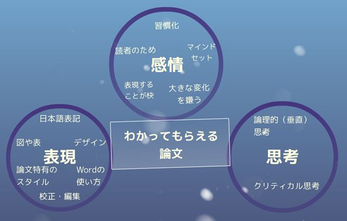
図1 本書で学べることの全体像
次に，本書を用いた論文の書き方の学習のコツを述べておく．
■自分のペースで少しずつ学ぼう． 一気に本書の全部を学習するのはほとんど人には無理があるだろう．1節ずつ学んでいける人はそれでいいし，きつければ1ページ，それでもつらいなら1段落ずつでもよい．音声動画版を1日1回分ずつ学んでもよい．
■学ぶ順番も自由だ． 前から順に2章，3章，......と進めてもいいし，辞書のように必要そうなところから参照してもいい．文書作成の土台になるメンタル面を扱った12章 から始めるのもいいだろう．
■実践の中で生かしてみよう． 自分が書く文章の中で，本書で学んだことを使ってみよう．レポートや論文といった課題からの学びがより実りあるものになるはずだ（ただ単位や卒業証書のためだけに取り組むのはもったいない！）．完璧でなくてもよい．本書の一部でも実践できるようになることに価値がある． 実践に移しやすいように各章の最後に「今すぐ」できそうなワークを各章の最後に載せた．いくつかのステップからなることもあるが，最初のステップだけでもやってみてほしい．
本書を手に入れても，すぐには学ぶ気にはならなくても構わない．
伝えたい思いの乗った内容がある
↓
何とかして理解してもらいたい
↓
そのためには読み手が読む気になるような表現を知りたい
というのが本来の順序だからだ．論文に対する細やかな配慮をする気になるには，伝えたいというエネルギーが必要 になる．学ぶ気になったときが最適のタイミングといえる．
では，論文を作成する前に確認することからはじめていこう．
まず，論文を作成する準備として，文章を書き始める前に確認することを以下に列挙する [1]．論文の大まかな枠組みと主題を最初にはっきりとさせてから文章を書けば，本当に伝えたい内容から大きく外れたものを作成することも少なくなる．
論文の役割は何か？
研究室内での成果報告の場合は，研究の背景は簡単に述べ，研究方法･結果に至るまで･考察をできるだけ詳細に述べる．学会の要旨では，背景･研究方法･結果と考察をコンパクトにまとめ，研究室外部の人々に自分たちの研究の重要性をアピールしよう．
主張したいことは何か？
論文の主題を決め，何を主張したいのかを1文でまとめておく（文献 [1] ではこれを「目標規定文」とよんでいる）．1章の第1文 はその例である．目標規定文→目標規定文を支えるトピック→トピックを支える個々の根拠......という流れで論文の構成を考えておく．論文には主張と，主張を直接支えることだけを書く．主張に関連しない内容はカットする． これは，3.1節 の文章が論理的であることにも関連する．
論文の長さは？
学会･卒業論文･修士論文の要旨･原著論文などは，投稿規定で長さに制限が設けられている．この長さに応じて，主張を支える内容の詳しさを決める．
対象とする読者は誰か？
読者は誰なのか，そして，その人はどんな予備知識をもっていて，何を求めているかを想定する．それに応じて前提知識として論文に書いておくべき範囲はどこまでか，結果にいたるまでを詳しく書くべきかどうか，最終結果の説明に集中するかなどの内容の取捨選択をする．読者がもっている知識を多めに見積もってしまう ことがほとんどなので，長さの制限が厳しくなければ少し詳しく書きすぎるくらいがちょうどいい．自分の頭の中では感覚的には理解･イメージしていても，言葉になっていない内容がないか気をつけよう．言葉になっていないことは他人は理解できない．このような内容は著者本人の考察･主張の中心になる重要なものである可能性がある．
論文の投稿規定
論文の投稿規定は，先ほどの長さだけでなく，様々な点に及ぶ．図表のサイズ･キャプションの表記方法･本文の段組･行数･行間の幅･フォントの種類とサイズ･ページの余白などである．細かなところまで決められていることもあるので，投稿規定を理解してから論文を作成しはじめよう．ひながたのファイルが提供されていることもある．このときはひながたを書き換える形で論文を書けば自然と投稿規定に合う．
論文を作成する目的とそれに求められる性質がはっきりしたら，論文を書いていく．論文は主に文章と図表からなる．次章からこれらを表現する方法を解説する．まずは，わかりやすい文章とはどのようなものかを理解しよう．
■論文を
・一番主張したいことは何か
・誰に書くか
・求められる体裁はどんなものか
をはっきりさせてから書いていこう．
■読み手は自分がやっていることを知らないのを意識しよう．
Step 1
今作っている，または最近作った文書は誰に向けたものかを考えよう．
Step 2
Step 1で考えた相手に理解してもらいやすくするために，表現にどのような工夫をすればいいか考えよう．
Step 3
Step 2で考えた工夫を実際に文書に反映させてみよう．1文だけでも1単語だけでも改善してみよう．
論文の文章が読み手にとってわかりやすくなっていれば，読み手が論文を読み進めてくれる可能性が高まる．そして成果として他人に認識されやすくなる．わかりやすい文章が備えている条件は，論理的･明確･簡潔なことである．本章ではこれらの条件を満たすための文章作法について説明していく．[1--7]
論理的な文章とは，読者がそれを前から読んでいってすんなり理解できる文章のことである．すんなり理解できる文章とは，何を主張したい文章なのかすぐにわかり，論理の展開に飛躍がなく，主張を直接支える内容だけが書かれており，直接支えない余計な部分がない文章だ．論理的な文章を書くために，2章 でも述べたように，論文全体としての主張である目標規定文とそれを支えるトピック をまず明らかにしておく．そして，一つのトピックについて一つの段落を形成する．トピックが変わらなければ段落も変えない．
学生さんのレポートや論文でよく見かける事例を挙げて，この段落形成の原則を具体的に説明する．まず悪い例を次に示す．
図1に実験結果を示す．
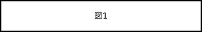
この図から～ということが読み取れる．この傾向から......と結論づけられる．
図1の上下の文章は，どちらも図1から読み取れることがトピックなので，一つの段落で書くのがよい．以下のようにする．
図1に実験結果を示す．この図から～ということが読み取れる．この傾向から......と結論づけられる．
このようにすると図の前に関連する文章がまとまっているので，文章が読みやすくなる．なお，書籍によっては段落の長さの目安を文字数や行数で与えているが，トピックで段落を区切るのが第一に考える原則だ．
各段落は以下の内容を含めよう [1,3,6]．
■段落のトピック（課題）を示す文
（トピックセンテンス）
■その段落とほかの段落の関係を示す文
（つなぎの文）
■段落のトピックを直接支える根拠，
課題に対する議論･答え
（トピックの展開文）
トピックセンテンスは，これから述べることの要点を読者に伝える役割がある．読者にできるだけ早く文章の要点を知らせるために，トピックセンテンスを段落のはじめにおく のが原則だ．この節の最初の段落も，1文目がトピックセンテンスになっている．下に再掲する．
論理的な文章とは，読者がそれを前から読んでいってすんなり理解できる文章のことである．
「論理的な文章がどんなものか」についての段落であることがすぐにわかる．
次のつなぎの文は，前後の段落のトピックの関係を説明したいとき，また，論文全体で伝えたい主張とその段落で述べるトピックの関係を読者に伝えたいときに入れる．場所は段落の最初または最後におく．段落のつながりに必然性があるような構成で，つなぎの文なしでも読者が文書をすんなり読めるのが理想的だ．つなぎの文なしで済めば，トピック･センテンスを段落の最初における．
最後に，トピックを展開する文は，トピックを直接支える内容になっているかを常に確認しながら書こう．トピックを直接支えない余計な文は，段落の中から除く． せっかくやったことだからいろいろと含めたい気持ちもわかる．だが，自分の一番伝えたいことを読み手が理解できる確率を上げるために思い切って削っていこう．
ただし，自分の主張にとって都合の悪い内容を省いてはいけない． 自分の主張が通用する範囲を明示し，わかっていることとわかっていないことを明確に区別 して読者に情報を伝えよう．
また，トピックを展開する部分では，論理を展開することが多い．このときは，論理展開の一つ一つのステップを省略することなく，すべてのステップを丁寧に説明 しよう．文章は多少くどくなるかもしれないが，論理に飛躍が生じるよりはこちらのほうが好ましい．さらに，前から読んでいってすんなり理解できるようにトピックを展開するには，既知の内容と未知の内容を含む文をつなげるとよい．人間の理解度は，既知の内容から入ると高まるので，既知の内容の後に未知の内容がくる とよい．また，文で主張したいことを主語にし，主語の具体的な動作･状態を述部にすると明確な表現になる．以上のことと，段落の最初でトピックを宣言することから，トピックを表す言葉を主語（文の先頭）にし，トピックを展開する内容をできるだけ述語（文の後ろ）にもってくるのが望ましい．この議論をまとめると図2のようになる．ここで書いた段落の構成法は文献 [5] がとくに参考になる．
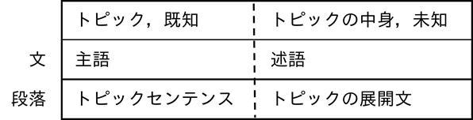
図2 段落内の構成
具体例として本節の最初の段落の文章を再掲する． 緑背景で白抜き にした部分は前文の内容から次の文が始まっていて，太字 の部分はこの段落のトピックを主語にしている例である．
論理的な文章 とは，読者がそれを前から読んでいって すんなり理解できる文章 のことである． すんなり理解できる文章 とは，何を主張したい文章なのかすぐにわかり，論理の展開に飛躍がなく，主張を直接支える内容だけが書かれており，直接支えない余計な部分がない文章だ．論理的な文章 を書くために，2章 でも述べたように，論文全体としての主張である目標規定文とそれを支える トピック をまず明らかにしておく．そして，一つの トピック について一つの段落を形成する． トピック が変わらなければ段落も変えない．
もう一例として，筆者のブログに書いた「段落内の文と文のつながりをよくする 」の記事でもトピックに関連する言葉か，前後の文で連続して出てきた言葉を太い赤字で示している．ここで述べた原則をこの記事でも意識的に実践している．
ここまで一つの段落を構成する方法を説明してきたが，ここからは論文全体の構成に移っていく．論文全体の構成を示したものが図3である．まずこの図の一番上にある論文の最初の段落は，文書全体のトピックを説明する．大きい背景からスタートして，自分のトピックへと焦点を絞るように説明を進めていき，その論文のトピックを述べて段落が終わる．よって，この段落だけは，トピックセンテンスが例外的に段落の最後にくる．さらに，上下にある要素間については互いに必要なものかどうか（上位から下位：Why so?，下位から上位So What?） を考えながら構成しよう [8]．上位トピックに対して，Why so?なぜそう言えるの？という問いへの答えが下位トピックになる．逆に，下位トピックの内容を合わせて，So what?それで何が言えるの？と総括した答えが上位トピックになる．本章の内容がこの関係の例になっている．この関係を図にまとめると図4のようになる．
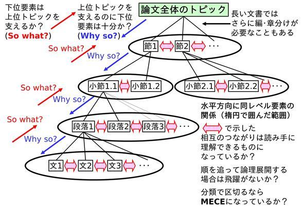
図3 論文全体の構成
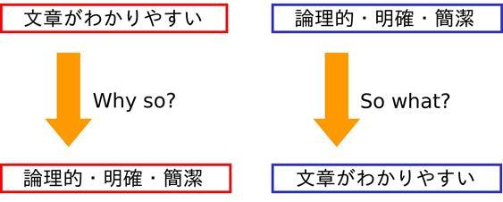
図4 上位･下位トピックの関係<
段落間の関係を示すときに，内容の大きな区切りごとに文章をいくつかの節（例：第1章→1.1，1.2，......，節は二つ以上であること），さらに小節（例： 1.1→1.1.1，1.1.2）に分ける際，各節･小節の前に内容の簡略な概要を入れるとよい．本文でも章を節に分けているときは，節の前にそれ以後の節の内容やそれ以前の章の内容との関連を手短に説明している．章全体に関わる背景や節に分けた基準を書くこともある．さらに，同じ節同士，小節同士といった，同じレベルにある要素は論理的に等価 なものにしておこう．セクション名は文法的に等価にしておくとよい．これも3章とその中の節タイトルが例になる．
水平方向にある要素については，複数の段落で論理展開するときは，段落内をすんなり読めるようにしたときと同じ要領で段落を並べる．論理に飛躍はないか，既知から未知への流れをここでも意識しよう．また，分類で段落などを分けている場合は，図3にも出てくるMECE （Mutually Exclusive, Collectively Exhaustiveの略で，モレなく，ダブリなく ）を確認しよう [8]．これも論文の構成を考える上で役に立つ視点である．
さらに，論理的な文章を書くためには，自分の考え方のスタイルが妥当であるか，つまり，自分はクリティカルな思考 をしているか常にモニタリングする必要がある．文章を書いたら一度立ち止まって，以下に列挙する質問を自分にしてみよう．思考には歪みが生じがちなこと，クリティカルな思考を学ぶには引用文献 [8,9] がお薦めだ．因果関係と相関関係についてはニコニコ動画にある『アイアイとゆっくりの経済講座139「相関関係と因果関係」 』がわかりやすい．
■特定の固定観念に過度に偏っていないか？
■異なる観念･考え方･視点はないか？
■ふかん的に考えているか？考える範囲は狭すぎないか？
■一方で重要な点に焦点を当てているか？
■直感だけに頼っていないか？
■結論につながる根拠がそろっているか？
■目的と結論は対応するか？
■相関関係と因果関係の両方が本当にあるか？（相関関係は因果関係を保証しない，最大値･最小値がある場合はトレードオフの関係になる要因が存在する）
■自分の考えの流れは論理的につながるか？飛躍がないか？
■自分の考えは明確に，具体的になっているか？
■他人の意見を聞くのも大事だが，自分で考えたか？検証したか？納得したか？
さらに自分の組み立てた論理をモニタリングするための視点を加えておく．この節の内容とは一見矛盾するように感じる人もいるかもしれないが，「自分の」論理に固執しすぎないことも頭の片隅においてほしい．研究をまとめる論文とそれに関連するプレゼンでは，理路整然とした動機（とくに工学では何かに役立つということ）があるかのように話す，書く，その動機にそった形で結果を見せる，そして動機に対応した結論を導くように指導されることが多いだろう．この一連の流れをストーリーととらえることもできる．加えて，仮説も「こうなったら～になって，次に......になれば，○○と主張できる」といった話の流れになるのでストーリーと考えられる．人間という器を使っている限界ではあるのだが，ストーリーがないと自分も他人も研究内容を理解できなくなってしまう面があるのは確かだ．しかしストーリーにこだわりすぎるのも危険だと私は感じている．その理由を挙げておく．
■研究の本当のきっかけは個人の感覚･感性･興味であることが多い．役に立つこと･論理が最初から前面に出ているとはかぎらない．
→論理的な動機ばかりを重要視していると研究する本人の感覚が封じられてしまい，その人の感性を活かしにくくなってしまう．
■ストーリーは語る側の価値観が強く影響する．だが研究対象や真理は個人の固定観念に無関係に存在する．研究する側がストーリーを組みやすいように研究対象がふるまってくれるわけではない．
→ストーリーにこだわりすぎると真理を見誤る可能性がある．ストーリーに合うように結果を見せようという動機が強くなって印象操作に駆り立てられることもある．
■論理的ということは簡潔ということでもある．簡潔にすると読み手は理解しやすくなる一方で，切り捨てられる側面も出てきてしまう．
→未知の対象に取り組む研究で，切り捨てていい要素を確定できるだろうか？
何を論理の前提とするのか，文章を読んで論理的に感じるかどうかにもその人の価値観が入り込む．たとえば人間の視覚や聴覚には限りがあるがその知覚の外側の存在もあるように，私たちは人間の限られた視野の中で論理を組んでいるに過ぎないことは認識しておこう [10]．論理的か，ストーリーが組みあがっているかと真理の存在は関係がない．ストーリーは必要だがこだわり過ぎないさじ加減が重要だ．このさじ加減も言葉で表現しきれるものではなく，各自で感じ取るしかない．
今書いたように真理をありのまま論文にするのは無理なのだが，少しでも真理を歪めない表現をするための質問を挙げておく．
■自分の表現は本当に真理を表現しようとしているのか？
■自我の狭い意識の範囲内でストーリー･論理を組むのに都合がいいように真理を歪めていないか？
■自分が論理的だと思い込んでいることにこだわりすぎていないか？
これらを自問するようにしよう．その意味でも個人の感性はもっと大切にされてもいいのではないかと考えている．
次の動画は真理の扱いを考える上で大学では通常習わない視点を与えてくれる．何か感じるところがあれば見てもらいたい．文献 [10] のとくに第2章･第5章も人間の視野や科学的手法の限界について理解するのに役立つ．
■『根拠無き自信』宇宙の叡智をキャッチする方法 ，田久保剛（たくぼたけし）Official Channel
上記動画の内容を文字起こしした記事はこちらにある．
■根拠がない方が真理に近い ，無限なる自分に出逢う道
次の条件は，明確であいまいさがなく，はっきりと言い切ることである．明確な文章とは，読者が内容を一義的に理解でき，誤解しない（誤解できない） 文章であり，筆者自身の判断を表明するものである．自分の判断を明言し，筆者は論文に載せた内容に責任をもつ．本節では，はっきりと言い切るための表現の注意と事実と意見を書きわける方法を述べる．誤解されない文を書くためには，文中の修飾語の順序，句読点のうち方を適切にする必要もあるが，これは4章 で別に述べている．
明確な文章を書くためには，まず明言を避けるようなぼかした表現を使わないことである．避けるとよい表現を以下に示す．明確に言い切ることは，内容に責任とリスクを負うことでもある．これができるだけの確実さのあることだけを論文に表現しよう．
断定を避ける表現 ：「と思う」，「してみる」，「であろう」，「とみてもよい」，「と考えられる」，「らしい」，「たぶん」
受身形 ：「れる」，「られる」
量をぼかす言葉 ：「ほぼ」，「約」，「ほど」，「ぐらい」（値の精度については表示の桁数で示せるので，約などの表現は本来不要）
最後の点を補足すると，たとえば「0.1 mL」と「0.10 mL」では意味が違う．0.1 mLは0.05 mL以上0.15 mL未満という意味で，0.10 mLは0.095 mL以上0.105 mL未満という意味になる．また，分析装置や表計算ソフトの結果は測定精度の桁数に合わせて から論文に使おう．
明確な文章を書くためには，上記の表現だけではなく，事実と意見を書きわける こと，事実の裏付けのない意見は書かないことが必要である．
まず，事実の記述における注意は次の4点である [1]．
1．事実は主張を支えるものだけを書く．
2．ぼかした表現を使わない．
3．事実を述べる文に主観で決まる修飾語（例：便利な･優れた）を入れない．このような修飾語を入れると意見の表明になってしまう．
4．形容詞や副詞よりも内容を特定できる言葉や数値を使う．たとえば「高温で」よりは「500℃以上で」のほうがよい．
次に，意見の記述で注意すべきことは，以下の2点である [1]．
1．意見の内容が主観に依存する言葉だけで表されるときは，文の主語（「私は」）と意見を表明する述語（「と考える」）は省くことができる．
2．上記以外のとき，意見か事実かわかりにくいときは，意見の主体を示す主語，意見表明に対応する述語を必ず入れる．
例をあげて考えてみよう．まず，文の主語･意見を表明する述語を含んだままの文である．
(1a)私は， 装置Aのほうが装置Bより優れていると考える ．
(2a)私は， この場合には拡散よりも対流の効果が大きいと考える ．
次に文の主語，意見を表明する述語を省いた文を示す．
(1b) 装置Aのほうが装置Bより優れている．
(2b) この場合には拡散よりも対流の効果が大きい．
(1a) と (1b) はともに意見の文であることが明らかである．しかし，(2a) は意見の記述のままである一方， (2b) は事実の記述である．科学･技術文書では，(2b) のように意見を事実のように書いてはならない のである．
いまの例は，事実を意見のように書いたものであったが，次に，意見なのか事実なのかあいまいな文の例を示す．
この違いは，反応する分子の触媒の吸着サイトへの吸着速度が分子の種類によって異なり，水素では吸着速度がより速い ためであると考えられる．
この文全体は意見の記述であるが，下線部は事実なのか，意見なのかがあいまいである．もしこの部分を「事実」として記述したいのならば，
この違いは，触媒吸着サイトへの吸着が水素ではより速く進むという吸着速度測定からえられた事実に起因するものと考える．
とすべきである．次に「意見」として記述したいときは，
この違いは，触媒吸着サイトへの分子の吸着が水素ではより速く進むと想定すれば説明できる．
とすればよい．
なお，意味のあいまいさを取り除くためには，修飾語と被修飾語を極力近くするといった，文中での修飾語と被修飾語の位置関係も重要である（4.1節 も参照）．
さらに，論文の文章が簡潔であれば，読みやすさも増し，書き手が伝えたいことが読み手に伝わりやすくなる．しかし，単に文章が短ければよいというものでもない．言いたいことを表現するのに長い文が入ることもある．短い独立した文を，相互の関係が明確になるように並べることができるならば，こちらを選ぶほうがよいということだ．簡潔な文章の本質として，"The Elements of Style" [11] のpp. xv--xviに次のように書かれている．最後の「every word tell」がまさに本質を示している．
-----引用開始-----
Vigorous writing is concise. A sentence should contain no unnecessary words, a paragraph no unnecessary sentences, for the same reason that a drawing should have no unnecessary lines and a machine no unnecessary parts. This requires not that the writer make all sentences short and avoid all detail and treat subjects only in outline, but that every word tell.
-----引用終了-----
本質を守るために，具体的にどうすればよいかを以下に示していく．
一つの文で言いたいことを一つ書く．新たに出てくる未知の内容は一つにする．つなぎの言葉に注意して個々の文を論理的につないでいく．
文と文の関連を明らかにするために，接続詞を適切に使うだけでなく，代名詞（この，これら，このような）＋前の文で出てきた名詞で文を始めることも有効である．「代名詞＋名詞」の形は既知の内容でもあるので，論理的にするところでもいった既知から未知への流れも作りやすい．
一文の文節の数を13以下にし，文字数も50文字以下が望ましい．とくにトピックセンテンスは短くする．[6]
文の長さの目安は，文字数だけでなく，文節の数を多くしすぎないことも気をつけよう．複数行にわたる文があれば二つ以上に分けるか短くできないか考えよう．主題を述べる文が長いと1段落1トピックの原則が崩れやすいのでとくに文を短くするのを意識しよう．長い文と分割･表現変更による修正例を載せておく．
例）
マイクロリアクターは，/名前の/とおり，/主に/μmオーダーの/流路を/含む/反応器の/ことを/指すが，/広い/意味では/微小な/反応場特有の/特徴を/生かした/ものは/マイクロリアクターの/分類に/入ると/考えられている．（21文節，92文字）
↓
マイクロリアクターは，/名前の/とおり，/主に/μmオーダーの/流路を/含む/反応器の/ことを/指す．（10文節，42文字）
しかし，/広い/意味では/微小な/反応場特有の/特徴を/生かした/ものは/マイクロリアクターと/考えてよい．（10文節，45文字）
連用形による中止法（～し，......；～して......）や「が」で文章をつなぎすぎない．
「が」は逆接の意味だけで使うようにするとダラダラと長い文を書かずにすむ（4.3節 も参照）．一つ前の項目の例文でも「が」でつなぐのをやめて文をわけている．
文はできるだけ能動態で書く．
能動態の文は受動態の文よりも表現が簡潔になり，内容を強く伝える表現になる（二つ前にある項目の例の文末を参照）．
文の主語を意識しながら書く．
個々の文をつないで長い文にするときは，文全体の主語をはっきりさせ，修飾語の表現･順序を調整する必要がある（4.1節 も参照）．
重複文を極力使わない．必要に応じて文を分ける．
重複文とは，1文に単文（主語＋述語），重文（主語＋述語，接続語，主語＋述語），複文（[主語＋述語]が主語にかかる文および従属節を含む文）が混じり合ったものである．とくにトピックセンテンスに使うと主題がぼやけるので使わないようにしよう．
（重複文の例）
中間体Aは高い安定性をもち，従来は低温での合成が必要であった最終生成物Bの合成がこの性質によって常温でも可能になった．
→主題が「Aの安定性」についてなのか，「Bの合成が常温でも可能になったこと」なのか不明
（「Bの合成が常温でも可能になったこと」を主題に書き換えた例）
従来は低温での合成が必要であった最終生成物Bの合成が常温でも可能になった．これは中間体Aの高い安定性によるものである．
次に，簡潔な表現にすることが必要である．そのために文章から排除するとよい表現を以下に挙げる．
埋め草（文や節の末にある意味のない言葉）
次の例文を比較してほしい．
（冗長な文，下線部が不要な部分）
このプロジェクトの研究を実施するため
には，材料科学に関する
基礎的素養はもとより，理論物理など
を身につけた人材が不可欠である．
（簡潔にした文）
このプロジェクトの研究には，材料科学の基礎的素養があり，理論物理も習熟した人材が必要である．
ほかにも意味の薄い「こと」「もの」「ほう（方）」「という」「ところ」「について」「ように」も削れないか探してみよう．
冗語（同じ意味の言葉の連続）
例）まず 最初 に，一番 最後 に，嫌悪感 を感 じる→嫌悪感をもつ/覚える，頭痛 が痛 い，途中 で中 止する，半ば ～しかかって ，疑い があるのではないか と→疑いがあると，赤色 の色 素→赤い色素，製造 メーカー →製造会社，排気 ガス →排気･排ガス･排出ガス，従来 から →従来
不自然な表現（漢字の多い硬すぎる表現･外来語を過度に含む表現）
例）
を対象として→について
運動を行う（名詞＋動詞）→運動する（動詞1語）
フィージビリティを高めるためのコンセプトをシンプルにまとめる
→実現可能性を高めるための指針を簡潔にまとめる
非常に大事なことなので繰り返すと，「簡潔に」とはいっても，短ければよいというものではない．必要な内容はもれなく書き，文章中のすべての表現が明確な役割をもつようにし，必須ではない表現を除いていこう．
本章では，わかりやすい文章の性質について述べた．ここで述べてきたことの本質の部分は英語で論文を書くときにも応用できる．より文章の細かい部分に視点を移すと，書き手の述べたいことが確実に読み手に伝わる論文を作成するためには，文法的に正しい日本語であることも重要だ．そこで次章は文章を書く上でとくに注意すべき文法の要点を説明していく．
■わかりやすい文章の条件
・論理的
・明確
・簡潔
■段落は一つのトピックに関する文の集まり．
■話に飛躍がないか気をつけよう．
■論文の上位と下位の要素のつながりはWhy so?，So what?で確認しよう．並列する要素は論理的につながるか，分類でわけているならMECEを確認しよう．
■自分の思考を客観的にモニタリングしよう．
■はっきりと言い切ろう．事実と意見を書きわけよう．
■簡潔な文にするために
・文章中のすべての表現に明確な役割をもたせる．
・必要でないものは一切排除する．
・ただし必要なことはもれなく書く．
Step 1
今書いている，または最近書いた文章の論理をWhy so?，So what?で確認してみよう．
Step 2
数値や名称で曖昧な表現を具体的にできないか検討しよう．
Step 3
自分の書いた文章が意見なのか事実なのか確認してみよう．
Step 4
回りくどい表現，同じことの繰り返しになっているところを簡潔にしよう．
前章で示したわかりやすい文章の条件を満たすためには，正しい日本語であることも大切だ．本章では文章を書く際に注意すべき日本語の文法について説明する．ここではとくに，修飾の順序，句読点の打ち方，接続語の用法，慣用句の受け答え，格の正しい文について述べる．
ここではわかりやすく，読み手に誤読されない文章を書くための，修飾語を並べる順序の原則を文献 [12] から引用しておく．修飾語の並べ方に迷ったときはまずはこの原則に照らし合わせてみることをおすすめする．ただしこれらはあくまで原則であり絶対的な法則ではない．言葉の順序を入れ替えても意味が通じることもある．原則にはまっていることよりも，自分の意図が確実に伝わるか，わかりやすい表現になっているか が大切だ．段落全体の構成からトピックを表す語を文頭にもってきたほうがいい場合もある（3.1節参照 ）．以下にあげる五つの原則のうち，とくに大事なのは最初の三つである．詳細な説明は文献 [12] の第二･三章を参照してほしい．
原則1：かかる言葉と受ける言葉はできるだけ直結せよ．
例）
この性質によって
上の例文で「この性質によって」を文頭に置いてしまうと，合成が困難な理由が「この性質」であるようにも読めてしまう．修正後の表現だとハイブリッドナノ粒子の創製が可能になる理由が「この性質」であるとはっきりする．
入れ子構造の修飾･被修飾関係も避ける．ただし，主語が長い場合は原則3の二つめの例文のようにすることもある．
例）
著者は
提案した方法が目的の成分の合成に有効であると報告した
．
↓
提案した方法が目的の成分の合成に有効であると著者は報告した
．
原則2：節を先にし，句をあとにする．
例）
○恒温槽に設置したステンレス製の反応器
×ステンレス製の恒温槽に設置した反応器
「恒温槽に設置した」が節（主語と述語からなる言葉のまとまり）で，「ステンレス製の」が句（主語と述語をもたない言葉のまとまり）である．句が先にある後者の例では，「恒温槽」が「ステンレス製」であると誤解されるおそれがある．これは，文の先にくる句（ステンレス製）が直後の節の名詞（恒温槽）だけにかかるようにも読めるからである．
原則3：長い修飾語ほど先に，短い修飾語ほどあとに．
例）
○前節の実験で合成した粒子を洗浄･乾燥した後に有機溶媒に分散した．
×有機溶媒に前節の実験で合成した粒子を洗浄･乾燥した後に分散した．
修飾語は，「前節の実験で合成した粒子を」「洗浄･乾燥した後に」「有機溶媒に」の三つである．短い修飾語である「有機溶媒に」が最後にくるほうが自然な文章になる．この原則によって主語と述語が離れるのは問題ない．次の例をみるとよい．
例）
○この材料を合成するプロセス開発では触媒開発が鍵だと言われてきた．
×触媒開発が鍵だとこの材料を合成するプロセス開発では言われてきた．
原則4：大状況･重要内容ほど先に．
例）
○科学の発展において材料創成の役割は大きくなってきている．
×材料創成の役割は科学の発展において大きくなってきている．
二つの修飾語「科学の発展において」「材料創成の役割は」の長さはほぼ同じである．この文の場合，「科学の発展において」の科学 が「材料創成の役割は」の材料創成 よりも大きな状況に対応する．文単位でみると，ここで挙げた例ではどちらの文でも意味は通る．しかし段落単位で考えると，この原則を適用したほうが重要な点，トピックが何かが読者に伝わりやすくなる．だからもし段落のトピックが「材料創成」なら後者の表現をあえてとることになる．
原則5：親和度（なじみ）の強弱による配置転換．
単語単位でのなじみの強弱によってこの原則が論文で問題になることはまずない．個人の感覚･感性に依存する形容詞･副詞を使うことがほとんどないからだ．
文字単位でのなじみで，改行によって読み違えやすい次のような例もある．上の例だと「先生」「きのこ」が強く印象に残りやすい．読み違いを防ぐには語順を変えればよい．
例）
×～がこの先生
きのこるには
○この先～が
生き残るには
以上のような修飾語の並べ方も大切だが，修飾する部分が長くなると文章はわかりにくくなる傾向にある．論文をわかりやすくするには修飾語を短くする ことも意識するとよい．個人の感覚に依存する「とても」「非常に」「面白い」といった形容詞や副詞を削除する，説明の付加のために修飾語を並べる場合は一つの文で済ませるのではなく，複数の文に分けて表現することも検討しよう．たとえば原則2の例は次のように表現もできる．
例）
反応器の材質はステンレス製とした．この反応器を恒温槽に設置した．
句読点のうち，句点「．」は文末にうてばいいので，とくに問題になることはない．一方，読点（テン）「，」はうてる位置に選択肢がある．その位置の選び方で文章の意味に重要な影響を与える．文章の句読点は文字と同様かそれ以上の重要性があり，正しく句読点をうつことは，誤解のない要点のわかりやすい文章を書くために不可欠である．テンをうつときの二つの原則を文献 [12] の第四章から引用しておく．詳細な原則の適用はこの文献や文献 [6] の第2章3節も参照してほしい．
原則1：長い修飾語が二つ以上あるとき，その境界にテンをうつ．
例）
2相が幅方向に並びながら流れていく平行流や，一方の相が微小な液滴になって他方の相中に分散したエマルションを形成することもある．
「2相が幅方向に並びながら流れていく平行流」「一方の相が微小な液滴になって他方の相中に分散したエマルション」がともに「形成することもある」にかかる．
原則2：原則的語順が逆順の場合にテンをうつ．
例）
対象とする範囲の物質収支をとることがプロセス設計では必須である．
プロセス設計では，対象とする範囲の物質収支をとることが必須である．
強調したい言葉がある場合，4.1節 に示した原則で決まる語順から入れ替えることもある．下側の例文は「プロセス設計では」を筆者は強調したいという思想を表した といえる．さらに，テンのうち方で意味が変わってくることもある．上の例は「プロセス設計では」の後のテンがなくても，それが「必須である」にかかるのがわかる．一方，次の例でテンをとってしまうと，4.1節の原則2 で示したように「ステンレス製の」が「恒温槽」にかかるように読めてしまう．
例）
ステンレス製の，恒温槽に設置した反応器
上記に加えて，同格の並列では中点（半角）「･」を原則として使い，修飾語がついている場合だけ読点「，」を使う．
例）
修飾･被修飾語
修飾の順序，句読点の打ち方，接続語の用法，慣用句の受け答え
これらはあくまで原則である．ほかにも文頭の接続語の後や修飾･被修飾語の関係に誤解を生じないようするためにうつことも多い．また，テンは「思想の最小単位を示すもの」（文献 [12] p. 135）であるから，強調したい内容によってテンのうち方を考える必要がある．ただし，重要な場合でないかぎり必要以上にテンをうつのはやめ，意図を考えながらうつ ようにしよう．
4.1節，4.2節から言葉の並べ方，テンのうちかたで意図が変わりうること，誤解の原因になりうることを理解してもらいたい．しかし，言葉を並べること，句読点をうつことは文章を書くときには当たり前のようにこなしているため，その方法が妥当かどうかを検証しようという気になりにくい．さらに，文章を書いている本人はその内容について理解している（つもり？）だろうから，自分の表現に違和感をもちにくい．既知であることを起点に理解を広めることもできるが，文章の書き方と内容の両面に既知であることがわかりやすい文章を書くブロックにもなることは認識しておこう．2章 の繰り返しになるが，読み手は書き手ほど文章の内容を知らないし，文章の背景にある情報ももっていないものだ．わかりにくい表現を減らす対策として，文章を書いたら1日は時間をおいて自分の文章を客観視できる状態で読み返そう（11.1節 も参照）．
接続詞だけではなく，助詞や助動詞なども含めた語と語･文と文をつなぐ働きをする言葉をここではまとめて「接続語」とよぶ．これらのなかで複数の意味をもち，とくに注意すべきものについて述べる．このような接続語は，一つの接続語を一つの意味で用いること． [2--4,7,13]
「が」の用法
「が」は「逆接」と「並列」の2種類の用法がある．この「並列」の「が」は「逆接」の意味に誤読される可能性がある．また，並列の「が」を用いると文が長くなり，3.3節 で述べた一つの文では一つの未知の内容を述べる，という簡潔な文章の原則が成り立たなくなる．これらの理由で，「が」を極力「逆接」の意味だけで用いるとよい．
「より」の用法
「より」は「よって」「で」の意味と「さらに」「いっそう」の意味で使われる．後者の意味で統一して用いるほうがよい．手段の「より」は，「よって」「で」「を用いて」と言い換えることができる．
「れる」の用法
「れる」には「受身」と「可能」の意味がある．近接して用いると意味が紛らわしくなるので，「れる」が近接している場合は，「受身」は能動態の文章に変える，「可能」は「できる」「可能である」にするとよい．また，「見ら れる」を「見れる」にしてしまうような「ら」抜き言葉に気をつけよう．
「逆接」の接続詞の用法
「逆接」の接続詞としては，汎用性の高い「しかし」だけでなく，機能が最も近い「だが」に置き換えながら使うとよい．ほかにも，強い意外感を出す「ところが」「にもかかわらず（硬い文章にしっくりくる）」，補足修正的な文脈に合う「ただ（し）」といったように逆接の接続詞は多種あるので文脈に最も合うものを使いわけよう．さらに，逆接の接続詞の前後には対立する内容 をもってくる必要もある．この前後は本当に対立する内容になっているか？と自問し，そうでなければ逆接の接続詞を置き換えるか削除することを考えよう．
「並列」の接続詞の用法
並列の接続詞としてまず挙げられるのは「また」である．シンプルな表現で情報を追加できる便利さはあるが，連続して使うと読み手には読みにくいし，文章構成が練られていない印象を与えてしまう．並列の接続詞も文脈にぴったり合うものを選択しよう．
単純な追加の表現である「それから」，最後に重要な情報を加える「そして」，ダメ押しをする「そのうえ」「しかも」「それにくわえて」「ひいては」といった接続語もある．意味が少しずつ違うので，その接続語を使って不自然でないか 確認するようにしよう．
相違点を見せたいときは「一方」「他方」，内容が明確に対になっていれば「それにたいして」「反対に」「反面」が使える．
なお，規則･規定のような非常に硬い文書では，「および」「ならびに」「かつ」がなじむ．このような文書を作成するときには意識して使うとよい．普通の文書には使いすぎると表現が固くなりすぎるので気を付けよう．
接続語を使わないほうがよいとき
原則として，文と文の接続語は最低限だけ用いると考えておくとよい．接続語を入れすぎると文章の流れが悪くなることもある．接続語を入れると書き手の解釈がそこに加わる．このため客観的な事実を述べる際には接続語は極力使わない．
同一接続語の近接障害
同じ助詞が近接して繰り返されると文章はわかりにくくなる．これはとくに「の」「が」「を」「は」について注意しよう．一つの文（または句）の中でこれらを3回以上用いないようにする．接続詞も同じものが繰り返されると文章が単調になる．とくに逆接の「しかし」や並列の「また」は使える範囲が広いだけに使いすぎに注意するとよい．
「必ずしも」「全然」「決して」「いまだに」といった副詞には否定の語句が対応する（副詞の呼応）．話し言葉ではとくに，全然だいじょうぶ，と言うこともあるが，これは本来おかしな表現ということになる．否定の語句を導く副詞は，読者にこれから読む文に否定語がくることを前もって伝えておく役割をもつ．
対応関係がある言葉は副詞だけではない．「理由は～」とくれば「......ことによる」「......ためである」「......からである」と対応する．ほかにも「もし......なら」「なぜ......なのか」「なぜなら......だからだ」「たとえ......でも」「多分......だろう」「～たり......たり」（動詞が二つ並ぶときに後ろの「たり」を抜かすと不自然）などがある．一読して変に感じるのはこれらの受け応えが正確でないことが一つの原因であることが多い．[2--4]
格というのは，文法では文中の語句同士の関係を意味する．主語とそれに対する述語が正しく対応していない文や述語が必要とする目的語が欠けている文，つまり位置関係（配置）がおかしい文をを破格の文とよぶ．[1--3] まずは述語が欠けている例をあげてみよう．
A 私は，この点を考えると彼の提案したモデルは正しくない．
B ここで問題となるのは，除熱が不十分だと目的生成物の選択率が落ちる．
Aは「と思う」，Bでは「ことである」を文末に加えないと主語と述語が対応しない．
また，次の例では文の前半と後半で主語がねじれている．
我々は 熱交換器を伴う充填層型反応器を開発し，反応温度の変化を5℃以内に抑えられる安定性がえられた ．
この文では，後半部分の主語が「我々」ではなくなっている．このような文を避けるためには，文末を「がえられた」から「をえることができた」とすればよい．このねじれは例文のような主語･述語の離れた文章で起こりやすい．できれば主語と述語は近づける とよい．
さらに，述語が必要とする目的語が欠けている例を示す．
(1) サンプル分析を外注しようと考えている．
(2) 低温排熱の回収は製造プロセスのエネルギー効率向上に必須の課題である．熱交換器や低温反応を可能とする触媒開発といった排熱回収技術は従来から研究されてきたが，大きく向上させるためにはこれらに利用する材料開発が必要である．
(1)は「どこに 」が抜けているし，(2)では，「大きく進歩させる」の前に「エネルギー効率向上を 」が抜けている．(2)の二文目は並列の「が」や代名詞の「これら」を含んでおり，語順を変えて次のようにより簡潔にできる．
エネルギー効率を大きく向上させるためには，従来から研究されてきた熱交換器や低温反応を可能とする触媒開発といった排熱回収技術に利用する材料開発が必要である．
まとめると，破格の文を避けるためには，短くて簡潔な文 を書くこと，主語と述語をできるだけ近づける ことを意識すればよい．
ここまでに挙げてきたことは一般的な文章を書く際にも有効である．次章からは，論文特有の表現方法について説明していく．
■言葉の並べ方，テンの打ち方で意図が変わりうること，誤解の原因になりうることを認識しよう．
■文章の書き方，文章の内容の両面が既知という思い込みが文章修正のブロックになりうることも認識しよう．
■一つの接続語を一つの意味で用いる．
■状況にあった接続語を選ぶ．
■同じ接続語が近くに多すぎないか注意する．
■決まった受け応えのある言葉を使っているときは修飾される部分に注意する．
■主語と述語の対応，目的語と述語の対応に気を付けよう．
■破格になりにくくするために
・主語と述語は近づける．
・簡潔な文を書く．
Step 1
今書いている，または最近書いた文章をテンの打ち方に注目して読み返してみよう．不自然なところがあれば改訂しよう．
Step 2
修飾語と被修飾語が遠い，または修飾の関係な曖昧なところは語順を変えてみよう．
Step 3
自分の書いた文章を接続語に注目して読み返してみよう．同じものが連続していれば書き換えよう．
Step 4
主語が抜けていないか，主語と述語が対応しているかを確認してみよう．
専門分野特有の表現ルールに従って論文を作成するのは，専門を共通とする読み手が情報を認識しやすくするためである．この表現ルールにきっちり従って論文を作成するのは，書き手からすると慣れないうちは面倒に感じるかもしれない．しかし，慣れればルールに合わせる負荷も減ってくるし，表現方法を迷わずにすむので返って速くなる可能性もある．ここでは，化学工学の分野での論文の表記上の原則を列挙していく．専門分野が異なれば以下に挙げる表現のルールがあてはまらないこともある．[1--4,14--21]
変数のシンボルはイタリック体にする．
数値が入る文字だけをイタリック体にすると覚えておこう．ちなみに，英数字専用フォントにはこの字体が入っていることが多く，厳密には単に文字を斜めにしただけの斜体とは違う（二つ後の項目 も参照）．変数をイタリック体にしないと，次の例のように化合物名のA なのか，頻度因子の A を指しているのかわからなくなってしまうことがある．長い論文で変数を多く使うときは注意が必要だ．
例）
化合物A は次のように反応する．
A → B (1)
この反応の速度r は次式で表される．
r =kC A (2)
ここで，k は反応速度定数，C A はA の濃度である．k はさらに次のように表現できる．
r = A exp (−E /RT ) (3)
A は頻度因子，E は活性化エネルギー，R は気体定数，T は絶対温度を表す．
変数表記の詳細は「6章 数式･化学式 」でも述べる．
本文の文章のフォントサイズは11--12 pt.にする．
視力が弱い人のことも考えて論文を書こう．Wordのデフォルトの10.5 pt.だとやや文字が小さい．後に説明する図表の中のフォントも小さくしすぎないようにしよう．ただし，学会の要旨のようにフォントサイズが指定されている場合はそれに従う．
本文の文章は明朝体，英数字はセリフ体で書く [14,15]．
英数字は専用フォントを使う．全角フォントのものは使わない．
長い文章になっても読みやすい可読性の高いフォントを本文には選ぼう．情報処理推進機構のサイト から無料でダウンロード･利用できる「IPAex明朝」はMicrosoft Wordのデフォルトにである「MS 明朝」よりもPCでの視認性がよい．Macなら「ヒラギノ明朝」も標準で使える．
英数字のフォントは各人の好みでセリフ体（ひげ飾りのあるフォント）を用いればよい．Times New Romanを使うのが無難だろう．Word標準のCenturyにはイタリック体専用の文字がない． このためWordで斜体のIのアイコン（またはCtrl + I）を選択しても，文字を単に斜めにしただけの不自然な斜体になるだけである．さらに，線の太さが日本語のフォントより太くてなじまないので使用は避けよう．全角フォントにも英数字は入っているがやはりイタリック体に対応していないので，論文では英数字専用のフォントを使うのがよい．Times New Romanの場合，ローマン体（立体）とイタリック体のaを表示してみれば単に斜めになるだけではないことがわかる．次の例はIPAex明朝とDejaVu Serif（Font Squirrel でダウンロードできる，無料）のローマン体と斜体（IPAex明朝）･イタリック体（DejaVu Serif）である．
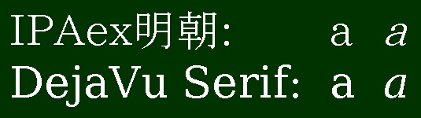
見やすさをさらに追究するときはPalatino LinotypeやDejaVu Serifのような文字間隔が広めになるフォントを選ぶとよい．これは文字間隔の調整（カーニング）の手間が省けるからである．Palatino LinotypeとTimes New Romanの[f] を比べると，後者ではfの右側と]が接してしまう．
また，章や節のタイトルには「メイリオ」のようなサンセリフ体（ひげ飾りのないフォント）を用いて本文とコントラストをつけるとよい．サンセリフ体のほうがセリフ体よりも視認性は高いが，長い文章をすべてサンセリフ体にするとくどく感じさせることもあり，可読性は落ちる．サンセリフ体のほかの例としては，Windowsに最初からは入っていないが無料でIPAexゴシック（明朝と同じサイトで手に入る）も視認性がよく使える．英数字はWindowsに最初から入っているCalibri（同じサイズの日本語フォントより小さいので和文ではサイズをやや大きめにする）やSegoe UIを使ってもいい．標準のＭＳＰゴシックは，アンチエイリアス処理（線や図形を表示する時にギザギザに見えてしまう部分を滑らかにする処理）が行われないことがあるため，とくに太字にすると視認性が悪くなる．Calibri･Segoe UIに比べるとArialも視認性が低い．たとえば，Segoe UI･Calibriの3CとArialの3Cを比べると切れ目の部分が前者二つのほうが広い（各自で試してみてほしい）．
以上をまとめると，長い文書では以下の分類からそれぞれ1種類ずつ計4種類のフォントを組み合わせるといい．これ以上の種類になると今度は統一感がなくなってくる．Wordでのフォント設定法は10章の「自動選択されるフォントの種類の設定 」（本文）と「目次の自動生成 」（見出し）で解説した．
読点は全角コンマ「，」を使う．
論文は横書きが基本であり，縦書きのときに用いる全角テン「、」は通常は使わない．句点は全角マル「。」･全角ピリオド「．」のどちらでもよい．同一の文書中では統一しよう．数学や物理学のように数式を多用する文書では習慣的に「，．」を使うことが多い [17]．
主語と述語の対応に注意する．
主語とそれに対応する述語は近いほうがわかりやすい．短文で明確にわかる場合を除いて主語を省略してはならないが，1人称主語は通常省略する．3.2節 に出てきた事実と意見の書き分けに必要なら1人称主語を入れる．論文では，1人称主語を「私」･「自分」ではなく，「著者」･「筆者」ならびにこれらの複数形にする．また，節の主語が欠落しないように注意すること．4.5節 の格についての説明も参照してほしい．
できるだけ能動態で文章を書く．
文章の主語を内容の主体とするため，論文では人以外をよく主語にするが，3章 でも述べたように，できるだけ能動態で文章を書くと簡潔で明確な文章になる．もちろん，強調したい内容が人であれば人（1人称を含む）を主語にしてもかまわない．しかし，主語になるものがある作用を受けているときは受動態のほうが自然である．
語句の親和性に注意する [14]．
論文でよく使われる語句と動詞の親和性にも注意を払おう．たとえば，「現象」を「説明する」は自然だが，「現象」を「検討する」は不自然である．「検討する」というのは「ものごとをよく調べ，それでよいかどうかを考えること」（[18] から引用）である．客観的に起きている現象そのものについて，いいのかどうかを議論するのは，妙な感じを与えてしまうことがある．「現象の機構」を「検討する」にすれば，機構は人間が考えるものなので，よしあしを考えるのも自然になる．
送りがなの送り方を統一する．
たとえば「行なう」と「行う」，「組み合わせ」と「組合せ」などのように，許容される送りがなが複数存在する言葉は数多くある．例の前者のように送りがなを多めに送るか，後者のように少なめに送るかは個人の好みでどちらにしてもよい．ただし，どちらの方法をとるかを同一論文中では統一するとよい．例外としては，「おこなった」を「行った」と書くと「いった」とも読めてしまう場合は，「行なった」と書くこともある．
並列･箇条書きは文法的に等価な内容を並べる．
箇条書き･( ) による付加説明のとき以外は体言止めにしない．
「～については次のとおりである．」「～を以下に挙げる．」と文を一度終えてから箇条書きの項目を挙げていくのが一つの形だ．本章もこの方法を用いている．各項目は名詞（体言止め）でも文でもよいが，そのときはすべての項目をどちらかに統一する．また，箇条書きを文章に対して入れ子にするとき（次の項目の形式）は，連続して読んで自然につながるように注意しよう．次の項目の例では「の場合だけである．」がないと名詞で文が終わってしまう．
漢数字の使用に気をつける．
論文中で漢数字を用いるのは，
(1) 固有の専門用語（単一反応，三角関数）
(2) 慣用語（不均一，二義的）
(3) 数詞（一つ，二つ）
の場合だけである [4]．これ以外はアラビア数字（1,2,3,......）を使う．数詞については「一つ」でも「1つ」でもよいが，同一文中ではどちらかに統一すべきである．本来は漢数字の「一」に対する熟字訓なので「一つ」のほうがよい．雑誌によっては「1つ」と書くと校正で「一つ」に直されることもある（「化学工学」や「化学工学論文集」があてはまる）．ただし，「1個」「2個」とする．日付についてはアラビア数字で表記する．
カッコ（）の使用は最低限にする．
（）が多いとそこで読む流れが中断するので読みにくくなる．本文よりも（）の中身が長ければ別の文に分けることも考えよう．
「じ」と「ぢ」，「ず」と「づ」を正確に使い分ける．
原則は「じ」「ず」と書く．ただし，2語連合によって「ち」「つ」が濁る場合と同音連呼の場合だけ「ぢ」「づ」を使うこともある．「基づく」「自ずと」「一つずつ」「つまずく」は注意しよう．「地」の「チ」（例：土地）と「ジ」（例：地震）のように，濁っているのではなく，別の読みの場合もある．
具体的な意味をもつ言葉で文章を書く．
たとえば，「反応効率を高める」と書くよりも「目的生成物の収率を90%に上げる」「目的生成物の生産量を毎年10 tonに増やす」のほうが具体的であり，読者は論文の内容を理解しやすくなるし，主張にも説得力がつく．
専門用語は学術用語集の表記に従う．
たとえば，「熱伝導率」は「熱伝導度」とも表記される．『学術用語集化学編（増訂2版）』[19] では「熱伝導率」のほうが記載されている．一方，「粘性率」「粘性係数」「粘度」については化学工学では，「粘度」を用いるのが一般的である．カタカナ単語では長音符号（ー）がつくかどうかも注意するとよい．『学術用語集 化学編』では音符号がつくものが多い．ただし，「シリコン（silicon）」「シリコーン（silicone，シロキサン結合による主骨格をもつ人工高分子化合物の総称）樹脂」となっている．本来これらは両方シリコンと読むアルファベット表記だが，区別をするために特殊な読みをする．さらに，分野によって表記が異なる用語もある．例としては，「フィルター」（化学），「フィルタ」（機械工学）がある．
ある概念を示す用語の表現は文中で統一する．
文中である概念を何度も説明することを避けるために定義する用語，前項の専門用語は，用語とそれが意味するものを1対1に対応させよう．次の例を参考にしてほしい．要は表現に一貫性をもたせる ということだ．これはフォントの種類やサイズといったスタイル面 にも当てはまる．
例）
本研究で開発した反応器をコンパクトリアクターとよぶ
→以後の文章ではコンパクトリアクターだけ を使う．コンパクトリアクタ（長音符号が抜けている）･省スペースリアクターなどと言い換えない ）
形式名詞･補助動詞･接続語はひらがなで表記する．
形式名詞･補助動詞はもとの意味が弱まった言葉であり，ひらがな書きする．表1･表2に漢字で書いてしまいがちなものを示す [4]．次の例をみてほしい．
例1）
実験を行ったところ
，化合物Aが得られた．
→このところ
は場所を表してはいない，「その時」の意味を表す．
例2）
ここは二人がはじめて出会った所
だ．
→この所
は場所を表している．
また，接続語ついては絶対にひらがな表記すべきというわけではない．しかし，接続語を漢字表記すると漢字が連続するため，一般に読みづらくなる．注意すべきものは，「したがって（従って）」･「すなわち（即ち）」･「および（及び）」「また（又）」である．
表1 ひらがな書きする形式名詞
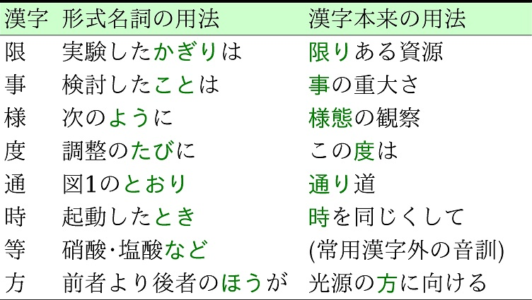
表2 ひらがな書きする補助動詞
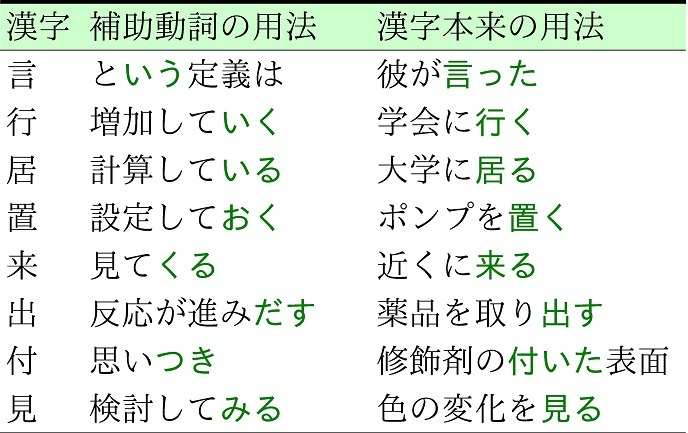
常用漢字の範囲内で表記する．
常用漢字以外が当てはまる言葉はひらがな書きする．たとえば，「～の範囲に"わたる"」は"亘る"が常用漢字ではないので通常かな書きする．「活（かつ）用」「活（い）かす」のように音読みは常用漢字でも訓読みは範囲外，「見出（いだ）す」「善し悪（あ）し」のように訓読みの一部だけ範囲外のこともあるので注意しよう．これも絶対的なルールではない．人名はもちろん例外であり，専門用語でも常用漢字の以外の漢字を用いて表記するのが通例のものもある（例：撹拌）．国語辞典を見ると常用漢字表にない音訓には▼のマークがついている [18]．表3によく使われる常用漢字以外の漢字，常用漢字にない音訓を含む副詞を示す．たとえば，「伝ぱ」の場合は「伝わる」などとして，できるだけ平易な表現を心がけよう． 「伝ぱ」のような常用漢字でない部分だけひらがなで書くのは混ぜ書きとよばれ好まれないのもある [20]．なお，「剝（はく）離」「萎（い）縮」「空隙（げき）」「明瞭（りょう）（「明らか」のほうがよい）」「頃（ころ）合」「汎（はん）用」「斬（ざん）新」「桁（けた）」「全て（すべて）」「一旦（たん）」「又（また）は」「充塡（填，てん）」は平成22年11月30日内閣告示の常用漢字表で常用漢字の範囲内の表記となった．常用漢字表のPDFファイル（3.38 Mb）は文化庁のページ から入手できる．常用漢字は時代とともに変化するので新しい常用漢字表が出た後は確認するとよい．
表3 使われやすい常用漢字以外の漢字
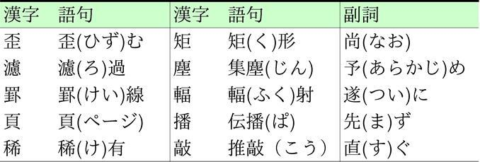
表4に挙げるものも通常はひらがなで書く [1,21]．
これについては筆者が，漢字の多い文章にしたいのか，ひらがなの多い文章にしたいのか，といった好みで基準を決めればよい．文を締めくくる「できる」，「わかる」，「いえる」もひらがなで書いたほうが読みやすくなることが多い．
表4 通常はひらがなで書く漢字
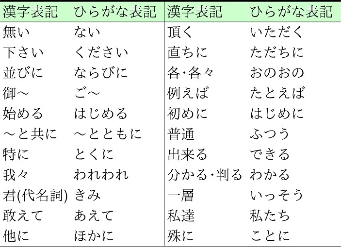
上記でかながきにするかどうかの原則をいくつか述べてきた．ほかにも「可能である」→「できる」のようにひらがなの多い表現でも不自然でないか考えてみるといい．一般にはひらがなが多めの文章のほうが読みやすいことは覚えておこう．論文はただでさえ硬くなりがちなので，少しでも軟らかさを出す効果もある．もちろん読みやすさが一番大切なので，ひらがなが多すぎて読みにくいときはここで挙げた語句も漢字で書くことがあってもよい．
硬い文語表現を避け，やわらかい言葉を使う．
表5に，文献 [20] p. 8に掲載されている文語的表現で論文にも出てきそうなものを引用してまとめた（「されたい」の改善例に「してほしい」，「のみならず」に「に加えて～も」を筆者で追記）．普段の話ことばそのままではやわらかすぎるが，論文だからといって必要以上に硬い表現を使う必要はない．この表の左側に載せた硬い文語的表現は避け，右側のやわらかい表現を使おう．くだけた表現か，文語的表現かは国語辞典にも目安は記されている（たとえば文献 [18] の国語辞典）．迷ったときは国語辞典を引くようにしよう．ただし，特許の書類のように硬い表現を使うのが習わしになっていることもあるので必要に応じて使い分けよう．
表5 使いがちな文語的表現と改善例
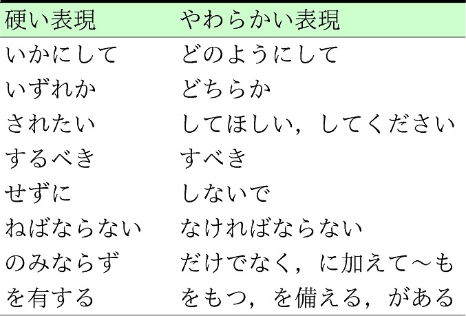
カタカナ外来語の使いすぎに気をつける [3,14]．
カタカナの形容詞･副詞を使うのはできれば避ける．ただし「ブロードなピーク」のように分野と状況によっては普及している表現もある．
例）
コンパクトな→小型化した
フェアな→公平な，公正な
シンプルに→簡単に，易しく
日本語とカタカナ外来語の両方がある名詞の場合，基本的には日本語の表記を使うとよい．より普及している表現がわかればそちらを選択する．インターネット検索のヒット数が多いほうを選ぶのも一つの手だ．読む人が違和感をもちにくい表現をしよう．
例）
リアクター→反応器（ただし「マイクロリアクター」のように普及した語もある）
印刷機→プリンター
流動学→レオロジー
炭素繊維→カーボンファイバー
（Googleでの検索ヒット数はどちらも後者のほうが多い）
アルファベットの大文字で表される略語を定義する．
略語がはじめて出てくるときはスペルアウト＋カッコ内に略語で表記する．自分の研究で使い慣れると忘れがちだが，読み手は正式な意味を知らない可能性があることも想定しよう．次の例のように同じ略称でも複数の意味になることもある．
例）
数値流体力学：Computational Fluid Dynamics (CFD)
差金決済取引：Contract for Difference (CFD)
DNAのように，普及していて読者に誤解を与える可能性がないものは定義なしで使うこともできる．ただし，通じるかどうか少しでも迷うようなら定義を示そう．また，書いてみて文書内で一度しか出てこなかった略語は削除しよう．略語は2度以上出てくる言葉だけに使うようにする．
できるだけ肯定形で文を書く．二重否定は避ける．
否定形は文意があいまいになることが多い．図5に示すように論理関係をベン図にすると，「Aである」よりも「Aではない」のほうが範囲が広いことが多い．下の例で考えると，常用漢字は2136字しかないのに対して，常用漢字外の漢字は10万字以上ある．否定形で書こうとしている状況を肯定形でより具体的に書くことを考えるとよい．
例）
常用漢字以外の漢字を使わない→常用漢字の範囲内で表記する
役に立たないわけではない→役に立つ
なきにしもあらず→ということもある（ありうる）
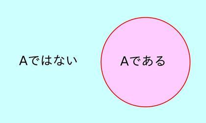
図5 否定語の範囲
同じような文末表現が連続していないか気をつける．
過去形の「～た」，考察における「～と考える」，「～である」，下の例の「～なる」など，同じような文末表現が続くと文章が単調になってしまう．文章に迫力と説得力をもたせるためには変化に富む場所へ落とすことが必要である．専門用語やスタイルの一貫性と，単調さを避けるバランス を考えるようにしよう．改善例をここに示す．文末以外を直すこともあるので格や助詞などの文法を再確認しよう．
悪い例）
数百μmから数mm程度のマイクロ流路では，流体と流路壁との相互作用が大きくなる
．このような流路では，混じり合わない相が交互に流れるスラグ流を形成しやすくなる
．
改善例）
数百μmから数mm程度のマイクロ流路では，流体と流路壁との相互作用が大きくなる
．このような流路では，混じり合わない相が交互に流れるスラグ流を容易に
形成できる
．
単位の表記に注意する．
数値･変数名･変数シンボル（アルファベット･ギリシャ文字）と単位の間は半角スペースを空ける．半角スペースを入れないと，u [m/s]，4181J･kg−1 ･K−1 のように詰まった感じになる．数値とアルファベットではない単位，たとえば，°（角度）･℃（日本語のときだけ）･%･' （フィート･分）･"（インチ･秒）の間は半角スペースを入れない．英語論文で摂氏の単位を表記するときは，数値の後に半角スペースを空けて記号と特殊文字の「Degree Sign」とCを入力する（文字化けの原因になるので全角の℃は使わない）．
なお，Windows 10に入っているバージョンのTimes New Roman Ver. 7.00だと「記号と特殊文字」の中にあるDegree Celsius（文字コード2103）1文字で℃を表現できる．ただし，論文をチェックしてもらうために原稿のWordファイルを他人にも見せる場合，その人のOSがWindows 8.1以前だと文字化けするおそれがある（8.1のTimes New RomanのVer.は6.89）．Windows 8.1のサポートが終了する2023年1月までは，汎用性を考えるなら℃はDegree SignとCの2文字で表現するのが無難だ．
変数名･シンボルに対する単位だけ [ ] で囲む．たとえば，熱伝導率k [W･m−1 ･K−1 ]（またはW/(m･K)），流速 [m/s]，0.1 mol･L−1 とする（0.1 [mol･L−1 ]とはしない）．熱伝導率の単位をW/m･Kとは書かない．こう書いてしまうとKが分母か分子かはっきりしないからだ．なお，リットルは大文字のLか小文字のlのどちらかに統一する．小文字のエルは数字の1と似ているので，Lのほうがリットルと識別しやすい．
数値と単位の間で改行しない． 数値が行の右端にくる場合，両端ぞろえになっていたらダミーの空白を入れて数値の直前で改行するか，表現を変える．
-（ハイフン），--（マイナス），−（en dash）を使い分ける．
-（ハイフン）をマイナスとしては用いない．--（マイナス）と−（en dash）は非常に似ているが，別の記号である（フォント「Times New Roman･Palatino Linotype」の記号と特殊文字では区別されている）．−（en dash）は範囲や二人の人名反応や法則名の区切り示すときに用いる（pp. 10−15，Friedel−Crafts reaction）．とくに英語では，「～」は範囲を示さない ので注意が必要である．
ギリシャ文字は「記号と特殊文字」から選択する．
Microsoft Officeを使っている場合は，たいていの英数字フォントで「挿入」→「記号と特殊文字」からギリシャ文字を選択できる．
しかしPowerPoint 2003の場合は，強制的に全角フォントのギリシャ文字に切り替わってしまう．また，グラフ作成専用のソフトでは特殊文字が使えないこともある．このような場合には，Symbolというフォントを使うしかない．表6は，ギリシャ文字をSymbolフォントで入力するときのアルファベットとの対応を示したものである．ただし，他の部分と別のフォントが混じるし，フォントを一括変換すると通常のアルファベットに戻ったり（例：μm→mm，この変化に気付かず誤った表記のままになる恐れもある），文字化けしたりすることがあるので，できれば避けたい手段ではある．
また，マイクロ→μと変換して全角文字でギリシャ文字を出すと，半角英数字とのなじみが悪いし，英語の論文･発表でも使えないので避けよう．
表6 ギリシャ文字のSymbolフォントでの入力方法
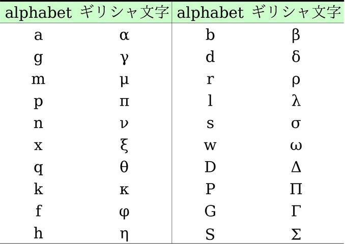
2章から5章にかけて，大きい視点から小さい視点に移りながら文章の注意点を述べてきた．論文の構成要素は文章だけではなく，数式･表･図も含まれることがほとんどである．そこで次章からは，文章以外の論文の構成要素を読み手にとってわかりやすく表現するための方法を説明していく．
■論文独特の表記は，各分野の読み手が内容を判別しやすくするためのもの．
■変数のシンボルだけをイタリック体にする．
■イタリック体専用字体のあるフォントを使おう．
■句読点は「，。」か「，．」を組み合わせる．
■主語と述語を対応させる．
■能動態で文を書く．
■言葉の親和性に気を付ける．
■送り仮名を統一する．
■箇条書きの中身は名詞か文で統一する．
■ひとつは本来は「一つ」と書く．
■「じ」と「ぢ」，「ず」と「づ」の使い分けに注意．
■具体的な言葉で文章を書く．
■専門用語の表記を統一する．
■同じ概念には同じ言葉を使う．
→表現に一貫性をもたせよう
■形式名詞･補助動詞･接続語はひらがなで表記．
■常用漢字の範囲内で表記する．
→平易な表現に置き換えよう
■副詞の一部，文末にくる言葉をひらがなにする．
→字面が白いと読みやすい
■外来語の使いすぎに気をつける．
■略語の定義を示そう．
■できるだけ肯定文で文を書く．
■文末表現に変化をもたせる．
■単位を適切に表記しよう．
■ハイフン-，マイナス--，en dash−を使い分ける．
■ギリシャ文字は全角フォントで書かない．
Step 1
まとめにあった項目の中から一つでいいので自分の文書に反映させてみよう．
数式･化学式も文章の重要な要素である．論文等に見やすい数式･化学式を文書に掲載する方法をここでは解説する．[1,17,22]
数式･式番号の配置
単純な数式･化学式は行内に挿入してよい．後で引用したり，式が複雑だったりする場合は式を別行立てにする．別行立ての式は文章の中央に配置するか，左側に5文字分インデントをとって記述する．式の上下には1行の半分の行間を入れると見やすい．式番号は，式を変換していく途中の式については省き，重要な式だけにつける．
式番号は半角カッコで囲んで式のある行の右端近くにつけ，さらに番号の右に全角1文字分のスペースを空けるとよい．式番号の位置をそろえるには，Microsoft Wordの場合，まずテキスト領域の左上隅のところを数回クリックして「右揃えタブ(」)」に切り替えておく（Word 2007以降は，ルーラーが初期設定では表示されていないので，「表示」タブで「ルーラー」をチェックする）．式の右端でTabキーを一度押す．さらにその右側に式番号を書く．水平方向にみて式番号の右端位置にあたるところでルーラー（テキスト領域上端の|1|2|3|...|39|40|と表示されている部分）をクリックすれば式番号が指定した場所に移動している．
式の引用方法
式番号を用いて式を引用する．ただし式番号を用いた引用は，その式よりも後ろでする． 複数の式を引用する際に，式番号に範囲がある場合は，たとえば，式(2)--(5)のようにする（英語ならEqs. (2)--(5)）．また，数式も文中の一部なので，式の直後に「，」「．」を適切に入れる． ただし，学術雑誌のフォーマットによっては式の後には句読点をつけないこともあり，ACSでは後者のスタイルを勧めている [22]．文中と同じ行に挿入された式は名詞として扱い，別行立ての数式は名詞としても文としても扱う．例を以下に示す．
悪い例）
定圧モル比熱と定用モル比熱の差は式(1)で与えられる．
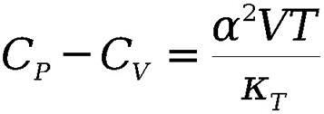 (1)
理想気体に対して，この式は気体定数を用いて式(2)のように変形できる．
CP −CV =R (2)
良い例）
定圧モル比熱CP [J/(mol･K)]と定用モル比熱CV [J/(mol･K)]の差は，
(1)
である．ここで，α は体積膨張率 [1/K]，V はモル体積 [m3 /mol]，T は絶対温度 [K]，κT は等温圧縮率 [m3 /J]を表す．理想気体に対して，気体定数R [J/(mol･K)]を用いて式(1)は次のように表現できる．
CP −CV =R ． (2)
式中の変数を示すシンボルの定義を式の前後で説明する．
上の良い例のように，式中のシンボルの定義を式の前後で説明しよう．有次元の議論をしているときは単位も合わせて示す．
文中にテキストで式を書く場合は，演算子の前後，関数と変数シンボルの間に半角スペースを入れる．
文中にテキストで式を書く場合は，CP −CV =R ，lnx のように，− や = といった演算子の前後や関数の直後に半角スペースを入れる（スペースを入れないと次のように詰まった見た目になる，CP −CV =R ，lnx ）．関数の積の間（例：sinx cosy ）や微分の前後にもスペース（例：xy dx dy ）を入れる．数式エディタ（「挿入」タブ→「オブジェクト」にある「Microsoft 数式 3.0」）を用いている場合は，演算子の前後に適宜スペースを入れてくれるので気にしなくてもよい．
変数シンボルだけイタリック体に．関数はローマン体にする．
変数シンボル･軸の名称（たとえばx 軸）はイタリック体に，sin･log･exp･lim･glad･d（微分記号のみ例外的にイタリック体も可）といった関数はローマン体にする．通常，関数と変数の間には半角スペースを入れるが，変数が()で囲まれているときは，この半角スペースはいらない（例：sin(x +y )）．ベクトル量は（イタリック）ボールド体にする．
上付き･下付き
上付き･下付きの文字が変数であればイタリック体にし，名称であればローマン体にする．たとえば，定圧モル比熱CP の下付きP は変数の圧力を示しているのでイタリック体にするが，成分Bの濃度C B の下付きBは成分名なのでローマン体にする．数式エディタでアルファベットをローマン体にしたいときは，「スタイル」→「文字列」を選択すれよい．また，上付きと下付きが同時にある場合は，左右方向に同じ位置に配置するか，下付きの後に上付きを書く（例：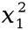 またはx 1 2 ）．なお，上付き･下付きでは演算子の前後にスペースをとらない（例：M(x +y )+ ）．Microsoft PowerPointの図中の文字の上付きはデフォルトでは相対位置が30%であり，この値だと少し低めに上付き文字が配置されるので．「ホーム」タブ→「フォント」でこの値を50％にするとよい．Microsoft Wordでも「ホーム」タブ→「フォント」→「文字幅と間隔」のタブ中にある「位置」の「間隔」で上付きはベースライン2 pt.上げ，下付きは2 pt.下げるとよい．
移動現象で出てきた無次元数はイタリック体かローマン体か文書内で統一する．
無次元数のシンボルは数値が入るから変数ともいえるし，特定の量の積であるため関数ともとらえられるので両方の表記が存在する．一つの文書ではどちらかに統一しよう．
例）
Re
，Nu
，Pe
，Pr
，Da
，Kn
，Sc
，Sh
または
Re，Nu，Pe，Pr，Da，Kn，Sc，Sh
文頭を変数シンボルにするのはできれば避ける．必要なら語順を変える．
変数シンボルが文頭に来そうなときは，出てくるのが2度目以降でも変数の定義を文頭におく，変数を文の後ろにするとよい．日本語の場合はそれほど不自然ではないが，大文字で文を始める英語の場合は，小文字の変数が文頭に来るのはとくに不自然になる．
2行以上の数式
数式が1行に収まらないときは折り返して2行以上で表記する．改行位置は=，+，−といった演算子のところにする．数字や関数の途中で改行しない．式変形では，改行位置を = でそろえる．式番号は，式を変形した最後の行だけにつける．
例）
f (x ) =a 0 +a 1 sinx +a 2 sin 2x + ... +an sinnx
+b 0 +b 1 cosx +b 2 cos 2x + ... +bn cosnx ， (3)
f (x ) = (x +a )(x +b )
=x 2 + (a +b )x +ab ． (4)
数式の後に変数のリストを示す場合
例）
f (n ) =n (n +1)/2，n = 1, 2, 3, ...
リストの後方を省略するのに...を使う．3の後にも「,」があるのに注意しよう．式などの途中を一部省略するのに使う三点リーダー（...）の高さは，それを囲む記号の高さに合わせる．1 + 2 + ... +n は間違いで1 + 2 + ... +n が正しい表記となる．
場合分けがある場合
等号のすぐ右に条件式の上端から下端までを含むことのできる大きな｛で囲む．場合分けの条件を式の右側に書く．最終行以外は行の終わりにセミコロン，最終行はビリオドを置くこともある．
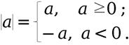
数式中のフォントのサイズと種類
数式エディタでもフォントサイズ（サイズ→サイズの定義→デフォルトで「標準」が12 pt.になっている）･種類（スタイル→スタイルの定義→各項目（文字列，関数（sinやcosは自動認識でローマン体になる），変数（自動でイタリックになる），行列，番号のフォントはTimes New Romanがデフォルト）の調整は可能なので本文中のフォントと合わせる． これは，プレゼンテーションに数式を載せる際に，式中のフォントサイズを大きくしたり，フォントの種類をほかのテキストと同じサンセリフ体にしたりするときにも使える．
化学式･反応式の表記
まず，矢印やプラスの記号があるからといって反応式や化学式を数式エディタで書くのはやめよう． 元素記号は変数ではないのでローマン体で書くのが原則だ．ところが，数式エディタは英数字をデフォルトでイタリック体にしてしまう（悪い例：A +B →C ）．ただし，反応式も数式のように別行立てで表示するときは，右側に式番号をつける．
係数や下つきがアルファベットのときはイタリック体にする（例：x H2 O，(H2 O) n ）．
2原子分子（例：NaCl），原子群（例：SO4 ，NO3 ），官能基（例：COOH，C6 H5 ）の途中で改行しない．
なお，化学の分野では，化合物を番号･アルファベットで参照する．このときに番号･アルファベットをボールド体 にする
例）
N
-Acyliminium ion4
was also generated from precursor3
in a similar fashion as shown in Scheme 5.（J. Am. Chem. Soc.
,127(33)
, p. 11668 (2005) から引用）
反応式中の矢印の表記
原系と生成系の結び方は，不可逆反応なら→で原系と生成系を結ぶ．可逆反応は 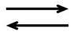 で示す．半矢印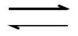 は平衡状態 を示す．↔は共鳴構造 を表し，反応を示さない．=は熱化学方程式だけ で使う．
■tabキーを使いこなして式番号を式の右側につけよう．
■式番号を使った引用はその式の後でする．
■式中の変数を示すシンボルの定義を式の前後で説明しよう．
■式も文の一部である．
■変数シンボルはイタリック体，関数はローマン体にする．
■演算子の前後，関数と変数の間に半角スペースを入れる．
■無次元数はイタリック体かローマン体に統一する．
■文頭を変数シンボルにしない．
■2行以上の数式の改行位置に気を付けよう．
■...による中間の省略と...によるリスト後方の省略を使い分ける．
■反応式は必要箇所だけイタリック体にする．
■化合物を番号やアルファベットのボールド体で引用することがある．
■反応式中の矢印を正しく使い分けよう．
Step 1
変数シンボルをイタリック体にしよう．
Step 2
上付き･下付きの設定のし忘れがないか確認しよう．
Step 3
まとめにあった項目の中から一つでいいので自分の文書の数式に反映させてみよう．
実験条件･データなどを文章で列挙するよりも，それらを整理して表にすることで，読者が要点を理解しやすくなることがある．また，図（次章でふれる）に比べてデータを正確に示したいときには有効である．ただ，表には図と比べて，伝えたいことが一見しただけでは読み手にわかりにくくなりやすいという欠点もある．この欠点を回避するためにも，文書で主張したいことに直接関わる最低限の情報だけを掲載して，できるだけ簡潔にすることを心がけたい．表を文書に掲載する上での注意点を以下にあげる．例は本文中のほかの章の表も参考にしてほしい．[4,23]
表の内容の説明をしてから表を示す．その説明文では表番はできるだけ文頭に記述する．
図や数式についても同様だが，これらは文書の一部であり，論文の主体は「文章」である．表･図･式は，この主体をよりわかりやすくするための手段である．よって，表･図･式だけが掲載されているだけでは文書として成立しない．表の内容の説明に入るときは，「表1は（表番号をできるだけ文頭に），......を示したものである．」と示し，その後に同じ段落で 表の内容の重要点やデータの傾向といった考察をまとめる．表の説明文と考察の間に表を入れてしまうと，同じトピックの文章が分断され，トピックの原則が崩れて読みにくい（例は3.1節 にもある）．これは図も同様である．
表の内容を説明した段落の直後に表を配置する．
表の説明の直後に表があるほうが読み手にはわかりやすい．ただし，ページレイアウトによっては表の内容を説明しているページの上部･下部，またはすぐ次のページにもなりうる．これも図にあてはまる．
表番号･タイトル（キャプション）は表の上につける．
キャプションに表の内容や操作条件について簡潔に説明することもある．タイトルの付加説明は短ければ（）内に示せばよいし，長ければ文章にする．タイトルが複数行にわたるときは下の例のように，2行目以降の先頭文字はタイトルの先頭にあわせる．キャプションのフォントの種類･サイズなどのスタイルは文書中で統一する．
例）
表1
ミキサーの各混合プレートの衝突場
でかかるせん断速度
表の両端には縦ケイ線を引かない．
必要以上にケイ線の引かれた表は見にくい．ケイ線は必要最低限だけ引くようにしよう．表の上端･下端と変数名とデータ領域の境の3本あれば十分である．表7の悪い例と良い例を見比べてみよう．けい線が少ないとデータ自体に読み手は集中できる．
表7 けい線の有無による表の見栄えの比較
（けい線を全セルに引いた場合）
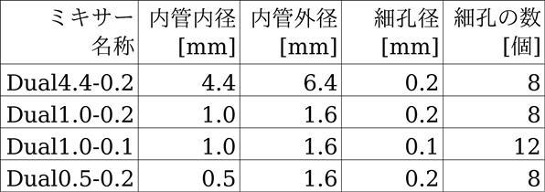
（けい線を横方向に必要最低限だけ引いた場合）
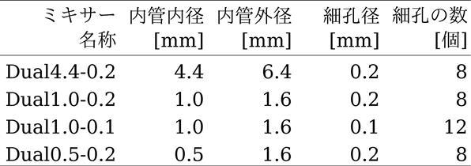
データを載せる順序を合理的なものにする．
データが大きい順または小さい順，名称がアルファベット順や五十音順のように規則的な並べ方をしよう．たとえば表7では，内管内径と細孔径でミキサー名をつけていて，内管内径と細孔径が大きいものから小さいものへと並べている．
表の一番上のケイ線は他より太くしてもよい．
和書の専門書で多いが，必須というわけではない．スタイルは文書で統一すればよい．本書の5章に載せた表1 −6がその例にあたる．
表内のフォントの種類は文章中と同じにする．
ExcelではデフォルトのフォントがMSゴシックになっている．日本語の部分は明朝体に，英数字は文中で用いているセリフ体（Times New Romanなど）に直そう．
表のキャプションと表中のフォントサイズは文章中と同じか小さくする．
たとえば，本文のフォントサイズが12 pt.のときは，表のキャプションと表中のフォントサイズは11--12 pt.とする．
変数名･変数シンボル･単位の表記方法は本文中と同じ．
5章 でも説明したように，変数名･シンボルと単位の間は半角スペースを空け，その後の単位は[ ]で囲む（例：密度 [kg/m3 ]）．変数シンボルをアルファベット表示するときはイタリック体にする（表8がその一例）．
必要があれば脚注を表の下に示す．
あるデータだけ測定条件が異なる，補足説明が必要，などの場合は，関連する箇所に上付きのアルファベット･番号で印をつけ，表の下にその印とともに脚注を示す．脚注のフォントサイズは表中のフォントサイズよりも小さくする．たとえば，表内のフォントサイズが11 pt.なら脚注を10 pt.にする．例を表8に示す．
表8 脚注のある表の例
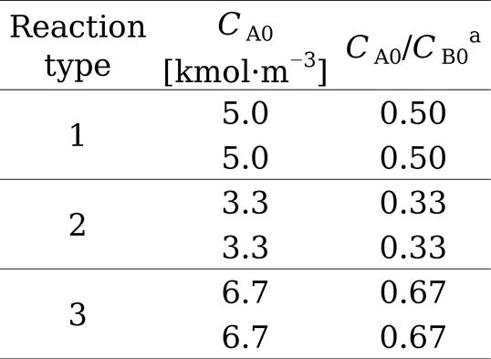
a すべての場合でC B0 = 10 kmol·m−3 とした．
数値の小数点の位置，有効数字の桁数に一貫性をもたせる．
小数点以下の桁数，小数点の位置をそろえ（表8の0.50は0.5としてはいけない），測定精度に合う桁数のデータを載せる．Excelの結果を載せるときは桁数を調節しよう．定量的に内容を提示 するには，このようなことにも気をつかうことが大事だ．
同じデータを図と表で二度示さない．
あるデータをグラフで図示したら，数値を表でもう一度示す必要はない．図または表のどちらか一方だけで示そう．図のほうが条件の変化による傾向を捉えやすいため，図のみにしたほうがいい場合が多い．
複数ページにまたがる情報量の多い大きな表は避ける．
データ量の多すぎる表は，読者の理解を妨げる．結論を主張するのに必要十分なデータを過不足なく選ぶ．やむをえない場合は次の例のように，各ページにキャプションをつけ ，2ページ目以降は続きであることを明記する．
例）
最初のページ：表1
タイトル
次のページは：表1
タイトル（続き）
横長の図表は時計回りに90度回転して見られるように配置する．
表全体の縦横の長さのバランスを考え，できれば本文と同じ方向に読めるように表を配置するのが望ましい．やむをえず横長の表を載せるときは，図6のように掲載する．これは横長の図についても同じである．
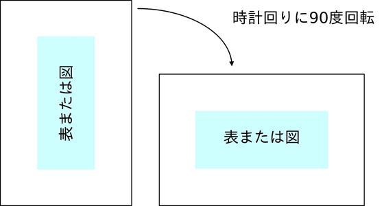
図6 横長の図表の掲載方法
■読者の理解を助けるために表を使おう．
■表番号を使って表の説明をしてから表を示そう．
■表の説明と考察は一つの段落で書こう．
■表のキャプションは表の上に付ける．
■けい線は横方向に必要最低限だけ引こう．
■表のフォントの種類，変数･単位の表記は本文と同じにする．
■表中のフォントサイズは本文より少し小さくする．
■数値の小数点･有効数字の桁数に注意する．
■データを載せる順序を合理的なものにする．
■表の情報量は必要最小限にしよう．
Step 1
表のキャプションを表の上につけよう．
Step 2
表の前に表番号と表に関する説明文を入れよう．
Step 3
表のけい線を減らせないか考えよう．
Step 4
表の情報量が多すぎないか，数値の桁数は適切か確認しよう．
図も表と同様に，読者に要点を一見してわかりやすくする効果がある．より視覚的に読者に理解を促したい場合は，図を用いると有効である．人間はイメージで理解する部分があるので，わかりやすい図を書くことが論文の理解度を大きく上げることに貢献する．また，論文を一見した印象は図で決まると言っても過言ではないし，その印象でさらに読むかどうかが決まることも多い．論文でも見た目の第一印象が大事 ということだ．ここでは，図（主にグラフ）を文書に掲載する上での注意点を解説する．[4,22,23]
まず，図に関連する文章やキャプションの書き方のポイントを以下に挙げておく．
図の前に図の紹介文，内容の説明，関連する考察を示す．
図の紹介文とは，「図1に～を示す」「～を図1に示す」といった文のことである．この文の直後に連続して，図の説明や関連する考察まで述べるとよい．読者に読み取ってほしい点，実験データから自分が感じ取ったことを言葉にしよう． たとえば反応温度と滞留時間を変えたデータを載せているのに反応温度の影響しか説明がない，といったことはないだろうか？大量の図が並べられていて説明がわずかというのは読者には不親切だし，読者は圧倒されるだけになる可能性もある．論文の主題やトピックとの関連は薄いが記録として残したいデータは付録に回すのも手だ．また，図の紹介文→図→内容の説明だと，図に関する文章が図の上下に分散してしまうので読みにくい．ただし，ページレイアウト（9.9節 も参照）を優先しなければならないときもある．たとえば，図をページの上部または下部に配置することが指示されている場合である．このときは図に関連する説明の途中に図が入ることもある．
図番号･図のタイトル（キャプション）は図の下につける．
グラフも図の一種なので「グラフ1 タイトル」とはせず「図1 タイトル」とする．タイトルが複数行にわたるときは2行目以降の先頭文字はタイトルの先頭にあわせる（下の例のFig. 2とFig. 3は改行位置が電子書籍では固定でないためこれができていない）．タイトルは単なる軸の名称の繰り返しではなく，より内容や目的を具体的に記述 したものにすること．タイトルの後に線図･プロットの凡例や図中の記号･略称の定義を入れたり，図の内容や操作条件（温度･圧力･組成など，グラフの枠内でもよい）について簡潔に説明したりすることもある．タイトルの付加説明は短ければ（）内に示せばよいし，長ければ文章にする．
例）
図1
流路材質による吸収速度の変化
（1/16"ユニオンティー，d
s
= 1 mm，
CO2
流量：4 mL/min，液相流量：2 mL/min）
Fig. 2
Schematic representation of the flow-type reactor for the hydrothermal synthesis of metal oxide nanoparticles. The symbol K-T denotes a K-type thermocouple to set reaction temperatures.
Fig. 3
Determining the rate constant of each reaction temperature. First order reaction was assumed. The slope of fitted line of each temperature plot represents the rate constant. (a) ◆200 and ■250 °C; (b) ◆300, +350, and ▲400 °C.
図と表の番号は別々に連番にする．
たとえば図→図→表→図→表の順に文書に出てくる場合は，図1，図2，表3，図4，表5と図表でまとめて番号をつけるのではなく，図1，図2，表1，図3，表2とする．
同じ主題に関連する複数の図には同じ図番号をつける．
対応例を図7に示す．同じ主題（縦軸･横軸の変数が同一）に関する図が複数含まれる場合は，図1，2，3，......とするのではなく，図番号は統一し，図の中または下にアルファベットを示して識別していく．各図の下に変更した条件を，図番号のところに全体に対するタイトルを示すとよい．図中にアルファベットだけ書いておき，キャプションのタイトルの直後に条件の変更をまとめて書いてもよい．文中では，図1(a)，図1(b)，......と引用する．複数ページにわたるときは，各ページの図の下端に図番号＋タイトルを示す．2ページ目以降はタイトルの後に（続き） と書いて，連続したページに載せていることをはっきり読者に示そう．
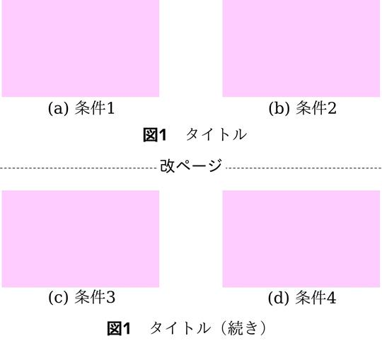
図7 同一主題に関連する複数の図にキャプションを付ける方法
次に図，とくにグラフの描き方で注意するといいところを説明していく．まずは悪い例と良い例を図8に示したので，どこが変わっているか比べてみよう．
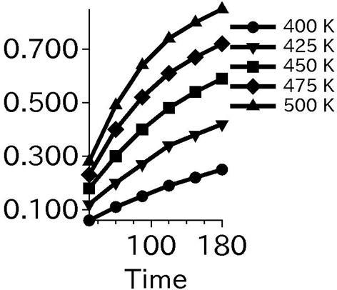
（悪い例，改善前）
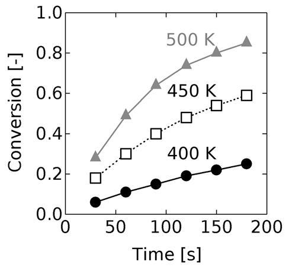
（良い例，改善後）
図8
図の悪い例と良い例
プロットエリアは長方形の枠線で囲む．
グラフソフトのデフォルトでは，プロットエリアの枠線のうち，横軸の下側と縦軸の左側しか出してくれないものもある．ソフトの設定を手動で変更して横軸の上側，縦軸の右側の枠線も出すことで，プロットエリアを長方形で囲むようにしよう．ただし，グラフ全体に対する外枠は不要である（Excelのグラフエリアの輪郭を「なし」にする）．
作図力学･コントラストに留意する [4,23]．
実験データはプロット点として示し，必要に応じて平滑曲線または点間を結ぶ直線もあわせて示す．図9に挙げた例のように，理論やモデルの計算値･シミュレーション結果のときは曲線だけで示す．
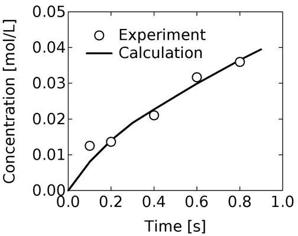
図9
実験データと計算値を合わせて載せる場合
平滑曲線･直線はプロットエリアの枠線と同じか太くする．線図に迫力をつけたければプロット点を大きくし，平滑曲線･直線を太く描く．ただし，太くしすぎると変化の傾向や曲線･直線の交点があいまいになる．論文のグラフでは，プロット点の大きさを3−5 pt.，線の太さを1−2 pt.にするとよい．
系列が多い場合は太さや濃さの異なる実線･破線を組み合わせたり，プロット点に中抜きを使ったりする（点線はできれば使わない）．また，背景色が白の場合は，黄色･水色といった淡色のプロット点･曲線は見にくいの濃い色を使うこと．このようにコントラスト を意識するのは色弱の人も読みやすいようにするためでもある（図8の悪い例で示した黒一色で塗りつぶしたプロット点は区別がつきにくいと思う，これをユニバーサルデザイン という）．
目盛りのうち方に注意する [23]．
目盛りの間隔が適切か，位置が自然な切りのよい値になっているか確認しよう．
自然な値の例：
（0.0, 0.2, 0.4, 0.6, 0.8）
（0.00, 0.25, 0.50, 0.75, 1.00）
（0, 1, 2, 3, 4）
（0, 5, 10, 15, 20）
不自然な値の例：
（0.0, 0.3, 0.6, 0.9, 1.2）
（0.1, 0.3, 0.5, 0.7, 0.9）（0.0から始まっていないのも不自然な点）
（0, 4, 8, 12, 16）
（0, 12, 24, 36, 48）
（0, 15, 30, 45, 60）
上限値と下限値は必ず記載し，反応率なら0から1の範囲に入る，といった測定データの意味を考えて決めよう．折れ線グラフのプロット点･曲線が占める範囲は，上下を少し空けてグラフ全体の2/3 になっていると見やすいので，これを目安にしてもよい．棒グラフでは下限値は必ず0にする．一手間かかるが，これもグラフソフトで手動設定しよう．
目盛り数値を小数点以下の桁数をそろえる．その桁数は測定精度より1桁以上少なくする．
例）
0, 0.25, 0.5, 0.75,1
→ 0.00, 0.25, 0.50,0.75, 1.00
（小数点第2位までにそろえた）
0.000, 0.200, 0.400, 0.600, 0.800, 1.000
→ 0.0, 0.2, 0.4, 0.6, 0.8, 1.0
（下2桁の0をカットした）
なお，目盛りのヒゲはプロットエリアの内側に向ける．プロットエリアの枠線の右側･上側にもヒゲを付ける ．Excelだと右側･上側の枠線を出してもヒゲがつかない．できれば本書の付録C で紹介しているIGOR Proのようなグラフソフトを使おう．
縦軸の左右に異なる目盛りを付けているときは，プロットまたは平滑曲線に矢印をつけて，各プロットがどちらの目盛りを参照しているかわかるようにする（付録C，図19参照 ）．
縦軸･横軸の変数の説明を単位と共に示す．
変数の説明は各軸の中央に配置する．変数名と単位を囲む [ の間に半角スペースを入れる．変数シンボルはイタリック体にする．無次元量のときは [-] を変数名の後ろにつけて無次元であることを明記すること．縦軸･横軸共に無次元量のときは単位表記を省略してもよい．なお，縦軸の変数名･単位は横向きに表示するほうが見やすい（とくにプレゼンテーションのときにあてはまる）．
一つのグラフのデータ系列数は4以下にする．
データが一つのグラフに詰め込まれすぎていると，読者に負担をかけるのは表と同じである．一つのグラフに載せるデータのプロット･曲線が5系以上になると見にくくなるので避ける．多くのデータを示すときは上手くグラフを分けられないか考えよう．
直接比較できるデータを載せているか，誤解や違和感をもたせる示し方になっていないか確認する．
複数のデータを一つのグラフに載せたほうが一目で比較･検討できる便利さはある．ただし，凡例に示した条件以外も異なるデータを合わせて載せてしまうと直接比較ができなくなる．パラメータが一つだけことなるデータ間で比較する のが基本だ．たとえば，バッチ反応器と流通式反応器で目的生成物の収率を比較したいとする．この場合は反応のための装置が異なっている．反応時間の異なるデータでバッチ反応器と流通式反応器の合成効率を比較するといったことはできない．バッチと流通系で一つのパラメータだけを違うようにするのはそもそも難しいのでこの手の比較は不公平になりやすい．このように比較するときのことも考えて実験を計画しよう．
また，一つ前の項目を読むとデータを絞り込む必要も出てくることがあるが，主張したいことにとって都合の悪い情報を隠せということではない．都合が悪いというのも狭い視野からくる特定の価値観による判断にすぎない，科学が相手にしようとしている真理は価値観と無関係 に存在している．図が印象に残りやすい長所は，図やデータの編集次第で印象操作にもつながりうる ことは認識しておこう．
グラフ中の線やプロットの凡例を入れる．
系列間に十分なスペースがあれば，凡例は系列ごとに折れ線･曲線に密接 させる（図8の改善後がその一例，カラーの場合は対応する曲線･プロットと凡例を同色にするとよい）．凡例をまとめて示す方法に比べて，プロット･線と凡例間の視線の行き来がなくなるので読み手は楽になる ．線が交差する，各系列の線の間にスペースがない場合は凡例をまとめてグラフのプロットエリアの枠線内に入れる（図8 がその一例）．プロットエリア内にスペースがなければ，グラフ枠線の右側･下側またはキャプションに示してもよい．さらに，凡例はグラフの右端での値の高い順から示す ようにすると，読み手の視線の動きが，凡例とプロット点で同じ向きになるので見やすい．
図内の視線の動きが最小限になるようする．
前項の繰り返しになるがグラフ以外でも，視線の動きが最小限になるように図のパーツやテキストを配置しよう．図10に実験装置図の例を挙げる．上の悪い例だと実験条件と装置図の間を上下に視点を動かす必要がある．流量（g/min単位で示されているもの）とReaction time，Channel i.d.がこれに当てはまる．後の改善例では装置の要素と実験条件が隣接し，表もなくなったのでシンプルで見やすくなっている．このように一手間加えるだけで視線の流れがスムーズになる．
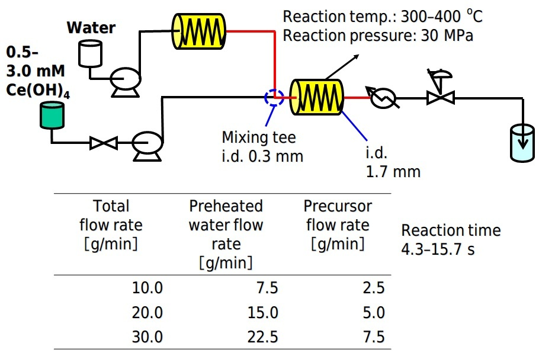
（悪い例）
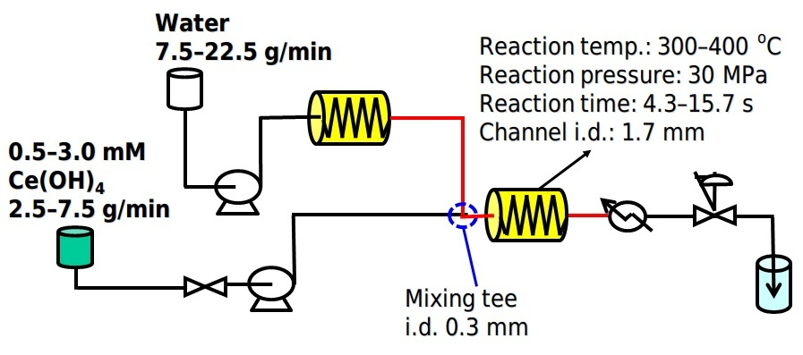
（良い例）
図10
視線の動きを意識した図の作成例
顕微鏡拡大写真は大きさがわかるものを入れる．
光学･電子顕微鏡で取った写真のそばに単位長さを示すスケールかサイズのわかりやすいものを添える．複数の拡大写真を並べるときは，スケールは共通にすると見比べやすい．
使用フォントに一貫性をもたせる．
図中も表と同様に本文中と同じ種類のフォント，または見やすさのためにひげつきのないサンセリフ体を用い，図のキャプションと図中のフォントサイズは本文中と同じか少し小さくする．変数名（アルファベットなどのときはイタリック体で）と単位の間は半角スペースを空け，単位は[ ]で囲む．なお，サンセリフ体を使う場合は，日本語はメイリオやIPAexゴシック，英数字は日本語が混じるときはメイリオやVerdanaを使ってもいいし，英語だけならSegoe UI･Calibriを使うとよい．なお，標準のＭＳ Ｐゴシックは，とくに太字にすると視認性が悪くなる．
プレゼンテーション用に作成した図表を文書中にそのまま貼り付けるのはやめよう．フォントサイズが論文の本文中のものより大きくなっているためだ．図8の悪い例 を見てもらうと目盛りのフォントが大きすぎて，必要以上に目立ってしまう．ビジュアルが中心になるプレゼンではよくても，文章が主体になる論文では不釣り合いだ．図中のフォントサイズを調整せずに文書に貼ったものと調整した場合の例を図11に載せておく．少なくともフォントサイズは必ず文書用に変える こと．また図表の適切な強調方法も論文とプレゼンでは異なる．発表で作った図表で文字サイズだけでなく，色使い，線の太さを調整してから論文に貼り付けられればベストだ．
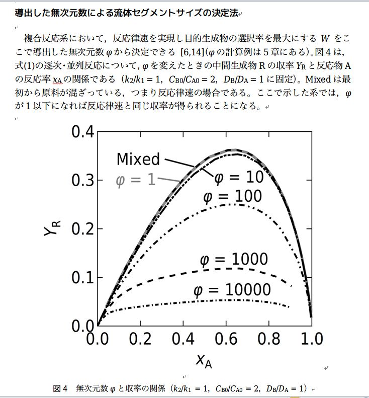
（フォントサイズが大きいまま文書に掲載した場合）
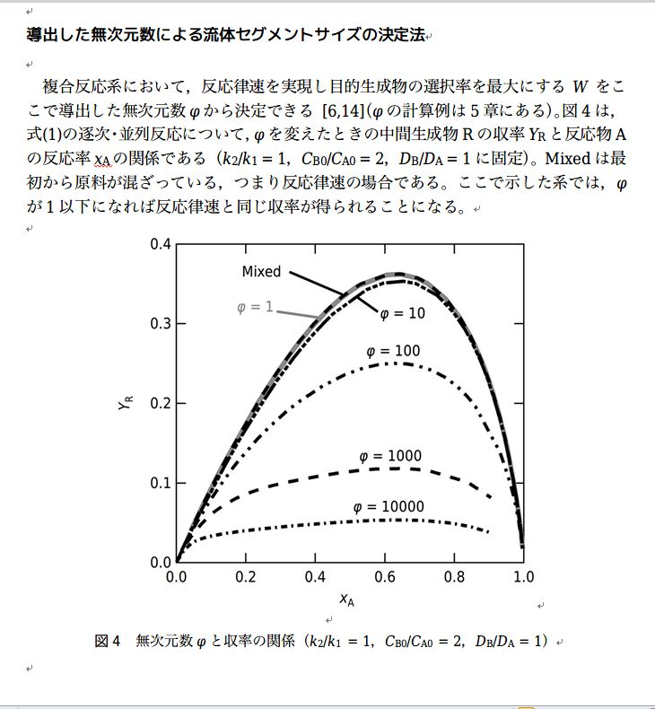
（フォントサイズを本文より小さめに調整した場合）
図11
図中フォントサイズの調整の有無の影響
さらに，学会や卒論発表の要旨ではスペースが限られるため通常の論文の図よりも縮小して載せることが多いだろう．ただし，論文の図を単純に縮小すると文字が小さくなりすぎてしまうことある．要旨に掲載した時点で図中の文字サイズが8 pt.以上 になるように文字サイズを調整しよう．読み手は視力が弱かもしれないことを想定しておこう．
以上に従うと同じ内容の図表でも論文･プレゼン･要旨で頻繁にフォントサイズを変える手間が生じる．それでも状況に合った表現方法を選ぶ ことは読み手の快適さにつながる．
分析や数値計算ソフトで生成した画像は編集して使う．
数値計算ソフトや分析装置に付属する解析ソフトはグラフや等高線図を生成する機能をたいてい備えている．この画像をそのまま論文に載せてしまうと数値や変数名の文字が不鮮明であったり小さすぎたりすることがある．また，数値の表示桁数が測定精度に合わないこともある．表示する数値の形式は1.23E+04ではなくて1.23×104 としよう（表計算ソフトで作ったグラフの目盛りや表にも当てはまる）．論文の主張には不要な映り込みもあるかもしれない．PowerPointやペイントに一度移して読みやすいテキストで上書きし，不要な部分はトリミングするとよい．ソフトの機能で融通が利くなら，ソフトで表示する時点でフォントの種類やサイズ，数値の表示桁数を調整しておこう．
棒グラフで最上部がわからない3Dのものは使わない．棒グラフの柱の太さは柱間の空白幅の2倍，柱は単色で統一する．[23]
図12の先の例のように，3Dグラフだと最大値が手前の上端か奥側の上端かわかりにくい．また，柱間の空白が大きすぎると空白に目が行ってしまう．柱に紛らわしい模様や複数の色を使うことも避ける．ここで示した方針に従ったのが後の図である．付録Cの図20 にも棒グラフの例がある．
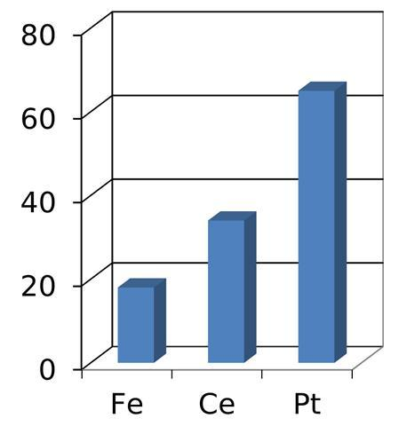
（3Dグラフの悪い例）
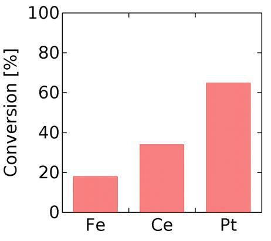
（改善例，柱の幅は空白の2倍）
図12
棒グラフの例
原著論文の原稿の図は縮小してグレースケールで用いられる [22]．
原著論文の原稿の図は，実際の雑誌に掲載される際に縮小されることが多い．縮小後のサイズが1カラム幅（8 cm）に収まるように縮小されることを基準と考えるとよい．このこと考慮して線図の太さ，プロットの大きさ，文字サイズを調整 するとよい．たとえば，学術雑誌には1/4に縮小後に1 pt.の太さの線，4 pt.のプロットサイズ，10 pt.のサイズのフォントになるように図を載せたいときは，元の図中の線の太さは4 pt.，プロットサイズは16 pt.，フォントサイズは40 pt.にしておく．線の太さの調整を忘れがちなので気を付けよう．
PCの画面に表示することを前提とした文書では，PCでの作成時の見た目＝完成品の見た目になる（PC画面の解像度である72 dpiでOK，dpiは1 インチ（2.54 cm）あたりの画素数）．しかし，学術雑誌の論文のように印刷もする場合は300 dpi以上の解像度 の画像が指定されることもある．PCで画像を作成している時点では，表示する予定のサイズの4--5倍の大きさのフォント･画像･写真，その倍率の太さの線 で進める必要がある．画質の高いデータを納品する大切さは，次のページの解説がわかりやすい．
■まずりん；デザイナー哀の劇場1 支給データの怪 ，マイナビニュース
図13に示すように，鮮やかな青と赤はグレースケールに変換すると差がほとんどなくなる．変換後の色を予測しながら図を描くのは難しいので，図･グラフの線･配色も最初からグレースケールで作成すると確実だ．オンライン版はカラー，紙版はグレースケール（カラー刷りは掲載料をとる雑誌もある）で掲載する雑誌では，十分なコントラストを付けた図を投稿するとよい．
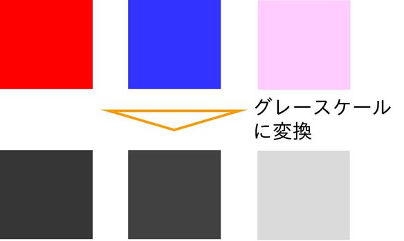
図13 カラーからグレースケールへの変換
以上の点に注意して図を論文に掲載していくとよい．表も図も文章を理解しやすくするためのものであることを認識しよう．読む人の心地よさ も大切だ．また，図表を理解しやすいように文章を書くことも心がけよう．
ここまでで論文の各要素の表現法を一通り説明した．さらに，どのような内容を盛り込めばよいのかも理解する必要がある．そこで，次章ではレポート，卒論･修士論文や原著論文に含めるとよい内容を具体的に説明していく．
■論文を読み込んでもらえるかどうかは図次第の部分がある．
■図の前に図番号と図の紹介文，内容の説明，関連する考察を一つの段落で示そう．
■図の下にキャプションをつける．
■タイトルだけでなく，実験条件や凡例を載せることもある．
■プロットエリアは長方形で囲む．
■作図力学･コントラストに留意しよう．
■目盛りのうち方に注意しよう．
■縦軸･横軸の変数の説明を単位と共に示そう．
■データ系列数は4以下にする．
■図の構成要素は読み手の視線の動きが最小の配置にする．
■使用フォントに一貫性をもたせる．発表用の図中のフォントを編集して論文では使おう．
■最上部がわからない3Dの棒グラフは使わない．
■柱の太さは柱間の空白の幅の2倍にする．
■学術雑誌の原稿の図は縮小してグレースケールで用いられる．
■表も図も文章を理解しやすくするためのもの．
■図や表にはそれを表現する人の主観や価値観の乗った意図がどうしても入ってしまう．
■不都合なことを隠すといった印象操作の極力入らない表現をしよう．
Step 1
図のキャプションを図の上につけよう．
Step 2
図の前に表番号と表に関する説明文を入れよう．
Step 3
作った図を視線の動きを意識しながら見直そう．そしてこの動きを減らす工夫ができないか考えよう．
Step 4
図中のフォントサイズが本文中のフォントと同じくらいになっているか確認しよう．図中のフォントが不釣り合いなら調整しよう．
論文の主な構成要素として，要旨･緒言･本文･結言･謝辞･参考文献が挙げられる．また，長い論文になると脚注･付録が入ることもある．さらに，論文を読者が読みやすいようにページ番号の打ち方，ヘッダーの表記方法，余白などのページレイアウトにも配慮する必要がある．ここでは，各構成要素が含むべき内容や表記の注意点を説明する．[1,4,14,21,24--28]
タイトルは論文の中で最初に目に入り，看板のようなものである．論文を読もうと思うかどうかの第一関門になる．先に進んでもらうためにも，タイトルは論文の主題･オリジナリティを具体的に表現 する．抽象的･一般的すぎるものは避ける．略称･略語も使わないのが原則である．長過ぎるタイトルは主題がぼやけるし，文字数の制限（40文字程度）が設定されていることもあるので，何回も書き直して言葉を厳選しよう．「～に関する研究」「新規な」といった具体的な内容を示していない言葉を削っていこう．学術雑誌の論文ではキーワードを5個程度示すことが多い．このキーワードをタイトルが含んでいると，検索で論文を探し出してもらいやすくなり，多くの人に読んでもらえる可能性が高まる．タイトルの悪い例と改善例を以下に挙げておく．
悪い例）
金属酸化物ナノ粒子の合成法（どのような合成法かわからない）
金属酸化物ナノ粒子を超臨界流体を用いてキレート錯体を経由して2段階で合成する流通式プロセスの開発（48文字，長すぎる）
良い例）
金属酸化物ナノ粒子の前駆体を経由した超臨界水熱合成連続プロセス（31文字）
タイトルで内容が気になると，読者は次に要旨（抄録とよぶこともある）に目を通すことが多い．ここで読者は論文を深く読み込むか判断する．要旨は論文全体を凝縮したものであり，論文の各要素をすべて含み，それだけで完結 したものにする．この完結性のため，本文中の図･表･数式を要旨の中で引用しないし，図表も含まない．緒言･研究方法･結果･考察の要点，簡潔な結言を含めるために，各要素について1文は含めるとよい．要旨はとくに客観的に書く必要があるため，一人称代名詞および類似の主語（例：当研究室）は使わない．
なお，1ページから数ページ程度の学会の講演要旨では，主な方法や結果の図を載せるフォーマットになっていることもある．ただし，この場合でもそれだけを読んで完結した理解ができるように書く．発表には入れるが講演要旨には入れない結果･考察がある場合，それに対応する方法の説明も講演要旨には書かない．講演要旨の中で方法と結果･考察が対応するようにする．
緒言の役割は，読者がその論文を読むべきか否かを判断できるようにすることと，読者が論文の本文を読み進めるための準備を整えられるようにすることである．緒言では，読者が本論に最短経路で読み進んでいけるように，本文を読むのに必要最低限の情報を載せるにとどめよう．そのために緒言に含まれるべきことは以下のとおりである．とくに扱う課題の重要性とオリジナリティを主張 することは大切だ．
■問題の背景（題材の一般的な特徴，統計データ，応用範囲，関連理論，既往の研究）
■本文の主題となる課題（何を，どこまでするのか）
■その課題の重要性
（課題を扱う理由･動機）
■ほかの研究との関連性･自分の研究のオリジナリティ
■課題解決の手段･手法，その方法になる理由と検討内容
緒言では各文献について数文程度に要約して既往の研究を紹介したり，研究背景になる理論や統計データを引用したりすることになる．9.7節 に示した引用の要件を守りつつ，引用文献リストとの対応も正確に記載しよう． 他人の作った理論の概念図，データ，実験結果の写真といった画像をインターネットや電子ジャーナルで集めてきてそのまま緒言に貼り付けたくなるかもしれないが，著作権者の許諾がないならやめておこう．画像はそれ単体で著作物として成立することが多く，他者の画像を載せるのは転載になる可能性が高い．データは自分の研究テーマを導く議論に本当に必要な数値だけを引用するにとどめ，概念図は手間はかかるが自分で作ったものを載せよう．考察をするのにその画像がないと絶対無理という必然性があれば引用と認められる可能性はあるが，画像がなくても既往の研究のレビューはできてしまうことがほとんどのはずだ．コピペが楽だから，時間がないから，ページ数を増やすため，は引用の条件である必然性にはもちろんならない．結果として，緒言は自分で作った概念図が少し入る程度で，ほとんどを文章が占めることになる（例：筆者の博士論文の緒論 ）．
卒論や修論は外に出ないことが多いから問題が大きくなりにくいが，博士論文は国会図書館に保管されるし，今だと大学のリポジトリで電子版が全世界に公開されるので，市販の本同様に著作権には敏感になっておこう．一定の文字数･単語数以上が公開資料と重複すると知らせてくれる盗用チェックソフトも使われるようになってきている．博士論文をこのようなソフトでチェックすることを指導教員に義務づける大学もあるし，学術雑誌だとエディターがこのチェックをすることがある．大学の内部は教育機関の特例で一般よりも複製できる範囲が広いこともあり，普段は複製にそこまで神経をとがらせる機会は少ないだろうが，公開する資料については慎重に他者の著作物を扱おう．裏を返すと，自分の表現をしよう，そのために自分の感性を大切にしよう，伝わりやすいように論理的に考えよう ということだ．
また，緒言とまとめのセクションのタイトルは
「緒言」なら「結言」，
「はじめに」なら「おわりに」，
「緒論」なら「結論」，
「まえがき」なら「あとがき」，
「序章」なら「終章」
のように対応させる．
大まかな本文の構成は研究方法･結果･考察の3点になることが多い．数値計算をしたときはモデルの説明をする章を別途設けることもある．最初に全般的な注意点を述べる．準備段階でトピックを並べた論文の構成を作成しておき，トピックごとに段落を形成 するとよい．各段落の文章については，3章 で述べた論理的･明確･簡潔なものにする主張を支えることを読者が最もすんなり理解できる順序で段落･段落内の文を並べる．
次に，研究方法･結果･考察の内容についてもう少し述べる．一つ目の研究方法は，二つ目の結果を得るのに十分な記述をすること．他の人が追試して再現できる詳しさで手順･装置･条件の説明を書こう．たとえば流通系の実験装置を組んだときは，とくに装置内の流路サイズが重要なので，流路（チューブやクロマトのカラム）の内径･外径･長さ･材質を示しておく．普段実験するときにノートに記録をつけておくこと！ また条件の選択根拠 も述べる．さらに，市販の試薬はメーカー名･グレード（特級など）を，市販の装置は型番と製造会社名を示す．なお，研究方法の節に「結果と考察」の節で扱う実験･計算条件は全て 書いておく．条件の一覧表を「結果と考察」に載せるのは不自然だ．結果と考察まで読んでやっと具体的に何をしたかわかる，裏を返すと方法の節に条件が一部しかないのは読者には不親切に映る．
二つ目の結果と三つ目の考察はまとめて書くことが多い．ここでは結果を解釈し，その解釈の理由を論理的に説明する．この結果･解釈･理由の対応をはっきりとさせよう．推論の場合は，推論であることを明確に示すこと．3.2節 でも述べたように，事実と意見をはっきりと書きわけること．予想に反する結果についても無視しないで，その結果が得られた理由を考察する．
結言では，本文の要点をまとめ，本文全体を根拠とした考察を行い，研究の重要性を主張する．今後の研究の将来展望や応用展開について述べることもある．また，自分の研究の重要性は読者が判断するものであるから，「重要な」「興味ある」といった主観的な判断を示す言葉を用いずに，客観的な表現にする．
結言は緒言で挙げた課題の答え になっている必要がある．例を挙げて説明すると，課題が
「Aという化合物の生成機構を解明する」
だとする．この課題に対して結論が
×「Aという化合物を合成できた」
だと課題に対応していない．本来なら結論は
○「化合物Aの生成機構を解明できた」
といった表現になるはずである．もしこのように結論を書き換えるのであれば，結論に至る考察，さらには考察をするためのデータの提示方法，そしてそのデータを得るための方法 まで変ってくることもある．ここでは結論を書き換える例を示したが，課題を書き換えてもよい．この場合は課題につながる背景や既往の研究例の説明も変ってくるだろう．
図14に論文全体の構成と各セクションの関係を図示する．上記の話のまとめにもなっている．第1章と第2章はまとめて一つの章にすることもあり，章立ては所属しているところの文化で多少違うかもしれない．前の段落やこの図のように，個々の表現に集中するだけでなく，一段上から自分の論文を見る感じで，全体像への意識も持ちながら論文を書こう． セクション間の関係がスムーズにつながるか（Why so?とSo what?の関係），各セクションが論文全体の課題の答えにつながっているか，という点にも気を配ろう．ふかん的に考える ことは論文の執筆だけでなく，研究テーマの組み立て，さらには自分が生きていく方針を考えるのにも役立つ（感情を客観的にとらえることを12章 で解説している）．
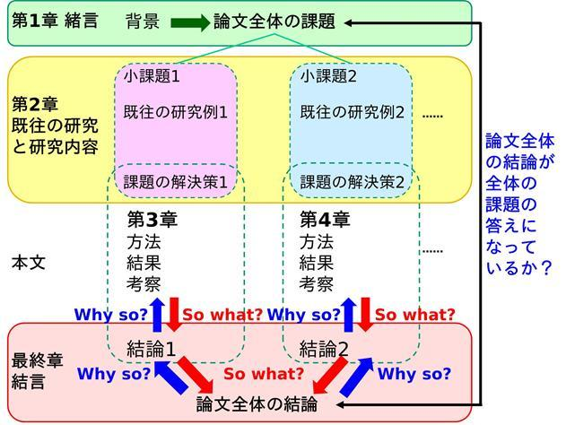
図14 論文の全体像
謝辞では，研究などを進める上で，ご指導･ご助言いただいた先生方，データ･実験装置を提供していただいた企業･研究機関，研究資金などをご支援いただいた公的機関など，お世話になった方々への感謝の意を明示する．論文の結言の後に，別の項目を新たに設けて述べる．卒業論文･修士論文などでは，内輪の先生方･先輩･同僚･後輩などにも感謝の意を示すが，原著論文には，自分のいる研究室･部署以外の方に対してだけ謝辞を述べる．このような論文では，自分の研究室の教員も共著者に含まれていることが一般的だからである．謝辞の文章表現について，注意すべき点を以下に挙げておく．[4]
■協力･助言者の称号（博士）･役職名（教授･社長）･接辞語（殿･氏･君･嬢）が多くつくほど尊敬の度合いは高まる．たとえば，○○大学大学院○○研究科○○専攻教授○○先生のほうが，○○大学○○先生よりも丁寧な表現といえる．
■感謝を伝える表現を敬称に合わせて変えること．表現としては，「深甚な感謝の意を示します」「甚大なる謝意を表します」「厚く謝意を申し上げます」「心よりお礼申し上げます」「感謝の意を表します」「謝意を表します」「感謝いたします」などがあり，先にあげたものほど丁寧な言いまわしである．単調さを避けることにもなる．
■謝辞は公開礼状なので，ここだけは「です･ます調」を用いて，手紙の文体で書く．
最初に引用文献を示す理由を述べておく．研究や論文に限らず，身の回りにあるものは完全なオリジナルということはまずない．すでに存在するものに自分なりの味付けを加えていくことになる．人間の意識は深いところではつながっているので，他者の著作物を参考にする，一部利用することは自然なことでもある．このとき参考にした情報のソースを引用文献として挙げる．著作権法でも引用は正当に認められた行為だ．盗用の疑いをかけられないように，自信をもって情報を発信できるようにするため にも，適切に引用文献を提示しよう．本文中で引用していない文献を文献リストに載せてはならない．しっかりした文献リストがあると，読む人が関連情報を探しやすくなるという利点にもつながる．
次に引用の要件をまとめておく [24]．他人の権利や法律を守ることは重要ではあるが，あなたがせっかく表現するのだからあなたの内側から出てくるものを最大限生かすのが最も大切なことだと筆者は考えている．自分なりの表現を大切にしていれば以下の要件は自然と守られるはずだ．あなたにはあなたなりの表現をする独自の役割がある．あなたにしかできない役割に集中しよう．このためにもあなたは自分の感性･感情･感覚を大切にしていい．
■公開された作品であること（メールや手紙は公開されていないので引用不可）
■引用部分がほかと明らかに区別できること（引用部を「 」･" "や枠で囲んだり，別行に示したりする）
■オリジナルの表現が「主」，引用部分が「従」であること（引用部分の総和は全体の数%以下にするのが無難，各セクション内でも1/3以内にしておく）
■オリジナルの表現をするために引用する必然性があること（たとえば内容を考察するのに引用が必須である場合）
■改変をしないこと（改行･改段落位置変更，漢字かなの入れ替え，句読点の修正といった細かな変更も同一性保持権違反になる，誤字の修正も厳密には違反）
■出典を明記すること（論文特有の方法は以下に説明していく）
文献を本文の中で引用するスタイルには大きく分けて二つある．一つ目は，引用した内容が記されたところに文献番号を記しておき，論文の最後でその番号順に引用文献のリストを掲載する．本書やAIChE Journalなどはこのスタイルを用いている．二つ目は，たとえば（Ehlerset al. ，2000）のように（著者の姓，年号）として文中で引用し，第一著者の苗字のアルファベット順に文献を並べる．著者の姓は著者が2人なら（姓1 and 姓2, 年号）で書き，3人以上なら（筆頭著者の姓et al. , 年号）とする（et al. はイタリック体）．このスタイルは化学工学論文集やChemical Engineering Scienceなどで用いられている．
本文中に雑誌･論文集･書籍の名前を引用する場合は『 』または" "を，論文名の場合には「 」または' 'をつける．
化学工学論文集の『論文投稿の手引き』[21] に沿って，文献リストの記載形式を説明していく．まず，学術雑誌は，
[番号] 著者名； "題名，" 発表雑誌名，雑誌巻数(号数)，ページ数先頭--最後 (年号).
例）
[1] Ehlers, St., K. Elgeti, T. Menzel and G. Wießmeier; "Mixing in the Offstream of a Microchannel System,"Chem
.Eng
.Proc
.,39
, 291--298 (2000).
の順に並べる．「著者名」については，筆頭著者だけ姓，コンマ，名のイニシャルの順に書く．以後は名のイニシャル，姓の順に全員の名前を列挙する．最後の著者名の前にandを入れることもある．「題名」は，単語の頭文字を大文字にする．ただし，冠詞･接続詞･前置詞は文頭以外ならば頭文字は小文字にする．「雑誌名」は略称で表記し，イタリック体 にすることが多い．雑誌名の略称は， 参考文献 [25,26] に示したWebサイトに一覧が示されている．一部の雑誌名の略称については表9に示した [25,26]．単語レベルで略し方を調べるにはISSN International Centre のLTWA (List of Title Word Abbreviations) のサイト で検索するといい（Chemical Engineering Journalの投稿規定 では雑誌名を略称にするのにこれを参照するよう指定している）．また，「雑誌巻数」は太字 で示す（号数をカッコ内に併記することもある）．ページ数の先頭と最後の間にハイフン（-）ではなく，n-dash（--，記号と特殊文字から出す）を用いる ことに注意しよう．最後の「年号」はカッコで囲む．
表9 雑誌名の略称
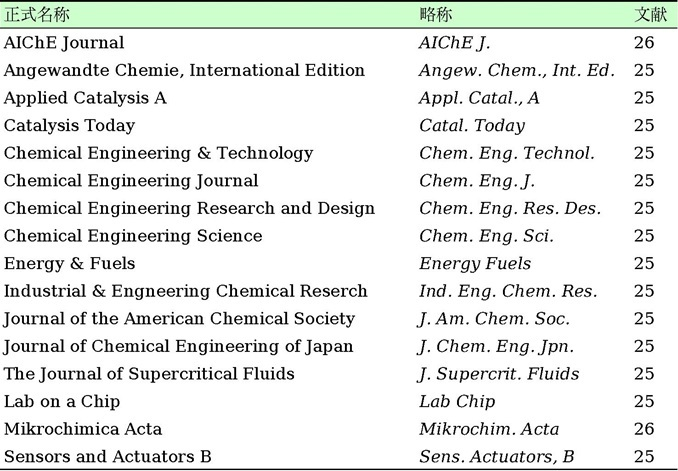
単行本の場合は次のようにする．
[番号] 著者名; 書名，（版数，）pp. 引用ページ範囲，出版社名，出版都市名，国名 (第1刷発行年).
例）
[2] Carslaw, H. C. and J. C. Jaeger; Conduction of Heat in Solids, 2nd ed., pp. 198--201, Clarendon Press, Oxford, England (1960).
ページ数が1ページのときは「p. ページ数」，複数ページにわたるときは，「pp. ページ範囲」で表す．参考書として用いたときはページ数はいらない．洋書の出版社名と出版都市名は内表紙やその裏側にある．都市名が多く並んでいる場合は最初の都市名を載せる．不明ならアメリカ議会図書館 や大英図書館 のHPでISBNを使って検索する．
特許の場合は，次のようにする．
[番号] 出願人名; "発明の名称，" 引用ページ範囲，公開番号 (発行年).
例）
[3] Kameyama，H.; "Production Method of Thermal Conductive Catalyst," Japanese Patent Disclosure, H02-144154 (1990).
国際会議のProceedingsは次のようにする．Proceedingsはその会議に参加しないと通常手に入らないので，一般には手に入りにくいものを引用文献に入れるのは避けよう．
[番号] 著者名; "題名，" 学会名，引用ページ範囲，開催都市名，国名 (年号).
または
[番号] 著者名; "題名，" 学会名，引用ページ範囲，出版社名，出版都市名，国名 (年号).（出版社がProceedingsを発行している場合）
例）
[4] Wise, B. M. and N. L. Ricker; "Upset and Sensor Failure Detection in Multivariate Processes," Preprints of the 37th AIChE Meeting, pp. 115--121, San Francisco, USA (1989).
ほかにもWebサイトの情報を参考にすることもあるだろうが，論文の引用文献には向いていない．Webサイトは書籍や雑誌に比べると見られなくなる可能性も高い．WebサイトのURLを文献リストに挙げるのを好まない雑誌もある．そのサイトが引用している学術雑誌の記事や単行本を文献リストには載せよう．Wikipediaも学習に使うのはいいが，引用文献として挙げるのは避けよう．
卒論などでとくに規定がなければ，ここで示した方法に従うとよい．細かな引用文献の記載方法は各雑誌の投稿規定によって異なってくる．投稿規定をよく読んで正確に文献リストを作ろう．そうすれば短時間で行うことを要求される校正の段階の手間も減るし，オンラインジャーナルでの引用文献のリンクがおかしくなるということもなくなる．
脚注は式･記号の定義や補足説明のように本文が煩雑になり読みにくくなる場合につける．引用文献を脚注に示す雑誌もある．形式は，脚注が入る部分の右肩に上付き文字で番号などを明示し，該当ページの欄外に同じ記号を用いて説明を記載する．ただし，脚注の内容は本文中に挿入可能であれば脚注を使わない．
付録には，本文の中に入れると主題の理解を妨げる式の誘導，解析プログラム，装置や器具の詳細な使用手順，主張には直結しないが残しておきたい結果をまとめて掲載する．付録に関連する本文中で，付録のどこにどの内容を示したかを説明しよう．学術雑誌の論文には規定ページ数が設定されていることもあるので，付録をつけるかどうかは十分に考慮すること．
文章と図表の配置やセクションの開始位置といったページレイアウトも見やすい文書の作成では意識したい．段落･セクションの最後の1行だけが次のページに行ってしまうこと（widow，図15左）は避ける．また，各段落の最後の行が1文字＋句点で終るのも見栄えが悪い．図のサイズや文章の表現，説明の量を調節する．さらに，段落･セクションがタイトルまたは本文の1行目の直後で次のページに入ってしまう（orphan，図15右）ときは，そのセクションを次のページから始める．なお，orphanにならないのであれば，次の節は前の節と同じページに続ける．章の終わりだけページを改める．[28]
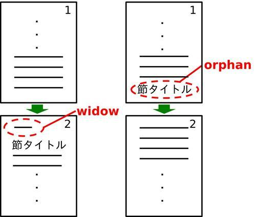
図15 ページレイアウトの悪い例（横線は文章）
各ページの下部にできるだけ余白を作らない（章の最後は例外）．7章 と8章 でも述べたように，関連する文章と図表は近接させるのが基本である．しかし，これに従うと大きな空白が生じるときは，後の段落の文章を一部手前のページにもってくるとよい．書籍では文章と図表の位置関係を調整して図表はページの上端か下端に載せることが多い．博士論文などの長い文書ではこのことも意識するとよい．文章や図表が入る領域の周囲の余白サイズは，フォーマットで指示されていればそれに従う．提出した文書がそのまま製本される場合は，とじ代を考えて冊子の内側になる面はとくに広く余白をとること（A4なら25 mm以上）．
普段のレポートでも，ページ番号は入れよう．レポート用紙の右上にページ番号を書く欄があるはずだ．ページ番号の位置は，章立てのある論文の場合は，章の最初のページはその下に配置し，ほかのページは上部に配置することが多い．また，両面印刷で左右のページが区別される場合は，左（偶数）ページは左上，右（奇数）ページは右上にページ番号を置く．また，ページ番号は本文の最初が1ページ目になるようにし，その前の目次･前書きの部分のページ番号はローマ数字（i，ii，...）で示す．本書でも実践しているので確認してみよう．設定方法は次章 で述べている．
最後にページ上部余白のヘッダー領域に記す内容にふれておく（文書作成ソフトでの設定は次章参照）．章立てのある論文では，章ごとにヘッダーを変える．ヘッダーには章のタイトルと，ページ番号を入れる．左右のページが区別される場合は，左 ページに章 のタイトル，右 ページに節 のタイトルとする（左ページに大きい要素がくる）．手元の教科書でも確認してみよう．
■タイトルは論文の看板．論文の主題･オリジナリティを具体的に表現しよう．
■要旨は論文全体を凝縮したもので，それだけで完結したもの．
■緒言で論文の課題の重要性･オリジナリティを主張しよう．
■本文は論理的に，事実と意見を書き分け，方法は他人が再現できるように書こう．
■結言は緒言で示した課題に対する答えになっているか確認しよう．論文全体を一段上から客観的にみよう．
■お世話になった方々･団体に謝辞を丁寧に書こう．
■自信をもって情報発信できるようにするためにも，適切に引用文献を提示しよう．読む人が関連情報を探すのにも役立つ．
■投稿規定をよく読んで正確に文献リストを作ろう．
■論文の主題を読む人が理解しやすいように脚注や付録を活用しよう．
■読みやすさを考えてページレイアウトをデザインしよう．
Step 1
自分の論文のオリジナリティは何か考えよう．
Step 2
Step 1で考えたオリジナリティをタイトル･要旨･緒言･本文･結言に取り込もう．
Step 3
緒言の目的（問い）と結言で得た結論（答え）が対応するか確認しよう．
Step 4
文献リストがフォーマットに合っているか，一貫性のあるスタイルになっているか確認しよう．
Step 5
章の途中のページの下に大きな空白ができないように文章の量や図表のサイズを調整してページレイアウトを整えよう．
前章までは，論文の内容･表現についての説明をしてきた．研究室に入ると実際に論文を作成する際は，Microsoft Office Wordのような文書作成ソフトを用いることが多い．論文をより迅速に作成するために，知っておくと便利なWordのショートカットや機能をここでは紹介しておく．なお，本章の内容はWord 2010以降に対応している．
写真を含むファイルサイズ削減法
装置やサンプルの写真を論文･プレゼンテーションに載せることがある．このとき何も考えずに写真を載せてしまうと文書のファイルサイズが数十Mbにまで達してしまうことがある．容量が大きくなる理由は二つある．一つ目は「元の画像ファイルが高画質すぎる」からであり，もう一つは「画像の文書ファイルへの貼り付け方に問題がある」からである．論文を教員にチェックしてもらうときや外部の人に読んでもらいたいときに，このようなファイルを添付してメールを送ると，メール受信する側が一定のサイズ以上は受け取らない設定なっていて届かないことも起こりうる．送り先のサーバーに多大な負担をかけるので受信者がそのメール以外もうまく受け取れなくなる 可能性もある．こうなると受信者だけでなく，受信者と連絡を取りたい人にも迷惑がかかるかもしれない．また，学会に論文を電子投稿する際にも，アップロードできるファイルサイズの上限（3 Mb程度）に引っかかってしまう可能性もある．そこで，写真を文書に貼るときのファイルサイズの削減方法を理解しておいて，少しでもファイルサイズを小さくするように努めよう．次のサイトも参考になる．
■よねさん；Word(ワード)基本講座：図や写真の挿入と操作方法 ，よねさんのWordとExcelの小部屋
ファイルサイズの削減の手順を次にまとめる．
Step 1
まず写真の元のファイル（JPEGなど）の画質を落とす方法としては，デジカメで低画質で撮影するか，PC上で画質を落とせばよい．ここではWindowsに最初から入っているWindowsアクセサリのペイントを使う方法を説明する．ペイントで写真ファイルを開くと，画面に収まりきらないほど大きく画像が表示される．PCのモニターでは1インチあたりの画素数が決まっているため，データ容量が大きい画像（＝画素数が多い）は大きく表示される．
Step 2
ペイントの画面上部「ホーム」タブのイメージの中にある「サイズ変更（と傾斜）」で水平･垂直方向の数値を30--70％程度にする（縮尺の％は掲載したいサイズによる，画像表示が小さくなる）→ この時点でファイルサイズが減少する→名前をつけて保存する．
Step 3
次に貼り付けるときは，エクスプローラで画像のファイル名を選択した状態
（ファイル名の表示色が反転した状態，次の画像参照）でCtrl＋C（Ctrlキーを押しながらC）を押す，ファイル名からコピーしないとOfficeに貼った時点でビットマップになり，元がJPEGやPNGでもファイルサイズがビットマップ並に大きくなってしまう．
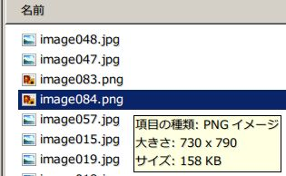
Step 4
Word･PowerPointといった文書ファイル上でCtrl＋Vとして画像を貼る．これでJPEG形式でファイルを貼り付けられる．必要に応じて線図･テキストを足す．こうすると文書のファイルサイズがJPEG･PNGのファイルと同程度しか増えない．
Step 5
線やテキストをPowerPointで加えた写真をWordに貼る際は，形式を選択して貼り付けで「Office描画オブジェクト」を選ぶ（PowerPointからCtrl＋Cの直後にWord上でCtrl＋Vで貼るとこの形式になっている）．「拡張メタファイル」で貼るとファイルサイズが大きくなることがある．貼り付けた直後に動作が重くなることもある．
上記のようにすると，1ヶ所直すだけで数Mb単位でファイルサイズが減ることがある．ファイルサイズが小さいとファイルがすぐに開くので，自分が編集するときも快適になる．なお，Word･PowerPoint上で画像を縮小してもファイルサイズは減少しない．
ついでだが，PowerPointのファイルで上書き保存を繰り返すと，ファイルサイズがどんどん大きくなっていってしまうことがある．こうなるときは「名前をつけて保存」でファイル名を変えて保存するとファイルサイズが小さくなる．
Wordショートカットキー一覧 [29]
実際に試して自分がよく使うものを覚えていくと作業が効率化する．画面のキャプチャーのようにキーボードでしかできない操作もあれば，画面のサイズ調整のようにマウスのほうがやりやすい操作もあるので，適材適所でキーボードとマウスを使い分けよう．
範囲の選択：Shift を押しながら方向キー（Shift ＋ ↑→↓←）
全体を選択：Ctrl ＋ A （Ctrl を押しながらA ）
コピー：Ctrl ＋ C
貼り付け：Ctrl ＋ V
切り取り：Ctrl ＋ X
元に戻す：Ctrl ＋ Z
やり直し：Ctrl ＋ Y
上付き：Shift ＋ Ctrl ＋「;」 （PowerPointも同じ，ExcelではCtrl＋1 → Alt＋E → Enter ）
下付き：Shift ＋ Ctrl ＋「-」 （PowerPointではCtrl ＋ 「;」 ，ExcelではCtrl＋1 → Alt＋B → Enter ）
太字：Ctrl ＋ B （アイコンの文字と同じキーを使う）
イタリック体：Ctrl ＋ I （アイコンの文字と同じキーを使う）
下線：Ctrl ＋ U （アイコンの文字と同じキーを使う）
変換範囲をすべてひらがなに変換：F6
変換範囲をカタカナ･ひらがなに変換：F7 （押す回数で範囲変更）
変換範囲を半角カナに変換：F8 （押す回数で範囲変更）
変換範囲を全角アルファベットに変換：F9 （押す回数で範囲変更）
変換範囲を半角アルファベットに変換：F10 （押す回数で範囲変更）
フォントサイズの変更：Shift ＋ Ctrl ＋ P
フォント種の変更：Shift ＋ Ctrl ＋ F
1.5 lines space：Ctrl ＋ 5 （行間が少し広がる）
Double space：Ctrl ＋ 2
Single space：Ctrl ＋ 1 （行間を標準に戻す）
段落前の行間を1行にする：Ctrl ＋ 0
（以上四つはWordだけ で有効，数字はテンキー入力不可）
左ぞろえ：Ctrl ＋ L （Excel では無効）
右ぞろえ：Ctrl ＋ R （Excel では無効）
中央ぞろえ：Ctrl ＋ E （Excel では無効）
両端ぞろえ：Ctrl ＋ J （Excel では無効）
印刷：Ctrl ＋ P
上書き保存：Ctrl ＋ S
改ページ：Ctrl ＋ Enter
新しい文書を開く：Ctrl ＋ N
なお，特殊文字もショートカットキーで表示できる．英語で論文を書いていても，ウムラウトのように著者名にドイツ語やフランス語特有の文字を使うことはある．以下に代表的なものを列挙しておく．いずれも日本語入力をOffにしたときのWordだけで有効だ．
ä/ö/ü：Ctrl ＋「:」 →A/O/U
Ä/Ö/Ü：Ctrl ＋「:」 →Shift ＋ A/O/U
â/ê/î/ô/û：Ctrl ＋ ^ →A/E/I/O/U
à/è/ì/ò/ù：Ctrl ＋ Shift ＋ @ →A/E/I/O/U
á/é/í/ó/ú/ý：Ctrl ＋ Shift ＋ 7 →A/E/I/O/U/Y
ã/ñ/õ：Ctrl ＋ Shift ＋ ^ →A/N/O
Å（オングストローム = 10--10 m）：Ctrl ＋ @ →Shift ＋ A
数式エディタのショートカットキー [30]
以下のショートカットは，「挿入」タブの「記号と特殊文字」にある「数式」で作成したものでは使えない．数式エディタ（数式 3.0）でだけ使える．数式エディタは「挿入」タブの「オブジェクト」の一覧から選択できる．
上付き：Ctrl ＋ H
下付き：Ctrl ＋ L
上付き＋下付き：Ctrl ＋ J
上付きバー（例：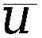 ）：Ctrl＋ 「-」
分数（2行立て）：Ctrl ＋ F
分数（スラッシュ）：Ctrl ＋ /
積分記号：Ctrl ＋ I
テンプレートモード：Ctrl ＋ T （画面の表示はとくに変わらない）
積（パイ）記号：Ctrl ＋ T →（Ctrl 押さずに）P
和（シグマ）記号：Ctrl ＋ T →（Ctrl 押さずに）S
ルート：Ctrl ＋ T →（Ctrl 押さずに）R
n 乗根：Ctrl ＋ T →（Ctrl 押さずに）N
ギリシャ文字：Ctrl ＋ G →（Ctrl 押さずに）表6 の対応アルファベット
記号入力モード：Ctrl ＋ K （画面の表示はとくに変わらない）
×（掛け算）：Ctrl ＋ K →（Ctrl 押さずに）T
≤（小なりイコール）：Ctrl ＋ K →（Ctrl 押さずに）,（＜ ）
≥（大なりイコール）：Ctrl ＋ K →（Ctrl 押さずに）.（＞ ）
∞（無限大）：Ctrl ＋ K →（Ctrl 押さずに）I
→：Ctrl ＋ K →（Ctrl 押さずに）A
∂（ラウンド，偏導関数）：Ctrl ＋ K →（Ctrl 押さずに）D
最後に付け加えると，ファイルを選択した状態でF2 を押すとファイル名を変更できる．
検索･置換
長い文章の中で特定の内容を探したいときは「検索」を使うとよい．ショートカットキーのCtrl＋F で画面左側のナビゲーションに検索語句を入れるボックスが現れる．
また，特定の表現を一度に統一して別の表現にしたい場合は「置換」を用いると便利だ．「検索と置換」画面の「置換」のタグ（またはCtrl＋H ）で，「検索する文字列」に変換したい語句，「置換後の文字列」で訂正後の語句を入力して，一つずつ置換したいときは「置換」を選んでいく．一度に文書全体を訂正したいときは「すべて置換」を選ぶ．
箇条書きの書式変更
文献を並べるときなど，箇条書き番号に半角英数字ファントを使いたいときや（半角文字では番号を打っても自動で箇条書きモードにならない），箇条書き番号を1以外から始めたいとき（箇条書きを再開するとき）がある．この場合，「ホーム」タブの中央上部の「段落番号」のアイコン（縦方向に1,2,3と書かれたもの）を選択して，下の方にある「新しい番号書式の定義」で数字の前後のカッコを変更し，出てくる画面中の「フォント」ボタンでフォントの種類･サイズを設定する．開始番号は，いったん箇条書きを作っておき，箇条書きのところにカーソルを合わせた状態で，「段落番号」アイコンを選ぶと出てくる一覧の一番下に「番号の設定」が選べるようになっているので，ここで変更する．
番号が10以上 まで必要な場合は，箇条書き番号の入るスペースを十分に確保するために，箇条書き番号の上で（灰色になる）右クリックして「リストのインデントの調整」で「インデント」と「タブ位置の追加」の下の欄の値を9 mm以上にしておくとよい（フォントの種類やサイズに必要な値は依存する）．このようにする理由は以下の例を見るとわかる．
[9] 文献
[10] 文献
（字下げとぶら下げの欄の値を7 mmにすると，箇条書きの番号が入るスペースが足りなくなり，自動で非常に大きなスペースをとってしまう．）
[11] 文献
（字下げとぶら下げの欄の値を9 mmにした場合）
行間の設定
デフォルトの状態でフォントサイズを部分的に大きくすると，使った行だけ行間が広くなってしまい，ほかの行とのバランスが悪くなることがある．行間のバラツキを調整したい場合は，「ホーム」タブ→「段落」の中ほどの「間隔」の項目で「1ページの行数を指定時に文字を行グリッド線に合わせる」のチェックを外すと，ほかのフォントサイズを使ったときと行間の差がなくなる．必要に応じて，同じく「間隔」の項目で「段落後」の「間隔」の数値を変更してもよい．
また，single，1.5 lines，double spaceといった行間の指定をされることが国際会議の要旨では多い．このときは，「ページレイアウト」タブ（Word 2016は「レイアウト」）→「余白」→「ユーザー設定の余白」→「文字数と行数」タブの2段目にある「文字数と行数の指定」で「標準の文字数を使う」を選んだ後に，「ホーム」タブの「段落」にある上下の矢印の右側に平行線の引かれたアイコンをクリックして行間を選べばよい．先に挙げたショートカット を用いてもよい．
各行の文字数･各ページの行数の設定
たとえば，MS 明朝10.5 pt.で各ページ40行･各行40文字といった，フォントの種類･サイズに加えて，各ページの文字数･行数までフォーマットで指定されることがある．この例の場合，「ページレイアウト」タブ（Word 2016は「レイアウト」）→「余白」→一覧が出てくるので一番下の「ユーザー設定の余白」で「文字数と行数」のタブで「文字数と行数を指定する」のラジオボタンを選んだ後に，行数と文字数を40とする．次に，下の「フォントの設定」ボタンを押すと出てくる画面で「MS 明朝」「10.5 pt.」を選ぶ．行数と文字数が自動変更していることがあるので行数と文字数が40になっていることを本文で確認する．この「フォントの設定」をしないと，指定のフォントサイズの文字を用いても一行の文字数が合わなくなる．フォントの設定が11 pt.になっていると，1行の文字数を40文字にしても，10.5 pt.の文字を通常の画面左上で設定しても，1行41文字となってしまう．
自動選択されるフォントの種類の設定
5章 でも書いたように半角英数字にはCenturyがデフォルトでは選ばれるが，使用は避けたほうがよい．このためにWord起動時に通常の本文用に選択されるフォントを変更できる．この設定は，「ホーム」タブの「フォント」を開いて使いたいフォントを選ぶ（日本語用，半角英数用）→出てきたウィンドウの下にある「規定に設定」をクリック→「Normal.dotmテンプレートを使用したすべての文書」ラジオボタンを選んで「OK」とするとできる．見出しの部分に使うフォントの種類の設定は二つ後の「目次の自動設定 」で説明している．
ヘッダー･フッターの設定
ページ番号を入れたい場合，「挿入」タブ→ヘッダーとフッターにある「ページ番号」と選んでいき，ページのどの位置にページ番号を入れるかを指定する．ヘッダー･フッターの編集可能な画面の状態で「挿入」→「ページ番号」としてもいいし，1ページ目以外から始めたい場合は，「挿入」タブ→「ページ番号」→「ページ番号の書式設定」で開始番号を指定すればよい．
ヘッダー･フッターに章やセクション名を入れたい場合，「ページレイアウト」タブ（Word 2016は「レイアウト」）→「余白」とたどると余白の種類の一覧が出てくる．この一番下の「ユーザー設定の余白」→「その他」とたどって，画面中央の「ヘッダーとフッター」の二つチェックボックス（奇数/偶数ページ別指定，先頭ページのみ別指定）を必要に応じてチェックする．次に「挿入」タブ→「ヘッダー（フッター）」→「ヘッダー（フッター）の編集」と選んでいくと（またはヘッダー･フッター領域をクリック），ページ上部（下部）に入力ができる画面になる．
ファイルサイズが大きくなるのを避けるために章立てのある論文では章ごとにファイルを分けて作成するのが無難である．しかし，目次の自動生成を活用するため，ファイルサイズが大きくならない場合は一つのファイルで作成したほうが便利だ．章ごとにヘッダーを変えたり，本文の前のページ数だけアラビア数字で表記したりしたい場合は「ページレイアウト」タブ（Word 2016は「レイアウト」）→ページ設定の中にある「区切り」→「セクション区切り」を設定する．
目次の自動生成
卒業論文･修士論文といった長いものになると目次をつける．いちいち章･セクションタイトルのコピー&ペーストを繰り返し，その位置のページ番号を確認しながら目次を手打ちするよりも，ここで説明する方法のほうが便利である．
まず，「ホーム」タブ右側の「スタイル」で見出し1，見出し2， ......と指定していくと，指定した部分を抽出して目次を作成できる．各スタイルのフォントの種類やサイズ，太字にするかどうかといった設定は，スタイル名を右クリック→「変更」→出てくる画面下の「自動的に更新する」にチェックを入れる→一番下にある「書式」をクリック→「フォント」で変更できる．
次に，目次を入れたい位置で，「参考資料」タブ→一番左の「目次」とたどり，「目次の挿入」でスタイルを指定して「OK」を選択すればよい．論文を改訂して目次のページ数やセクションタイトルが変わったときは，目次の領域で右クリックして「フィールドコードの更新」を選び，「目次をすべて更新する」にチェックを入れて「OK」を押すと目次が更新される．「参考資料」タブの「目次の更新」でもできる．これで改訂時の目次の修正漏れも減るはずだ．
ここで紹介した方法の利点をもう一つ紹介しておく．「スタイル」で見出し設定後に「表示」タブ→「ナビゲーション ウィンドウ」にチェックを入れると設定箇所の一覧が出る．この一覧にあるセクション名をクリックするとそのセクションまで移動できる．文書が長くなると特定の位置まで画面をスクロールするのも大変になるので，これを使うと楽に速く目的の位置に移動できる．
2段組の設定
卒論や学会の要旨は1段組と2段組を混在させたページレイアウトにするように指定されることがある．2段組を設定するには，2段組にしたい部分を選択しておき，「ページレイアウト」タブ（Word 2016は「レイアウト」）→ページ設定の「段組み」で「2段」を選べばいい．
半角記号の位置調整 [31]
半角の ( )，-- といった記号は小文字アルファベットに合わせて高さ方向の位置が決められているため，日本語フォントや数字･大文字と並べると沈んで見える．論文でよく使うTimes New Romanでこの傾向は顕著である．ポスターなど見栄えをとくに気にする文書ではこれを解消したいときもある．半角記号を選択した状態で，「ホーム」タブ→「フォント」の右側の右下を向いた矢印をクリックして出てくる画面で「詳細設定」のタブに移る．位置を「上げる」 ，間隔を本文のフォントが11 pt.なら「1 pt.」 とする（必要な調整間隔はフォントサイズに比例する）．こうすると，
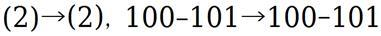
のようになり，わずかな差だが自然な感じになる．上付き･下付きもそれぞれ2 pt.ずつ上げ下げ すると（フォントが11 pt.の場合），次のように数式エディタの感じに近づく．
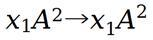
■文書を添付ファイルで受け取る人のことを考えてファイルサイズはできるだけ小さくしよう．自分が論文を編集するときも快適になる．
■よく使いそうなショートカットキーを文章を書くときに試してみよう．
■見出しと目次生成機能を使いこなそう．
■体裁に一貫性が出るように
・置換
・箇条書き書式の設定
・行間の調整
・ヘッダー･フッターの設定
を活用しよう．
Step 1
文書に写真を使っているなら本章の方法でJPEG形式のファイルをダイレクトに文書に貼ってみよう．
Step 2
この章に出てきたショートカットキーを試してみよう．
Step 3
「、」「。」で文章を書いていたらCtrl + Hで「，」「．」に置換してみよう．
ここまでで論文を作成するのに必要な表現方法について述べた．しかし，文章表現法がわかっただけでは不十分である．論文を構成し，仕上げていく手順も知っておく必要がある．本章では，これまでのおさらいも兼ねて論文作成の手順を示し，ミスがなく正確で，より完成度の高い論文を作成するために，論文を校正･編集するための注意点を示す．[1,4]
論文作成の手順を述べる前に，全般的な心得を最初に述べておく．初稿から論理の構成をしっかり組んでおかないと，最終稿もいいものにならないことをまず認識しておこう．人間には一貫性を守りたいという傾向があり [32]，一度書いた文章の構成を大幅修正するのは気が進まないものだからだ．
また，自分の書いた文章を改善するために何度も読み返していくと，次第にチェックがなおざりになっていくので，余裕をもって書き始めて，見返す間隔を長く空けられるようにしよう．とは言っても締め切りが近くならないと動き出せないのが普通だ．次章でもふれるが ，心理的な負荷を下げるためにちょっとずつ，すぐに書き始めよう．
さらに，PC画面上だけで文書の確認をすると細かいミスに気付きにくいので，極力印刷したもので読み返そう （参考：CMB研究所；トレード日記 笑える投資ブログ，2013年5月10日 ）．ミスに気をつけるだけでは不十分であり，本質的にミスを発生しにくい，またはそれに気付きやすい論文作成方法を考えよう．たとえば10章で紹介した「目次の自動生成 」をすれば目次作成のミスは手作業で作るよりも大幅に減るだろう．
次に論文を書き進める具体的な手順をまとめる．
Step 0
論文を書くのは非常に実践コストが大きい．認知資源（用事を覚えておく，判断する，選ぶ，学ぶ，考えるといった認知のための余力）も大量に必要になる．論文執筆以外に認知資源を消耗してしまうとそもそも論文執筆が進まない．せっかく本書を読んでも内容も生かせない．論文執筆のために認知資源を残しておく必要がある．そのために以下のように論文執筆に集中しやすい環境を整えよう．
■気にかかる用事はできる範囲で終えておく
■論文執筆以外の作業は一旦後回しにしてとにかく優先して論文執筆を進める
■電話やメールといった外乱が入らない場所を確保する，インターネットが不要な作業なら携帯電話の電源やパソコンのネット接続を切っておく
■疲労の蓄積も禁物，体と頭をしっかり休めよう
とはいえ現代は研究実務以外の雑務が多い．認知資源があまり残らないことを受け入れたほうがいいこともある．その場合は少しでも論文執筆が進んだらOKだ．限られた認知資源であなたは最善を尽くしたのだ．少ししか進まなかったとしても自分を責めなくていい．自分を責めるのは逆効果だ．
Step 1
投稿規定を確認し，読み手が誰なのかを考え，報告すべき内容についてどの程度詳しく書くか，分量はどれくらいにするかを決める．
Step 2
主題を決めて目標規定文（2章参照
），主張を支えるトピックを考え，論文の構成を決める．目次と簡単なアウトライン，図表の配置案を作っておく．ここでは，論文で扱う課題とそれについて伝えたいことを明確にし，自分自身がまずそれを理解することが目的である．伝えようとする内容がはっきりとわかっていないと文章をうまく書けない．
Step 3
論文を書くのに必要なデータ，参考文献などをそろえておく．図表の原案もこの時点で作れる分は作っておく．
Step 4
論文の初稿を次の順序で書き進める．
1 トピックを箇条書きにする
2 トピックを支える内容を列挙する
3 トピックを理解しやすい順序に並べる
4 段落内の文章を書いていく
5 段落内の文と文を論理的につなげる（接続語を入れる）
6 図表と文章の内容を対応させ，キャプションも付ける
Step 5
初稿を完成させたら，余裕があれば次の日まで一度書くのをやめる．
Step 6
ここから書き直しのステップに入る．初稿をいきなり提出しないこと．まずは，書かれている事実･根拠とトピック，トピックと目標規定文の関係が論理的に筋道の通ったものになっているかを確認する．この時点では，論文の細かいスタイルの統一性などは気にしなくてよい．
Step 7
チェックが終わったら，余裕があれば再度次の日まで書き直すのをやめる．少なくとも時間をおいて次のステップに移る．
Step 8
構成（タイトル･要旨の結論･緒言の目的･実験データ･考察･結論がスムーズにつながるか？
），論理性，科学･技術的内容，明確さに注目して改訂を行う．
Step 9
内容が固まってきたら引用文献リストを整理する．
Step 10
また1日おいてから，文法･誤字･脱字･句読点･簡潔さ･言葉の選択･スタイルの一貫性･引用文献リストの完全性といった細かい部分を訂正していく．次節のチェックリストを参照のこと．
Step 11
訂正したものを音読してみる．黙読だけでは不十分である．音読して調子よく読むことができればいい文章が書けていることになる．そうでなければ，何かしら文章に不整合があるはずなのでさらに改訂する．
Step 12
Step 6から11を時間が許す限り繰り返す．
Step 13
内容がほぼ固まったら，ページのレイアウト（9.9節参照
）にも気を配る．ページ番号は正しくうたれているか，ヘッダーは本文の章･セクションタイトルに一致しているか，原稿の四方，セクション間の余白は十分か，"widow"･"orphan"がないかなどを確認する．
Step 14
最後にもう一度全体を見直して最終稿を完成させる．
上記の手順は理想的なものといえる．時間が許す限り改訂･校正を重ねてより良いレポート･論文を書こう．さらに，もし可能ならば，中身は理解できそうだが，仕事の内容について詳細を知らない人に自分の書いた論文を読んでもらってコメントをもらえればベストだ．
必ずしも前節の最後で述べたような人に論文を読んでもらえるとはかぎらないので，自分で自分の論文をチェックする方法を身につけておこう．自分の間違えやすいところをリストにしておき，同じミスを繰り返さないようにしよう（このリストも著者が論文執筆の経験を積むごとに改訂している）．そもそも間違えようと思って論文を作成することはないので，自分のミスを自分で訂正するのは難しい面もある．前節で論文作成後少し時間を置いてから手直しをするように言っているのはこのためでもある．
わかりやすい文章になっているか？
■タイトルのオリジナリティ，要旨の結論，緒言でのオリジナリティの部分を検討する重要性･理由と目的，実験データ，考察，結言がスムーズにつながるか？ （図14 を見ながら考えよう）
■とくに最後の結論が緒言の課題の答え になっているか．
■主張を支えない内容，まわりくどい表現を削ることはできないか．
■自分の主張が論理的でクリティカルな考えによって導かれたものなのか（時間が許す限り徹底的に考え抜く）．
■何を述べたいのかがすぐにわかる文の順序になっているか，論理の展開に飛躍がないか．
■根拠は十分に述べられているか．
■考察･結論は，示した根拠から飛躍なく理解できるか，過大解釈になっていないか．
■実験･シミュレーション方法の説明は読者がその方法を再現できる詳しさで書かれているか．条件に抜けているところがないか．
■研究方法の節に書いた条件は「結果と考察」で扱う条件と対応しているか．
■相関関係の説明だけになっていないか．因果関係の考察をしているか．
■事実と意見をはっきりと書きわけているか．
■自分のオリジナルの考えと，他著者の考えを明確に区別して表現しているか．
■「考えられる」「思われる」といったぼかした表現のない，はっきりと言い切る表現になっているか．
■文の主語は明らかか，主語が抜けていないか．
■自分の頭の中では感覚的には理解･イメージしていても，言葉になっていない内容がないか．
■自分は知っていて当たり前になっていても読者には言葉や図にしないと伝わらないことはないか．
■文献の引用方法は適切か．引用する必然性があるか，引用部分とそうでないところの区別がはっきりつくか，転載と疑われない分量になっているか（図の丸ごとコピーはよほど必然性がないかぎり避ける）．
正しい表現になっているか？
■文を一義的に理解できるような修飾語の順序，読点の打ち方になっているか．
■一つの文に同じ表現が繰り返し出てきていないか．
■前後の内容に飛躍がないように，文と文をつなぐ言葉を過不足なく用いているか．
■同じような接続語（また，しかし），同じような文末表現（である）が連続していないか．
■長すぎる文はないか，「が」などでつなぎすぎている文はないか．
■接続語の前後を読んで自然につながるか．
■誤字はないか．とくに同音異義語に注意する．文化審議会国語分科会による『「異字同訓」の漢字の使い分け例（報告） 』（PDFファイル）も参考になる．
■漢字の使いすぎで読みにくいところはないか．専門用語でない部分で常用漢字以外を使っていないか．
■脱字･｢てにをは｣のミスはないか．
■格の正しい文になっているか．
■英単語のスペルミスはないか．
■日本語の場合，ひらがなで書くべきところを漢字にしていないか（形式名詞･補助動詞･常用漢字でないもの），またその逆はないか．
■同じ概念を表している異なる語句が混在していないか，表現に一貫性があるか．
■数式の導出は正確か．
■本文中の式番号の参照は適切か．
図表は適切か？
■実験･シミュレーション条件とデータは正しく対応しているか．
■考察で重要になる実験条件が実験装置図やシミュレーションモデルの図中に示されているか．
■データの計算値･精度（桁数）は適切か．
■図表番号に飛びはないか．図表の説明が図表の番号とともに文中にあるか．本文中とキャプションの図表番号は対応に間違いはないか．
■図の凡例は正しいか．
■データの並び方と凡例の並び方は，読者にわかりやすいものになっているか．
■目盛りのうち方（桁数･間隔）と範囲は不自然ではないか．
■図のスタイル（フォントの種類･線図の種類）に一貫性はあるか．
■図表中の文字サイズは本文中の文字サイズと同じかやや小さくなっているか．要旨のようにスペースの制限が厳しいからといって本字サイズが8 pt.未満になっていないか．
■改訂を行って図中の事例の名称（シミュレーションのcaseに名前をつけて，文中･結果グラフ中などで引用する場合）も変えたときは，論文全体で名称が訂正されているか．
■グラフソフトなどOffice以外のソフトで作成した図中の英単語のつづりは正しいか．これらの図にはスペルチェックがかからないのでとくに注意する．
■同じデータを図と表で二度示していないか．
■図表から読者に読み取って欲しいことを説明しているか．自分が結果から感じ取ったことを言葉にできているか．
■本文中に実験･シミュレーション条件は正確に記述されているか，抜けている手順･操作はないか，図表と対応しているか．
スタイルの一貫性は保たれているか？
■あいまいな定義の言葉はないか，もし使っているなら具体的な定義をしているか．
■数式中の変数の説明，単位の表示はしているか．
■略語の説明はしているか．
■文献リストは正しいか（著者のスペル，タイトル，掲載誌の情報）．
■本文の文献番号と文献リストの対応は正しいか．
■文献リストのスタイルは一貫しているか．
■論文全体での表現の一貫性，論理の整合性に問題はないか．
■異なるサイズ･種類のフォントが途中に混じっていないか．
ページレイアウトは見やすくなっているか？
■ページ番号を付けたか．
■ページ下部の大きな余白，widow，orphanがないか，バランスよく見やすくなっているか．
■長い論文では，目次やヘッダーが本文中の表記と正確に対応しているか．
投稿規定に対応しているか？
■雑誌や学会が指定するフォーマット（余白･フォントのサイズと種類･各行の文字数･各ページの行数･行間）の注意をよく読み，確実に従っているか．
■原著論文･学会要旨を提出する場合は，必要な書類（原稿･査読者候補リスト･送り状）がそろっているか．
ここまで読んできて，読者にわかってもらえる論文の作成は非常に大変そうに感じる方もいるだろう．慣れないうちは確かに大変だ．しかし，慣れると手早く質の高い論文を作成できる．論文作法に慣れること，論文を作成することには自分のメンタル面への配慮も必要になる．そこで本書の最後の内容として，行動を促進するための自分のメンタル面とのつきあい方を説明したい．
■論理の組み立てをしっかり作ってから論文を書き進めよう．
■余裕をもって丁寧に書き直せるように，少しずつ，すぐに論文を書き始めよう．
■自分の論文を印刷して確認しよう．
■論文を書くための認知資源を確保しよう．
■自分なりの論文チェックリストを作ってみよう．
■時間に余裕をもって，間を空けながら自分の論文を繰り返し確認しよう．
Step 1
1文でも1単語でもいいので文書の作成を進めよう．
Step 2
11.2節
のチェックリストに沿って1箇所でいいので文書を改善しよう．
論文を書くことに対するエネルギー障壁は非常に大きい．この一つの原因は，論文は自分の考えの整理したものであり，考える必要があるからだ．考えるということは私たちが想像している以上につらい行為だ．書くのを先延ばしにしてしまうのも，大変なことは避けたいという防衛本能からくるものかもしれない．なかなか論文を作成し始めるのには勇気がいるし，書き始めたとしても書き続けるのも大変なことだ．それでも私たちは論文を書いていかなくてはならない．このように感情は思考の土台になり，書くという「行動」を支えているのは「思考」であり，「思考」の土台になるのは「感情」だ（図16）．感情がすべての土台 になるのだ．本書ではこれまで，行動に直結するような論文作法や執筆のテクニック，思考を支えるロジカル･クリティカル思考について述べてきた．これらを活用するには感情面に配慮することが不可欠ということだ．そこで，わかってもらえる論文を書くこと，そしてこれを実行する心理的負荷を少しでも軽減するための気持ちのあり方（マインドセット ）をいくつか挙げてみる．自分で自分の心理状態を認知（メタ認知 ）できれば，心理的負荷を軽減して論文作成に臨むことにつながる．
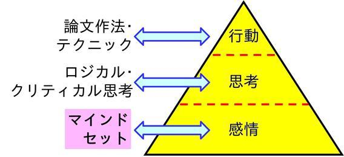
図16 行動･思考･感情の関係
基本になるマインドセット
マインドセットとして「読者の負荷を下げるため」「読者の理解を助けるため」 をいつも意識しておこう．「はじめに」でも述べたように，伝えたいというエネルギーを論文に乗せよう．
モチベーションが上がらないから行動できないと思いがちだが，本質はこの逆である．最もつらいのは行動を始める瞬間だけで，すぐにこのつらさは消える．あとは思いのほかスムーズに行くものだ．行動するからモチベーションが上がる のだ．後にも述べるが小さな簡単な行動をとにかく始めよう．[33]
論文作成能力を向上させ，実際に学んだことを実行に移すには，「論文作成を達成すること」が自分にとって「快」であるという条件付けをされた思考パターンをもつ必要がある．この思考パターンをもつことが論文作法を知ることよりもはるかに大事である．これができていないと，本書に書かれていることはほとんど意味をなさなくなってしまう．「快」の条件付けを行うためにも，論文を書き終えたら達成感を十分味わい，自分をねぎらい，お祝い をしてもらいたい．一つ一つ達成できた自分を祝い，達成感をもつことが次の段階へのモチベーションにもなってくれるそして，「快」の条件付けをともなうイメージとともに執筆を進めるとよい．[33--36]
早めに始めて少しずつコツコツやろう
早めに始めよう．その代わり少しずつ進めばよい．1文だけ書くとか，セクションタイトルを一つ決めるとかいうように，心理的に負荷のない程度まで進行の目標を下げる（これは人による）．論文を作成する行程を多くの段階に分割 して考えよう．11.1節 で示したものも行程が分割されているが，もっと細かく分割してもよい．やってみてつらいと感じたら一度にこなす量を減らしてもいい．完全に止らなければOKだ．とくに最初はとてもゆっくりでいい．[36]
本書に書かれていることの実践は，自分のこれまでの論文作成パターンと異なる部分もあるだろう．人間の感情，とくに潜在的な部分（潜在意識）は変化を嫌う． 論文作成を一気にやろうとすると，変化が大きすぎて動けなくなり，返って進みにくくなる．進められない自分を責めてもっと進みにくくなる悪循環に陥ることもありうる．行動の変化も潜在意識の抵抗を受けないように少しずつ，がコツだ．本書の内容もゆっくりと習得していけばいい．[36,37]
先延ばしにするほうが，実際にやるよりもはるかに精神的にも物理的にもエネルギーを消耗する ことになることを自覚すること．先延ばしにすると，未完了からくる不安に襲われて疲れるし，遅く始めれば焦って論文を作成しなければならないので，論文作成時の負荷も増大してしまう．[38]
少しずつやるにはシステム化･ルール化して習慣 として進めるようにするのが有効だ．やり方の例としては，タイマーを使ってまずは5分とか決めておき，その時間だけ文書作成に取り組もう．慣れてきたら時間を10分，15分と伸ばしたり，10分を2サイクルにしたりしていこう（集中力の持続からみて1サイクルの上限は30分）．自分がやると決めたことを毎日コツコツやりとげられると，自分にもできたという自信･充実感につながる．さらに，続けていくといつのまにか大きく進んでいたことに気付く．これがさらなる自信と充実感をもたらす．そしてコツコツやるのがもっと好きになる．このような好循環を築こう．
さらに，完全に一定のペースで進めないといけないわけではない．三日坊主で四日目に休んでも五日目に再開すればいい．急な予定や体調不良でできない日が出てきてもリカバーできるルールにしておくと続きやすい．たとえば，あえて週に1日は休んでいいようにしておくとか，朝が無理なら夜にやってもいいようにしておいてもいい．
「せっぱつまらないとダメ」というのは思い込みであると認識すること．ほとんどの人はせっぱつまると，精神的に不安定になり，行動の質が落ちてしまう．[39]
マイナス感情を受け入れよう
自分が完璧主義に陥っていないか気をつけよう．完璧主義は行動を妨げるので，ある意味最低の基準だ ．様々な恐怖が完璧主義を生み出し，一度で，完璧でなければやらないほうがましと考えてしまい行動を先延ばしにさせてしまう．論文を作成する上では，高い水準を常に守らなければいけない恐怖，批判の恐怖，ミスする恐怖，拒絶の恐怖などに襲われることが考えられる．恐怖を克服するには，まず自分がどんな恐怖を感じているのかを認識する．そして最悪の事態が実現したらどうなるか想像してみるとよい．[33,39,40]
完璧な論文など存在しないことを認識する．自分にとっての完璧さは他人にとってそれほど価値がないことが多い ことも認識しておく．本書の意図からは本末転倒な言い方になってしまうが，本書の内容がある程度実践できれば十分である．わかりやすい論文を書くための絶対的方法は存在しないのだから．
ミスのない論文を書ければ理想だが，自分で自分の論文を編集するのには限界がある．内容としてわかりやすい論文が作成できれば，多少のスタイルのミスは大して問題にならない．完璧な論文を目指して細かなことを気にしすぎるよりも，読者にわかってもらえる，論文として成功したものを目指そう．
一般には否定したい，目を背けたい自分を責めるとか無価値感といった自分のマイナス感情や先延ばしなどの行動パターンと向き合ってみよう．否定したくなる感情パターンを「自分はマイナス感情に陥っているな，こんな感情を味わってみたかったんだな」と客観的に受け止め てみよう．しばらくして落ち着いてきたら，「そこまで感じる必要はないな」と気持ちを切り替える とよい．マイナス感情を消さないといけないと思ってしまうとかえって消えない．マイナス感情なんてないほうがいいのでは，と思うかも知れないがマイナス感情も私達に与えられた立派な機能だし，これがあるからこそできる学びや役割がある のだ．これを読まれている方はメンタルやスピリチュアルに興味がある方もいるかもしれないが，これらを学んでもマイナス感情が生じなくなるわけではない．マイナス感情は消すのではなく，巻き込まれ続けないようにすればいい． プラス感情は大事だが，表面上マイナス感情に陥らないように振る舞って（マイナス感情にフタをして）プラス感情しかないようなふりをし続けるのは自己否定をしているようなものなのでつらいだろう．図17に示すように，人間の感情はプラスとマイナスを行ったり来たりするものだと思うくらいでいい．マイナス感情に陥っても自然回復する能力が我々には本来備わっている．マイナス感情･行動も自分を守るために必要な側面もある．同じ過ちを繰り返さないように今までの人生で経験した失敗から無意識のうちに学習した結果でもある．たとえば，先延ばしは慎重に判断しながらものごとを進めることにもつながるので絶対的に悪いことではない．ある思考･行動パターンには，一般的にポジティブにとられやすい面とネガティブにとられやすい面がある．両面をうまく生かせるようになろう．これに関連する学びを深めるには文献 [41--43] がお薦めだ．
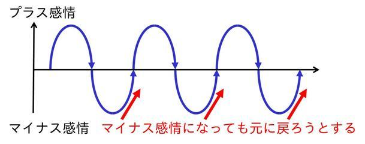
図17 感情の起伏
文章の書き方の学び方･実践の仕方は人それぞれ
人間には無意識の傾向として論理･理屈の面が出やすい人と，感情･感性の面が出やすい人 に分かれるといわれている．前者を人格タイプ（リアルタイプ･速攻成功タイプ），後者を霊媒タイプ（共感タイプ･じっくり成功タイプ）と谷口賢晋さんはよんでいる．100％片方に偏っている人はまずいないので，人格タイプでも感情･感性面が自然に出ることもあるし，霊媒タイプが自然と論理性を発揮することもある．自分がどちらになるかのチェック，解説の資料は次に挙げるリンク先にある．
■運命大逆転の成功法則 リバースマップ ，エタップ
■解説動画：人間の魅力を引き出す２つの方法 ，Genieframe
その人の魅力を最大限に引き出すには無意識に出やすいほうとは別の面を意識的に活用することが大切 になることが書かれている．このために文章の書き方の学習･実践の指針も人によって異なってくる．
人格タイプ寄りか霊媒タイプ寄りかはグラデーションで無数のあり方がある．人格タイプの人は論理の傾向が出やすいので文章の書き方の原理に注意が行きやすい．人によっては本書に載せた原理だけでは不十分と感じることもあるだろう．しかし本章でメンタル面を扱っているように，原理だけでは文章を書き進められないし，たとえ研究の論文でもテーマを決める根源は各自の感性に依存する．読み手に理解してもらいやすい論文にするには論理がしっかりしていることは重要だが，フォントの選択，読みやすいようにひらがなを使うバランスを考える，見やすく理解しやすい色使いや図の形状を選ぶ，といったデザイン面で感性は必要となる．共感されやすい文章にしたければなおのこと感情や感性も重要になる．したがって，人格タイプはある程度文章の書き方の原理がわかったらその後はこの原理に固執しすぎないことが成功の鍵になる．ただ，本書でも書いてきたように論理的な表現方法は言葉にしやすいが，感性の生かし方は論理的に言葉にしきれないので（他人が「ああしろ」と言った時点で本人に独特な感性の作動を妨げうる），具体的に決まった指針がないのは教育の観点からは難しい......．
一方，霊媒タイプの人は感覚的に文章を書く方向に無意識に行きやすい．感性はもちろん大事だが，それだけだと論理性が足りないので他人に理解してもらえる文章になりにくいだろう．本書でこれまで示してきた文章を書く原理を意識的に学びつつ，実践に取り入れていくと周囲にわかってもらいやすい文章が書けるようになる確率が上がる．
要は論理と感性の両面を使えるとその人の魅力が最大限発揮される ということだ．ちなみに筆者は人格タイプの傾向が強い．だからこそ感情・感性面にも意識的に取り組む必要があるため本章を『Stylebook』に書いている．あなたはどちらの傾向が強いだろうか？ぜひチェックしてみてほしい．
以上，論文を書く上で関わると思われるメンタル面について書いてきた．思い込みや恐怖を克服し，思考パターンを改善することが大切だが，これには時間がかかる．文章を書くことの本質に関わる部分でもあり，本当に能力を向上させるためにも自分のメンタル面とじっくり向きあうようにしよう．
■メンタル面が行動の土台になる．
■「読み手･相手のため」に論文を書こう．
■行動を分割し，小さなことから始めよう．
■システム化･ルール化して習慣にしよう．
■自分の感情を少し客観的に感じてみよう．
■論理と感性のどちらが出やすいかは人によって違う．
■無意識に出やすいほうとは反対側を意識して使うにしよう．
■論理と感性の両方を使って論文を書こう．
Step 1
論文を書くステップを恐怖感がわいてこない量まで分割しよう．
Step 2
Step 1で考えた分だけ論文を書き進めよう．まだ無理ならもっと工程を分割しよう．
Step 3
論文を少しでも書き進められたら自分を褒めよう．ちょっとしたご褒美を自分にあげてもよい．
本書では，論文の構成方法，表記上の注意点，日本語の文法上の注意点，論文の各構成要素の内容，文書作成ソフトの使い方，論文を作成･編集する手順や論文作成時のメンタル面への配慮について述べた．本書から，読み手のことを考えて論文を書くという意識を少しでももってもらえれば幸いである．ただ，多岐にわたる盛りだくさんな内容で圧倒される方もいると思う．すぐに全てができる必要はない．少しずつ，すぐにできるところから始めよう．さらに論文全体をふかん的にとらえ，本文全体が主題につながるようにしよう．また，大学での教育という面でも，本当に大切なことを学生に確実に身につけてもらえる仕組みづくりに貢献できればと願っている．さらに，論文作成技術について学びたければ，本書の引用･参考文献も読んでみてほしい．
文章を書くことは奥が深い．本書は論文作成法の目安にはなっているが，完全に固定された絶対的な方法というのはないと思う．絶対的な方法を求めると，方法を探ること自体に固執することになって文章を書くことへのブロックにもなりうる．これでは本末転倒だ．文章を書くことにも語りえぬ領域があるのだろう．このような神秘的な領域があるのを受け入れ，ある程度原則を学んだらどんどん文章を書いていくほうが合理的であると筆者は考えている．神秘的なものを受け入れる合理性は安冨歩さんの『合理的な神秘主義』 [44] を参照してほしい．結局は一人一人が固有にもっている伝えたいことを，その人独自のエネルギーと表現で伝えていくのがよい と考えている．これは田久保剛さんの『相手の心を開き信頼される講師になるポイント 』の動画が大いに参考になる．だから，論文も含めた文書作成についての学びには終わりはない．学び，そして実践し続けることの大切さを述べて，本書の締めとしたい．
謝辞を最後に記しておきます．本書を読んで活用してくれている学生の皆さん，ありがとうございます．大学を出て，自分が指導する側になってもこれを生かしてもらいたいと思っています．ブログのサイトからこのテキストの試作版をダウンロードしてくれている方がいるのもとても嬉しいです．動画をご覧いただいた方，コメントをいただいた方にも感謝いたします．高度なコメントに私自身も多いに学びを得ています．このテキスト･論文作成動画講座にはそのコメントも反映させていただいています．ありがとうございました．そして本書に素敵な表紙を作ってくれた妻の慶子に感謝します．
論文作成技術をより深く学びたい場合は，まずは，[1]･[4]を読むことを勧める．英語だが，わかりやすい文章の本質が説明されている[5]･[11]も非常に参考になる．またメンタル面では，文章を書くことにかぎらず行動力を高めるの[33]がお薦めだ．興味をもった本をさらに調べやすいようにAmazonへのリンクも合わせて載せておく．ハイパーリンクが張られているものは2019年6月7日にいずれも閲覧･ダウンロード可能なことを確認している．
[1]
木下是雄；理科系の作文技術，中央公論新社 (1981)．
Amazon.co.jpの紹介ページ
Kindle版のAmazon.co.jpの紹介ページ
[2]
若林敦；理工系の日本語作文トレーニング，朝倉書店 (2000)．
Amazon.co.jpの紹介ページ
[3]
岩淵悦太郎；悪文，第3版，日本評論社 (1979)．
Amazon.co.jpの紹介ページ
Kindle版のAmazon.co.jpの紹介ページ
[4]
中島利勝，塚本真；知的な科学･技術文章の書き方，コロナ社 (2000)．
Amazon.co.jpの紹介ページ
[5]
Williams，J. M. and G. G. Colomb；Style：The Basics of Clarity and Grace，4th ed.，Longman (2010)．
4th ed.のAmazon.co.jpの紹介ページ
（最新版はWilliams，J. M. and J. Bizup；Style：The Basics of Clarity and Grace，5th ed.，Longman (2014)）
5th ed.のAmazon.co.jpの紹介ページ
5th ed. Kindle版のAmazon.co.jpの紹介ページ
[6]
三浦順治；英語流の説得力をもつ日本語の文章の書き方，創拓社出版 (2009)．
Amazon.co.jpの紹介ページ
[7]
高橋フミアキ；150字からはじめる「うまい」と言われる文章の書き方，日本実業出版社 (2011)．
Amazon.co.jpの紹介ページ
[8]
船川淳志；考えるプロが明かす「思考の生活習慣病」克服法，講談社 (2004)．
Amazon.co.jpの紹介ページ
[9]
リチャード･ポール，リンダ･エルダー（原著），村田美子，巽由佳子（訳）；クリティカル･シンキング 「思考」と「行動」を高める基礎講座，東洋経済新報社 (2003)．
Amazon.co.jpの紹介ページ
[10]
葦原瑞穂；黎明（上巻），太陽出版 (2001)．
Amazon.co.jpの紹介ページ
（2017年に新版が出ている）
新版のAmazon.co.jpの紹介ページ
[11]
Strunk，W. Jr. and E. B. White；The Elements of Style，4th ed.，Longman Publishers，New York，USA (2000)．
Amazon.co.jpの紹介ページ
（https://www.crockford.com/wrrrld/style.html
でも初版全文が無料で読める）
[12]
本多勝一；日本語の作文技術 新装版，講談社 (2005)．
Amazon.co.jpの紹介ページ
[13]
石黒圭；文章は接続詞で決まる，光文社新書 (2008)．
Amazon.co.jpの紹介ページ
Kindle版のAmazon.co.jpの紹介ページ
[14]
高木隆司；理科系の論文作法，丸善 (2003)．
（大学では電子書籍で読める場合あり）
Amazon.co.jpの紹介ページ
[15]
高橋佑磨，片山なつ；伝わるデザイン 研究発表のユニバーサルデザイン，フォントの選び方，http://tsutawarudesign.com/yomiyasuku2.html
．
[16]
矢吹太朗；Inquisitor，Wordで作った文書が素人臭くなる理由（その5），http://blog.unfindable.net/archives/712
．
[17]
黒木玄；日本語 LaTeX を使うときに注意するべきこと，http://www.math.tohoku.ac.jp/~kuroki/LaTeX/howtolatex.html
．
[18]
中道真木男 編集；ベネッセ新修国語辞典，第二版，ベネッセコーポレーション (2012)．
Amazon.co.jpの紹介ページ
[19]
文部省，日本化学会；学術用語集 化学編，増訂2版，南江堂 (1986)．
Amazon.co.jpの紹介ページ
[20]
日本エディタスクール；日本語表記ルールブック 第2版，日本エディタスクール出版部 (2012)．
Amazon.co.jpの紹介ページ
[21]
化学工学会論文誌編集委員会；論文投稿の手引き，化学工学会 (2003)．
[22]
Dodd，J. S.，ed.；The ACS Style Guide：A Manual for Authors and Editors，2nd ed.，American Chemical Society，Washington，DC，USA (1998)．
2nd ed.のAmazon.co.jpの紹介ページ
（2006年出版の3rd ed.もある）
3rd ed.のAmazon.co.jpの紹介ページ
（2019年に3rd ed.の日本語版も出ている）
3rd ed.日本語版のAmazon.co.jpの紹介ページ
[23]
ドナ･M･ウォン（著），村井瑞枝（訳）；ウォールストリート･ジャーナル式 図解表現のルール，かんき出版 (2011)．
Amazon.co.jpの紹介ページ
[24]
福井健策；18歳の著作権，筑摩書房 (2015)．
Amazon.co.jpの紹介ページ
Kindle版のAmazon.co.jpの紹介ページ
[25]
CAplus Core Journal Coverage List，CAS，American Chemical Society，https://www.cas.org/support/documentation/references/corejournals
．
[26]
Web of Science；Journal Title Abbreviations，https://images.webofknowledge.com/images/help/WOS/A_abrvjt.html
．
[27]
独立行政法人科学技術振興機構；SIST 科学技術情報流通技術基準，SIST 08 学術論文の執筆と構成 (2010)．
（http://jipsti.jst.go.jp/sist/perusal/index.html
で無料配布）
[28]
第一資料印刷株式会社；「未亡人」や「みなしご」に注意！？，機関誌作りブログ．
http://www.dsp-blog.jp/periodical/archives/002269.html
[29]
伊藤潔人；インストラクターのネタ帳，Word ショートカットキー一覧，https://www.relief.jp/docs/000230.html
．
[30]
研究室生活のための備忘録；数式エディタ，https://seesaawiki.jp/w/ckajz815/d/%bf%f4%bc%b0%a5%a8%a5%c7%a5%a3%a5%bf
．
[31]
高橋佑磨；ささらほうさら，半角記号の使い方，http://yumatakahashi.blogspot.jp/2012/09/blog-post_12.html（リンク切れ）．
[32]
ロバート・B・チャルディーニ（著），社会行動研究会（翻訳）；影響力の武器 [第二版] ―なぜ、人は動かされるのか，誠信書房 (2007)．
第二版のAmazon.co.jpの紹介ページ
（2014年に第三版が出ている）
第三版のAmazon.co.jpの紹介ページ
[33]
ゆうきゆう；やりたいことをぜんぶ実現する方法，海竜社 (2013)．
Amazon.co.jpの紹介ページ
[34]
西田文郎；No.1理論―「できる自分」「強気の自分」「幸せな自分」，三笠書房 (2006)．
Amazon.co.jpの紹介ページ
[35]
ジェームス･スキナー；図解 成功の9ステップ，中経出版 (2010)（CD-ROMの内容）．
Amazon.co.jpの紹介ページ
[36]
ロバート･マウラー（著），本田直之（監訳），中西真美（翻訳）；脳が教える！1つの習慣，講談社 (2008)．
Amazon.co.jpの紹介ページ
[37]
内田博史；トレード日記 笑える株式投資ブログ CMB研究所，2012年10月15日の記事，http://www.cmb-fund.jp/2012/10/267210.html
．
[38]
播磨早苗；目からウロコのコーチング―なぜ，あの人には部下がついてくるのか？，PHP研究所 (2004)．
Amazon.co.jpの紹介ページ
（文庫版が2008年に出ている）
文庫版のAmazon.co.jpの紹介ページ
Kindle版のAmazon.co.jpの紹介ページ
[39]
Emmett，R.（原著），中井京子（訳）；いまやろうと思ってたのに... かならず直る―そのグズな習慣，光文社 (2001)．
Amazon.co.jpの紹介ページ
（2004年に文庫版も出ている）
文庫版のAmazon.co.jpの紹介ページ
[40]
Basco，M. R.（原著），町沢静夫（訳）；無理しないで賢く生きる―努力が報われる人、空回りしてしまう人，三笠書房 (2000)．
Amazon.co.jpの紹介ページ
[41]
神田昌則；成功者の告白，講談社 (2004)．
Amazon.co.jpの紹介ページ
（2006年に文庫版も出ている）
文庫版のAmazon.co.jpの紹介ページ
[42]
犬飼ターボ；オレンジレッスン，徳間書店 (2006)．
Amazon.co.jpの紹介ページ
[43]
田久保剛；読むだけでアセンション！『現状を変える7つのヒント』，CTPeak．
（無料メールセミナー，https://ctpeak.com/lp/mailseminar.html
から登録できる）．
[44]
安冨歩；合理的な神秘主義―生きるための思想史，青灯社 (2013)．
Amazon.co.jpの紹介ページ
本編では論文作法について説明してきた．論文に限らず，自分も周囲もわかりやすい文書を作成できるようになることは，仕事でのコミュニケーションを円滑にし，仕事を効果的に進めるのにつながる．最初は，先輩に自分の文書をチェックしてもらう立場だが，次第に後輩の文書を自分がチェックする側になっていく．情報を自分から周囲に伝えるだけではなく，次第に周囲から情報を吸い上げる必要も出てくる．以上のようなことから文書作成の指導をする必要な場面にいつかは巡り合う．ただし，よい文書の作成ができることがそのままよい文書作成指導ができることになるとはかぎらない．文書作成についてだけでなく，自分があることをこなすのと，それを指導することには別の能力を要求される 面がある．よって，就職した後まで考えた長期的な視点に立つと，文書作成指導法についても学んでおくことには意義がある．文書作法に関する書籍はたくさんあるが，文書作成の指導法まで書かれた書籍はまずないため，この付録で文書作成の指導面で心がけるとよい点を述べることで，テキストとしてのオリジナリティを高めるねらいもある．ある意味理想論になっているところはあるが，ここで述べたことを少しでも指導する側に回ったときに意識してもらえれば幸いだ．
なお，今は学ぶ側だから関係ないと思う方もいるかもしれないが，学ぶ側が教育によって魂にフタをされたり無価値感を植えつけられたりするのを避けるのにも役立つ内容になっている．
■論文を書くことに対して快の感情をもってもらうことを最優先 しよう．現状では論文がわかりにくいものだったとしても将来もそれが続くわけではない．快の感情があれば，論文を書き続けることができ，そのうちに能力が向上する可能性が多いにある．
■文書を作成してくれた人をねぎらおう ．ほめるのには条件が必要で，無理にやると逆効果な面があるが，ねぎらうことはやり遂げてくれさえすれば無条件にできる．
■少しでもいい点があったら，その点をほめよう．ほめられれば快の感情が芽生える．そうすれば次はもっとよくしようとしてくれるはずだ．ただし，ほめるのも価値観のあらわれの一つだ．私たちのすべての発言は個人の限られた経験や感情に基づく価値観から来ること，だから偏りを完全になくすことはできないのは認識しておこう．
■改訂の助言の後には励ましの言葉をかけよう．優しく言ったつもりでも相手は痛烈に批判されてと感じているかもしれない．今の状態が永続するわけではない．相手の将来への可能性を信頼 しよう．
■コメントされること自体なんらかの不快感を相手にもたせてしまう可能性があることを常に認識しておこう．苦労して作り上げたものに文句を言われて面白く思う人はそうそういない．とくに慣れないうちは大幅な改訂を求めることもあるだろうが，そのときは細心の注意を払おう．あくまで書いた本人の主張をより通りやすくするための改善 であることを告げよう．
■相手自身を変えてやろうとか，直してやろうと思わないこと．他人が人を変えることは本質的に不可能である．変わるとすれば本人が本人の意識で変わるしかない．できないことをしようとすることを手放すのが教える側，そして教わる側も心理的負担を軽くするのにつながる．
■教えたいことを受け入れてもらいたければ相手を受け入れよう．そして相手がどんな知識をもち，人生を歩み，現象認識をしているかを考え，受け取りやすい表現 で伝えよう．
■文書作成能力は後天的に身に着けるものであるから，最初はできないのが当たり前である．できていなくても強い否定の言葉を投げかけない（不快の感情が芽生え成長を止めてしまい返って逆効果）．人は自分ができることができない人を非難しがちだが，自分ができることが他人もできるとはかぎらない事実を受け入れ，できないことを許そう．万能な人はいないし，できないことがあっても他のことができれば何とかなる ものくらいつもりで，心の余裕をもった状態で指導するといい．
■指導をしていると相手のできないことにどうしても目が向いてしまう．学びを終えた特定の状態を完全，そうでなければ不完全と思いがちだが，学びの過程にいることも含めて私たち人間は完全だ．何かを習得しきっていない，できないとしても私たちは皆大丈夫な存在だ．相手の欠点にフォーカスしていると感じたら，現状の不完全さから完全な過程にあることに視点を修正する「赦し」 を実践しよう．[45]
■相手ができるまで粘り強く教え続けよう．教わる側が一度に理解できる量が限られている ため，同じ過ちを繰り返してくるものだ．しかし，それを「一度言っただろ」と非難するより，繰り返しどう表現すべきかを説明する．人間はそう簡単には変われない．教える側自身も簡単に変われないのに，教わる側にすぐ変わるように求めるのは理不尽 なことであることを心に留めておこう．訓練に訓練を重ねることが大切だ．ゆっくりと育ってくれればいいくらいの気持ちでいるとよい．
■上記のように，伝えても伝わらないことはある．「伝えた」ことで教える側の義務はすべて終わったわけではない．「伝わる」「行動が変わる」ことに目を向けて指導しよう．
■文書の細部の表現チェックだけでなく，全体の構成やスタイル･表現の一貫性にも気を配ろう．
■論文やレポートに他者の著作物（とくに画像）を無断で転載していたら，9.7節 に示した引用の用件，大学の内と外で複製できる範囲が違うので外部に公開されうる文書では許諾がないと転載ができないことを伝えよう．大学教員が講義で示す教材は，教育上の複製の特例により，許諾なしで他者の著作物が使える許容範囲が一般より広い（参考：学校その他の教育機関における著作物の複製に関する著作権法第 35 条ガイドライン ，著作権法第 35 条ガイドライン協議会）．たとえば，教員の著作物ではない書籍の一部の複写を少人数のゼミ資料として著作者に許諾なく配布することは，大学内部ではできるが商用のセミナーではできない．このこともあり，学生さんの著作権に対する意識は希薄になりがちだ．
■文書の表現を直すだけでなく，なぜ直す必要があるのか，直す方針も説明する ようにする．教わる側もなぜ直されたか知りたいものだ．それに表現そのものよりも表現する方法やその表現に至る考え方のほうが大切だ．
■最初のうちは，他人に伝わりやすいようにというよりは，自分が書きやすいように文書を作成しがちなので，伝わりにくい点についてはどういう意味なのか，より具体的に言うとどうなるか，1ステップずつ論理を展開するとどうなるかなどと書き手に質問を投げかけ，書き手に自分の考えを整理させて説明してもらう． そして指導する側も納得できる説明を書き手ができたら，「今説明してくれたように書いてください」と指示すればいい．指導される側に答えはある ものだが，それは最初のうちは曖昧であることが多い．具体的答えを自分で出せるように手助けするのが指導する側の役目だ．このやり方だと最初のうちはとくに時間がかかる．しかし，教える側が表現を与え続けるよりも，長期的にみると自立して伝わりやすい文章を書くようにさせるのには効果的だと思う．短期の非効率に足を引っ張られて長期的な効果を犠牲にしないようにしたいものだ．
■教える相手の成長によって教える側の姿勢は変わっていい． 母性的な優しさや暖かさに満ちた教育から父性的に自立を促す教育へシフトしていくのが一つの流れだ．最初は論文の書き手としては赤ん坊のようなものだ．いきなり厳しい言葉で教育しても萎縮するだけになるかもしれない．詳しくは文献 [41] pp. 208--233を読んでみてほしい．
■感情面への影響を考慮した上で，まずいところはまずいとはっきりと伝える．初心者の場合は，とくに教え込まなくてはならない色合いが強くなるのはやむをえない．表現もこちらから提示することも多いだろう．ある程度文書が作れるようになってくれば，相手に質問しながら本当に伝えたいこと，伝わりやすい表現を聞き出しながらよい文書にさせていくとよい．ティーチングとコーチングのバランスを相手の状況に合わせて変えていこう．このために誠実な関心を相手に寄せることが必要になる．誠実な関心をせる例は文献 [46] のPart 2，1章を参照してほしい．教えるときも「相手の状況を理解する，相手のために」 が土台になる原則だ．
■指導している学生の文書の出来に怒りすら覚えることもあるかもしれない．だが，それを学生に向けているだけでは問題は解決しない．怒りを感じるのは，相手によくなってほしいという意欲の一面から出てくるものだから，否定する必要はない．怒りの感情に対処する方法としてはまず，ここまでも述べてきた心理的な負荷を下げるマインドセットを身につけよう．また12章 でも説明した「自分は怒りを感じているな」と自分の感情を客観的に受け止め ，しばらくして落ち着いてきたら，「そこまで感じる必要はないな」と気持ちを切り替えるのを実行してみるのもよい．さらに自分に湧き上がる感情の元はすべて自分の内側にある． 外に見える他人の言動はきっかけにすぎない．怒りが生じるのは怒りたくなる内面をもった自分がいるからだ，というのを知っておくと，怒りを周囲に撒き散らすのを押さえるのに一役かってくれるだろう．怒りの原因は自分の内側にあるので他人を攻撃しても根本的な解決になっていないということだ．
■何かを教えなければ指導したことにならないというわけではない．上記の点にもあるように相手に答えを出せるようになってもらうのが本当の目的 なので，自分が伝えるよりも相手がこちらに伝え，教える側が聞いている時間が長くてもいい．自分のもつものを押し付けるのはただの教える側のエゴになってしまい，教える側も得るものが少ない（場合によっては悪影響しか残さない）ことになるから気をつけよう．
■指導法に細心の注意を払うのは，きつい指導によって指導を受ける側に不安や恐怖といった感情を生じさせたり，自尊心を損なわせたり（自分はだめだというあきらめにつながりうる）させないためである．不安･恐怖･あきらめなどの不快な感情をもたせてしまうことは行動にブロックをかけてしまう ことを認識しよう．不快なことには力を注げない．これでは本来の目的である自立して行動する ことからも遠ざかってしまう．理不尽に厳しい言葉で理屈を頭でわからせても，感情が不快と判断してしまうと指導を受ける側の行動に反映されない．人間は理屈よりも感情に強い影響を受けて動く ものと心得ておこう．
■一つ上の項目とも関連して，大学の教員は競争のステージの成功者であることが多く，他人を恐怖と罪悪感でコントロールしようと無意識のうちにしてしまうことがある [47]．明確な悪意があるわけではない．むしろ良かれと思ってやってしまう．このようなパターンに自分がはまっていないか注意しよう（自分が教育を受けている段階でも，自分のメンタルを守るためにこれを知っていることは役立つだろう）．また，これからの社会に対応したマネジメントのあり方としても恐怖と罪悪感に依存した方法から脱却していくのが望ましい [48]．恐怖と罪悪感といった外発的動機ではなく，内発的動機で動く人を育てていく ようにしよう．
■上記をふまえて自主的に繰り返し学んでもらうためにはどうすればよいかを考え，実践に移していこう．このようなテキストを作成しているのも，文書作法を逐一口頭で説明するのは教わる側も教える側も精神的･物理的負荷が大きいため，学習の効果を高めるためというのもある．
■感情･脳･能力の関係 [34] や教育･コーチング [38,49--52] についても学んでおこう．参考文献にもいくつか挙げておく．
■教えながら文書作成法･指導法について改善を続けていくことを心がけよう．文書作成法について教える側も学び続けよう．受け入れられやすい日本語の使い方がまとめられた書籍 [53] や文章校閲の練習になる本 [54] がお薦めだ．文献 [53] の出版元であるNHK放送文化研究所がWebで公開している「放送用語委員会」の資料 も伝わりやすい言葉に対する感度を高めてくれる．この心がけがあれば後輩に指導しているようでも，こちらが得ることも多いはずである．後輩は後輩なりに懸命に文書を仕上げてくれる．そのことに感謝しよう．
上記の内容を読むと教わる側に甘く，教える側に厳しくみえると思う．指導法について指導されることはまずないからそう感じるかもしれない．しかし，上記の方針は教わる側を甘やかせというものではない．指導すべきことはきっちり伝えていい．しかし，その伝え方は相手の文書作成の上達，さらには自立に役立つように意識しよう．教える側･教わる側の感情の働きに留意して丁寧に対応していこう．
また，教える側に厳しくという点では博士課程の学生は将来大学の教員になる可能性が高く，ビジネス（教育はサービス業と言ってもいい）として教育に携わることになるからというのもある．国公立の大学では法人化によりビジネスの側面がより強調されていくと思う．ビジネスの本質は価値と価格の交換にある [55]．教える側は指導を行うことで価値を提供しているし，学生（のご両親）は授業料という形で価格を提供している．教える側と教わる側でどちらが偉いとか上ということはない（もし学生さんがここを読んでいたら，こっぴどく叱られても自分を責めなくていい ということでもある）．価値の交換をしているという意識をもてば，本当に提供すべき価値は何なのか，価値の提供になるような指導をするためにどうすればいいかを考え，工夫するようになる．指導の方法には決まった答えがなく，教わる側･教える側･指導の状況によって柔軟に対応すればいい．しかし，単なる経験と勘にだけに頼るだけ価値を確実に提供していくには心もとないので，継続的な学習と普段の指導時に学びを実践することで指導するスキルを高めていこう．
最後に，最も教育において根本になることを書いておく．感性を生かした表現をすることは8章 や12章 でも触れたが，教育が本人の感性の否定や外から与えられた規範の押し付けばかりになると本人の感性が表に出にくくなってしまう．感性が呪縛される過程とそこから脱してその人本来の感性を取り戻す事例が文献 [56] に書かれている．本来の感性が働いていれば，自分の行動からフィードバックを得て必要な能力を身につける学習のサイクルを自分で回せる． 本来人間は自立して学び，行動できる．感性が働いていれば，コピペで終わらせずに本人独自の表現を自然とするようになる．自立できない原因として，感性の呪縛は大きな部分を占めていると私も感じている．自分の感覚で動いていて責められてばかりでは自分の感覚を使おうとは思わなくなる．結果として外部からさらに規範を求める悪循環になってしまう．コピペも自分の感性を使わずに外に答えを強く依存する傾向の一つだ．教える側はフィードバックにつながることを「提示」するだけでいい（本当に必要なら自然と本人は「受け取る」）．人間が本来もっているこの性質を認識し，信頼することが教育する側に最も必要とされていることかもしれない．
■指導される側が文書作成に快の感情をもってもらえるように，前向きに向き合い続けられるように指導することを心がけよう．
■人間は簡単には変われない．教育の成果はゆっくりと現れる．
■指導すべきことはきっちり伝えていい．しかし，その伝え方は相手の上達や自立の役に立つように意識しよう．
■教える側･教わる側の感情の働きに留意して丁寧に対応していこう．
■後輩は後輩なりに懸命に文書を仕上げてくれていることに感謝しよう．
■教わる側の現状に不完全性を感じたら，完全な学びの過程にあると視点を修正する「赦し」を行おう．
■自分の行動からフィードバックを得て必要な能力を身につける学習サイクルを自立して回せるという人間本来の能力を信頼していい．
■教わる側自身の感性を生かすように促そう．
Step 1
部下が文書を仕上げてきたらまずはねぎらいの言葉をかけてみよう．
Step 2
部下や学生が理解しやすいようにするにはどのように言葉をかけたらいいかを1分でいいので考えてから指導に入ってみよう．
参考文献
[45]
ヘレン シャックマン；奇跡講座 ワークブック編、中央アート出版社 (2012)．
Amazon.co.jpの紹介ページ
[46]
Carnegie，D.，山口博；人を動かす 新装版，創元社 (1999)．
Amazon.co.jpの紹介ページ
Kindle版のAmazon.co.jpの紹介ページ
[47]
犬飼ターボ；DREAM，飛鳥新社 (2007)．
Amazon.co.jpの紹介ページ
[48]
天外伺朗；マネジメント革命 「燃える集団」を実現する「長老型」のススメ，講談社 (2006)．
Amazon.co.jpの紹介ページ
（2011年に講談社プラスアルファ文庫から文庫版，2014年にKindle版が出ている）
文庫版のAmazon.co.jpの紹介ページ
Kindle版のAmazon.co.jpの紹介ページ
[49]
親野智可等；「叱らない」しつけ，PHP研究所 (2006)．
Amazon.co.jpの紹介ページ
（2010年に文庫版，2011年にKindle版が出ている）
文庫版のAmazon.co.jpの紹介ページ
Kindle版のAmazon.co.jpの紹介ページ
[50]
落合博満；コーチング―言葉と信念の魔術，ダイヤモンド社 (2001)．
Amazon.co.jpの紹介ページ
Kindle版のAmazon.co.jpの紹介ページ
[51]
吉田典生；なぜ「できる人」は「できる人」を育てられないのか？，日本実業出版社 (2005)．
Amazon.co.jpの紹介ページ
（2013年にソフトバンク文庫から文庫版が出ている）
文庫版のAmazon.co.jpの紹介ページ
[52]
松本幸夫；パワーコーチング，成美文庫 (2007)．
Amazon.co.jpの紹介ページ
[53]
NHK放送文化研究所 編；NHKことばのハンドブック 第2版，NHK出版 (2005)．
Amazon.co.jpの紹介ページ
[54]
日本語力向上委員会；日本語お稽古帳，毎日新聞社 (2012)．
Amazon.co.jpの紹介ページ
[55]
板倉雄一郎事務所；Deep KISS 第57号「永続性と企業価値」，http://www.yuichiro-itakura.com/essay/deep_kiss/deep_kiss57.html
．
[56]
深尾葉子；魂の脱植民地化とは何か，青灯社 (2012)．
Amazon.co.jpの紹介ページ
文書中の図の作成や，プレゼンテーションのスライドやポスター制作ではデザインも重要になってくる．ここではフォントや配色･レイアウトといったデザインに役立つ情報やデザインの基本原則とそれを学ぶ方法をまとめておく．
本文中でもフォントの選択については少し触れた．論文･レポートといった通常の文書は文字が多くフォントの塊といってもよい．文書の使い勝手のよさはフォントの選択で大きく変わる．また，プレゼンテーション，ポスターやチラシ，Web Siteではよりデザイン性が重視され，要点にインパクトを与えることが重要だ．学会発表のときは他人のPCでプレゼンをすることもありうるので，Windowsに標準搭載されているような汎用性のあるフォントを使うほうがよいこともある．フォントについては [15,57,58] で詳しく学べる．
以下によく使われそうなフォントを並べている．先頭に○をつけたものは入手が容易でおすすめのフォントである．Microsoft Officeのデフォルトのフォントをそのまま使うことを卒業 して，より見栄えのよくなるフォントを可読性 （長い文章の読み続けやすさ，明朝･セリフ体はこれが高い傾向），視認性 （一見した文字の認識のしやすさ･インパクト，ゴシック･サンセリフ体），汎用性 のどれが重要かを考えて選ぶようにしよう．たとえば，学会で主催者側の用意したPCで発表する場合，ファイルを他人と共同で作成する場合（読んでもらうだけならフォントを埋め込んでPDFにすることもできる）は，どのPCでも入っているフォントを優先して選ぶ必要がある．
ちらしやWebサイトの見出しに使うようなExtraboldやBlackと呼ばれる非常に太い（ウエイトの高い）フォントはWindowsにはほとんどインストールされていないので，下記のリスト中のサイトからダウンロードしよう．
Cドライブの直下のWidowsファルダ中にあるFontsフォルダにフォントのファイル（例：IPAex明朝ならipaexm.ttf）をコピーすれば使えるようになる．
◆英数字用Serif体
○Times New Roman （汎用性は最も高い）
○Palatino Linotype （本文でもお薦めしたフォント）
○DejaVu Serif （フォントの幅と高さが日本語のフォントに近いのでよくなじむ，好みで文字幅の狭いCondensedを使ってもいい，配布まで含めて商用･非商用で無料で使える，「Font Squirrel 」で入手できる）
○Noto Serif （日本語の明朝体となじみが良い，フォントファイル単体の販売でなければ配布まで含めて商用･非商用で無料で使える，入手先：https://www.google.com/get/noto/#serif-lgc ）
Garamond （線が細いので日本語フォントとなじみやすい，イタリックボールド体がない）
Century （Wordのデフォルト，イタリック体がないので論文には向かない）
◆英数字用Sans Serif体
○Segoe UI （VISTA以降のWindows標準搭載フォント，英語版Windowsのシステムフォント，視認性がよく，日本語フォントとの相性もよい）
○Verdana （メイリオとよくなじむ，英語文書のタイトル･見出しにも向く，ボールド体でインパクトも出せる）
○Calibri （Vista，Office 2007以降の標準フォント，視認性はよい，フォントが小さめなので日本語フォントとの相性は少し悪い）
○DejaVu Sans （好みで文字幅の狭いCondensedを使ってもいい，配布まで含めて商用･非商用で無料で使える，入手先 ）
○Noto Sans （日本語のCJK JPとなじみが良い，フォントファイル単体の販売でなければ配布まで含めて商用･非商用で無料で使える，入手先 ）
○Bitter （スラブセリフ体とよばれる分類に入る，インパクトを出すのに使える，配布まで含めて商用･非商用で無料で使える，入手先 ）
Arial （視認性は高くない，使い古されているのでデザイン性の高い文書には向かない，Macに標準搭載されているHelvetica Neueの類似フォント）
Arial Black （標準搭載フォントでインパクトを出したいときに）
Comic Sans MS （イタリックボールド体がない，使い古されたフォントなので注意）
○Trebuchet MS （英語文書のタイトル･見出し向き）
Tahoma （イタリック体がない）
◆日本語全角フォント
○メイリオ はVista以降のWindowsにシステムフォントとして最初からインストールされている．Windowsでも視認性の高い日本語のサンセリフ体が使えるようになった．太字はインパクトもある．英数はVerdanaに似ている．全角文字はイタリック体のデータもローマン体になっているため，全角文字だけ斜体表示ができない．
○IPAex明朝･ゴシック は，Windowsに最初からは入っていないが，情報処理推進機構のサイト から無料で入手できる（商用利用も可，条件を満たせば配布もできる）．MS系フォントより視認性がよく，英数字に使っても不自然さがあまりない．
○M＋OUTLINE FONTS は，ゴシック体だけの提供だが，太さの異なる字体が7種類も使える．インパクトを出したいときに便利なフォントだ．入手はこちらのページ から無料ででき，商用利用も再配布もできる．
○Noto Sans (Serif) CJK JP はゴシック体のSans，明朝体のSerifの両方があり，それぞれ太さの異なる字体が7種類も使える [59]．Noto Sans (Serif) を組み合わせればアルファベットのイタリック体も対応可能だ．入手はSansはこちら ，Serifはこちら から無料ででき，商用利用も再配布もできる．
HG系フォント はOfficeを入れると使える．HG系のほうがフォントサイズが小さくてもアンチエイリアス（スムージングともいう）がかかるので，PCでの表示がきれいになりやすい [60]．汎用性をもたせつつインパクトを出したいならHGS創英角ゴシックUBかメイリオの太字を使うとよい．ただし，WindowsとOfficeが商用利用できるライセンスでも，商用利用の大部分はリコーと別途ライセンス契約が必要になる（利用規約はこちら ）．
ヒラギノ明朝･角ゴ はMACなら標準搭載されている．Windowsで使いたければ「一太郎2012 承 プレミアム」を購入するのが一つの手だ（ただし公式には販売が終わっている）．
★注意★
フォントにもそれぞれにライセンスや使用許諾が定められている．Windows PCにはじめから入っていたからといってPCを使った制作物の全てにそのフォントを使えるわけではない．Windowsの場合は，フォントの著作権がMicrosoftにないものはMS 明朝とMSゴシックを除いて，商用利用にはWindowsとOfficeのライセンスを商用利用できるものにするのに加えて，フォントメーカーの許諾も必要になると考えたほうが安全だ（Microsoft公式のフォント利用のQ&Aはこちら ，マイクロソフト製品の利用規約は「マイクロソフト ライセンス条項 」で調べられる）．なじみのある人も多いであろうTimes New RomanもMonotype社に著作権がある．学校で使っていた感覚で企業内でもフォントが使えるわけではないことは認識しておこう．フォントの著作権はCドライブのWindows→Fontsフォルダとたどって，フォントファイルを右クリックしてプロパティ→詳細タブで確認できる．フォントを購入したとしても使う場面によっては別途契約が必要なこともある．またフォントのファイルにはプログラムとしての著作権があるのでファイルの再配布やそれと同等になる使い方（例：フォントファイルごと電子書籍･ソフト･ゲームに埋め込む，サーバー上に置いたフォントファイルでWebサイトの文字表示）も別途使用許諾を得る必要がある．この点について筆者のブログにある「フォントのライセンス―PCに最初から入っていても自由には使えない 」の記事で参考資料と共に詳しく説明している．
インパクトのある文書を作成するにはフォントの選択法に加えて，色の選び方やレイアウトも大切だ．色の選び方で重要なのは，色を組み合わせるときははっきりと違う色を選ぶ，明暗を組み合わせる ことだ．薄い色を背景に濃い色を文字に選ぶなら，濃淡のコントラストをはっきりさせよう．レイアウトは，8章 でも例を挙げて説明したように視線の動きを最小限 にしよう．文字と画像を配置する範囲の左端（できれば右端も）をそろえて視線の動きを規則的にするのも読みやすさを上げてくれる．
配色･レイアウトについて学ぶ手段も紹介しておく．デザインの基本の全般は [58,61,62] で学べる．色の使い方については [63,64]，レイアウトについては [65,66] が参考になる．ほかにも多くの類書があるので，気に入ったもので学ぶとよい．書店の芸術･デザインのコーナーに行って，いろいろな書籍を眺めてみるだけでも勉強になる．
デザインの基本は生まれもったセンスではなく，学んで身につける ことができる．これは書籍で学ぶこともできる．『ノンデザイナーズ・デザインブック [フルカラー新装増補版]』[58] が最もお薦めだ．この書籍にあるように，デザインの基本原則として，「コントラスト」「反復」「整列」「近接」の大切さをまずは押さえておこう．この四つの原則について，最低限の要点をここに記しておく．詳細はこの書籍や前節で挙げたものを読んで（眺めて）ほしい．
原則1：コントラスト
ページ上の要素同士が単に「類似」するのを避ける．フォント･色（明暗）･サイズ･線の太さ･形･空きといった要素が「同一」でないなら思い切ってはっきりと違わせよう（大きい⇔小さい，細い⇔太い，濃い⇔淡い，色，形）．同じではないが，少々異なるスタイルを隣接させると表現同士が衝突してしまう．適切なコントラストは，読者を読む気にさせるという，論文を読んでもらうための最初にして最大の障壁のクリアに有効だ．
原則2：整列
ページ上に配置されるものは「意図」があって配置されること．ほかの要素との関連を考えながら配置しよう．たとえば，何気なく使っている人もいると思われる中央揃えはお勧めできない．これは，中央揃えは文字列が始まる位置（行の左端）が行によって変わり，読者の視線の動きを不安定にするからだ．
原則3：近接
互いに関連性があるものは「グループ」であることがわかるようにしよう．同じグループの言葉は近接して羅列し，別のグループとの間には十分な余白を取る．
原則4：反復
文書全体で各要素の表示スタイルに「一貫性」をもたせる．統一されたスタイルを繰り返そう．
国際会議のプレゼンテーション表紙にこの4原則のうち，コントラスト･整列･近接を適用する前後の例を図18に示す．二つの表紙に載っている情報は全く同じにしてある．しかし，印象は大きく異なるはずだ．どのような変更をしたかを具体的に説明しておく．タイトルと発表者名を目立たせるためにフォントを他よりも大きい太字にしている（コントラスト）．見る人の視線の動きを一定にするために，文字列が始まる位置を左側にそろえている（整列）．無駄に視線が向かないように，タイトル周りの枠線も削除している．発表者名と所属の間の空白の行を削除して一体感を強めている（近接）．反復の原則については本書全体を眺めてみてほしい．
なぜ研究者･技術者がデザインと思われるかもしれないが，使い勝手のいいものを提供する 意識はどの職業にも有効である．自分の提供した論文，プレゼンテーション，製品を受け取り手が使いこなせないとしたらそれは作った側のデザインが悪いことになる．デザインのスキルも有用だが，この意識をもちながら実践することが大事だ．この意識で常にいることで，開発される製品の品質も向上させることができる．
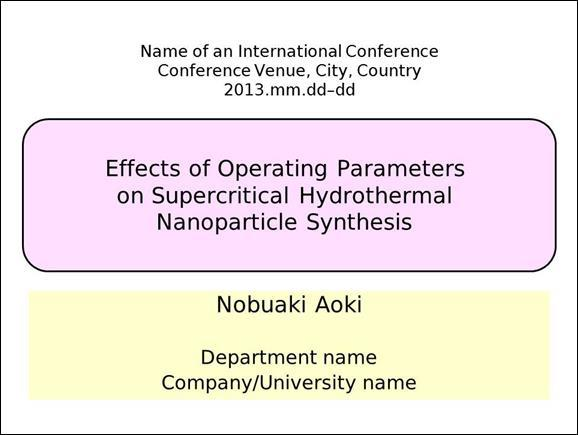
（原則適用前）
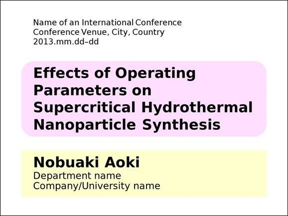
（原則適用後）
図18
コントラスト･整列･近接の適用例
■より見栄えのよくなるフォントを可読性･視認性･汎用性を考えて選ぶようにしよう．
■配色･レイアウトにも気を配ろう．
■コントラスト･整列･近接･反復をデザイン面では意識しよう．
■使い勝手のよいものを提供しよう．
Step 1
ここでお薦めしたフォントの中から好きなものを選んで自分の文書に使ってみよう．印象の変化を感じてみよう．
Step 2
デザインの基本4原則を自分の文書の図やプレゼン資料の1箇所でいいので適用してみよう．
参考文献
[57]
大崎善治；タイポグラフィの基本ルール－プロに学ぶ、一生枯れない永久不滅テクニック－，ソフトバンククリエイティブ (2010)．
Amazon.co.jpの紹介ページ
Kindle版のAmazon.co.jpの紹介ページ
[58]
R. Williams（著），吉川典秀（翻訳）；ノンデザイナーズ･デザインブック［フルカラー新装増補版］，毎日コミュニケーションズ (2008)．
Amazon.co.jpの紹介ページ
（2016年に第4版が出ている）
第4版のAmazon.co.jpの紹介ページ
第4版Kindle版のAmazon.co.jpの紹介ページ
[59]
高橋佑磨，片山なつ；おすすめフォント，伝わるデザイン，http://tsutawarudesign.com/yomiyasuku3.html
．
[60]
ヤガー；CSS 第10回：Windowsフォントをアンチエイリアスでキレイに見せる方法，Creazy!，https://creazy.net/2007/08/windows_anti_alias.html
．
[61]
プロとして恥ずかしくないデザインの大原則，エムディエヌコーポレーション (2004)．
Amazon.co.jpの紹介ページ
[62]
クロスデザイン，黒須信宏：デザイン基本帳 本当に必要なプロのルール，MdN (2009)．
Amazon.co.jpの紹介ページ
[63]
視覚デザイン研究所 編集；7日間でマスターする配色基礎講座，視覚デザイン研究所 (2000)．
Amazon.co.jpの紹介ページ
Kindle版のAmazon.co.jpの紹介ページ
[64]
オブスキュアインク；配色デザインのルール―美しい色の組み合わせにはワケがある。，ワークスコーポレーション (2008)．
Amazon.co.jpの紹介ページ
[65]
視覚デザイン研究所 編集；7日間でマスターするレイアウト基礎講座，視覚デザイン研究所 (1998)．
Amazon.co.jpの紹介ページ
Kindle版のAmazon.co.jpの紹介ページ
[66]
オブスキュアインク；デザイン＆レイアウトの見本帳，MdN (2011)．
Amazon.co.jpの紹介ページ
論文はグラフを含むものがほとんどである．見やすいグラフ，論文にふさわしいグラフを描くのにExcelは向いていない．ここでは，論文に向いているグラフを作成できるIGOR Pro Ver. 5･6（英語版）の利用法を説明する．2019年6月現在，販売されているIGOR Proのバージョンは8.0（日本語版も同じ）になっている．最新版だと使い方が多少異なることがありうることを先に断っておく．
まず，IGOR Proの入手の方法を説明しておく．学生の個人購入の場合は，以下のリンクから年間75ドルで購入が可能である．
https://www.wavemetrics.com/order/studentPolicy
Webで購入の申し込みをすると，次の日にはIGOR Proをインストールするためのファイルをダウンロードできるリンクとシリアル番号･Activation Keyがメールで届く．注文終了の画面で確認メールがすぐ届くとあるが，これは来ない．
次に，ダウンロードした.exeファイルをクリックして，シリアル番号･Activation Keyを入力してIGOR Proをインストールする．インストールができたら，IGOR Proを起動してグラフを作成していく．ここでは散布図と棒グラフ描き方を示す．
まず，表10のデータを，図19の散布図にする方法を説明する．この図ではグラフ内のフォントサイズは11 pt.，フォントの種類はDejaVu Sans（適宜手持ちのフォントに変えてよい）で統一した．
最初に，表10のデータ（数値のみ）を，IGORを起動したときに出てくるExcelのシートのようなところに直接入力するか，Excelに入力してIGORのシートにコピー＆ペーストする．数値を入力すると一番上の列はwave0，wave1，......と表示される．このwaveがExcelでいう系列に相当する．
表10
図19のグラフのデータ
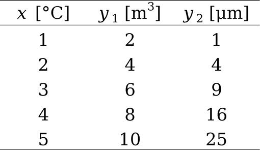
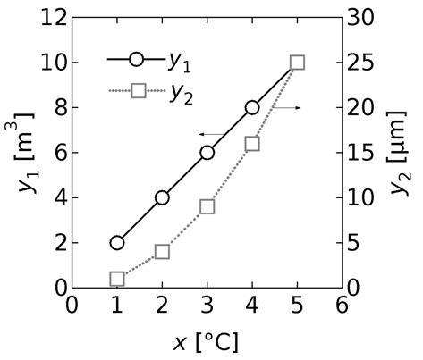
図19
表10のデータをグラフにしたもの
次に，Windows → New Graphでx 軸とy 軸に対応する系列を選択していく．まず，左側のy 1 [m3 ]のプロット設定を行う．X waveにx [°C]を入力したwave（wave0）を選び，Y waveにy 1 [m3 ]を入力したwave（wave1）を選ぶ．Axisはleftにしておく．中央にMore choicesと表示されていたら，このボタンをクリックした後に現れる中央のAddのボタンをクリックする．次に，右側にy 2 [μm]の軸が来るようにする．X waveはそのままで，Y waveにy 2 [μm]を入力したwave（wave2）を選ぶ．Axisはrightにしておく．中央のAddのボタンをクリックする．最後に下のDo Itのボタンを押すとグラフが描かれる．
各軸の範囲･表示文字フォント･ラベルを設定する．まず範囲の設定を行う．各軸の数字付近をクリックするか，Graph → Set Axis Rangeで変更したい軸を選択する．Modify Axisの画面が出て，Axis Rangeのタブが選択されているはずである．x軸（bottom）については，Min Value: 0，Max Value: 6，左のy軸は，Min Value: 0，Max Value: 12，右のy軸は，Min Value: 0，Max Value: 30と入力する．
さらに表示フォントを変える．同じくModify Axisの画面でAxisのタブを選び，left･bottom･right axisについてタブ内の右側のFontでDejaVu Sansを選択し，Size: 11（このフォントの場合は本文と同じサイズのものにするとよい）とする．なお，Modeは対数プロットlog2･log10に変更したいときにラジオボタンを変更する．AxisのAxis standoffのチェックは外し，Mirror AxisはOn（今回の例ではbottomがOffになっていることがある）にするとよい（どのようにグラフが変わるかは実際に変えて見てみよう）．
なお，各軸に表示された目盛の間隔と数字の桁数は，Modify AxisのAuto/Man TicksのタブでAuto TicksをComputed Manual Ticksに変えると，このタブの中央部が入力できるようになるので，目盛の間隔をTick increment，小数点以下の桁数をDigits after dpに入力すればよい（dpはdecimal point，小数点の略）．また，目盛の長さ･太さはModify AxisのTicks and Gridsのタブで中央のTick DimensionsのMajorの列のLength（長さ，ここでは4にしている）とThickness（太さ，ここではAutoのまま）の値を変えればよい．また，目盛がグラフの外側に向かって表示されている場合，このタブ内のLocationを各軸についてInsideに変えれば目盛を内側にすることができる．
軸のラベルの表示を設定するには，ラベルが表示されている付近をダブルクリックして（またはGraph → Modify Axis → Axis Labelのタブ），各軸に以下のように入力する．IGORではバックスラッシュがYenマークで表示される．
左軸：\Z11\F'DejaVu Sans'\f02y\f00\B1\M\Z11 [m\S3\M\Z11]
x 軸：\Z11\F'DejaVu Sans'\f02x\f00 [ｰC]
右軸：\Z11\F'DejaVu Sans'\f02y\f00\B2\M\Z11 [ｵm]
文字飾りの種類を指定するときはバックスラッシュ＋指定を行う文字列で行う．これらはグラフにはもちろん表示されない．Zの後にはフォントのサイズがくる．F'？？？'には''で囲まれた種類のフォントがくることになる．f02はイタリック体，f00は文字飾りがない状態（フォントサイズは不変），Mも文字飾りがない状態だが，フォントサイズもデフォルトの9 pt.に変更されてしまう．このために，Mの記号の後にZ11の指定をしている．Bは下付き（Subscript），Sは上付き（Superscript）にする．°Cの丸の上付きの記号「°」はDejaVu Sansを使っているときはAxis Labelのタブ内の左側のInsert → Special → Characterの±の左に ° がある（半角カナの長音記号を直接入れてもよい）．ギリシャ文字のμもCharacterのパラグラフマーク¶の左側にある（半角のオを直接入れてもよい）．ちなみに掛け算のドット記号「･」は半角のキ，「×」は半角のラ でも表示できる．
また，右側のラベルについてはLabel Option のタブでAxis label rotationのところを90に変更し，左側のラベルと同じ向きに表示 されるようにしておく（デフォルトでは右側は−90で反対向きに表示されてしまう）．最後にすべてが終わったらDo Itを押す．
次にプロットの種類を選ぶ．左側の縦軸に対応するy 1 のプロットを変えるには，y 1 のプロット上をクリックするか，Graph → Modify Trace Appearanceとたどり，y 1 に対応するwave（wave1）を選ぶ．今回の例に対応するには，ModeでLines and markers（線とプロット）とし，白抜きの丸○を選び，size: 4（丸の直径），Thick: 1（丸のラインの太さ）と入力し，Opaque（不透明の意味）のチェックを入れておく．Colorを黒にしておく．LineでSize: 1.00，Style: 0を選ぶ．次に，y 2 に対応するwave（wave2）を選ぶ．ModeでLines and markersは白抜きの四角□を選び，size: 4，Thick: 1と入力し，Opaqueのチェックを外しておく．Opaqueのチェックがないとプロット内に線が入ってしまう．プロットの中に線が入らないほうが好ましいので，Opaqueのチェックは入れておくこと．Colorをグレーにしておく．LineでSize: 1.00，Style: 1を選ぶ．
さらに，凡例を入れる．Graph → Add AnnotationでAnnotationの右のリストでLegend（凡例の意味）を選び，以下のように入力する．入力のルールは軸のラベルのときと同様である．s(wave1)がシンボルに対応する．Symbolsのタグで，凡例のシンボルのサイズ（ここではMarker SizeのところのリストでSame as on Graphを選んでいる），凡例のマーカーの左右にあるライン部分の幅（ここではSymbol Widthを40にしている，プロットだけなら0にする）の設定ができる．
\s(wave1) \Z11\F'DejaVu Sans'\f02y\f00\B1\M\Z11
\s(wave2) \Z11\F'DejaVu Sans'\f02y\f00\B2\M\Z11
このグラフでは y 軸が2種類あるので，どちらのプロットがどちらの軸のものかわかるように，プロットに矢印をつけている． これを行うにはまず，Graph → Show ToolsでVer. 5ではグラフ左上に二つボックスが現れる．下のボックスをクリックすると，矢印やTと書かれたボックスがその下側に現れる．Ver. 6では最初からすべてのボックスが現れている．まずは上から5番目の斜め線を選び，Altキーを押しながらグラフ線上のある点をマウスの左ボタンを押したまま真っ直ぐに移動後，ボタンを離す．すると，左ボタンの押し始めと終了した2点間に直線が引かれているはずである．次に3番目の右左斜め上向きの矢印のボックスをクリックする．これで作成した直線をダブルクリックで選択することでModify Lineの画面を開くことができるようになる．この画面のArrowのところでAt Endを選べば，終点に方向を示す部分が現れ，矢印になる．Ver. 6では編集中の直線･矢印は青色で表示される．これを二つの系列について行えばよい．Graph → Hide Toolsでボックスを非表示にしておく．
最後に，グラフが描けたら，このグラフを文書に貼り付ける必要がある．Edit → Export Graphicsとたどり，Width: 7 (cm)，Height: 6 (cm)， Format: Windows Metafileとし，Colorにチェックを入れる．黒とグレーしかないのでColorのチェックは不要そうにみえるが，このチェックをしないと完全な白と黒だけになってしまうので，灰色を使っているときもColorのチェックは必要 である．WordやPowerPoint上に貼るときもWindows Metafileを選んで貼り付ける．グラフの周辺の白い領域はトリミングでカットしておくと学会要旨などのスペースがシビアな場合には余分な場所を取られずに済む（テキストボックスの内部の余白の上下左右の大きさを小さくすることにも同様の効果がある）．
次に，表11のデータを，図20のような棒グラフにする方法を説明する．まず，IGORを起動しておき，表11の下2行の全列データをIGORの表に貼り付ける．Untreated，NaOHloadedの文字データの入っている列の上がtextWave0となる．次に，Windows → New →Categoryplotと選んでいく．X waveに文字データの系列が自動で入る．X ･Y waveともに文字が反転してすべて選択された状態になっていることを確認して下のDo Itを押す．
表11
図20のグラフのデータ
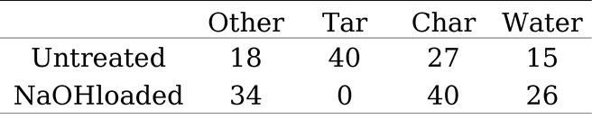
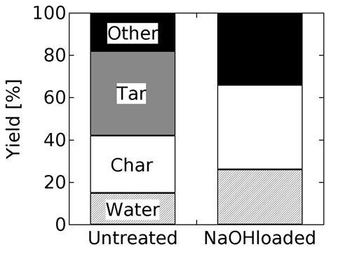
図20
表11のデータを棒グラフにしたもの
現れた棒グラフの上をダブルクリックしてModify Trace Appearanceを開き，wave0･1･2を選択した状態でGroupingをNoneからStack on Nextにする．これで四つの値が一つの棒グラフに累積表示されるようになる．さらに次のように設定する
wave0の+Fill typeをSolid，+Color･Colorを黒
wave1の+Fill typeをSolid，+Colorを灰色，Colorを黒
wave2の+Fill typeをSolid，+Colorを白，Colorを黒
wave3の+Fill typeをPatternの最左列の一番上の斜め線，+Colorを黒，Colorを黒
次に，x 軸の文字のあたりをクリックして，Modify Axisを開いて，両軸共にAxisタブのAxisのところでAxis standoffのチェックを外し，Mirror AxisをOnにし，FontのところでDejaVu Sans（適宜手持ちの半角英数フォントに変えてよい），Size: 11としておく．また，Bottom AxisのAxisタブのAxis下部にあるCategory Gapを増やして33%（柱が67%で空白の幅の2倍になる）にすると，棒グラフの間隔が広がる．Ticks and GridsタブのTick DimensionsのLocationをInsideにしておく．Left AxisのAxis Labelに
\Z11\F'DejaVu Sans'Yield [%]
と記述する．最後にGraph → Add AnnotationのTextタブでAnnotationをTextBoxとしておき，どの部分が何に対応しているかわかるようにOther，Tar，Char，Waterといった記述を棒グラフ上に加えておく．たとえば，Otherは，Textタブに
\Z11\F'Calibri'Other
と入力し，FrameタブでBackgroundをOpaqueとしてDo it（変更字はChange）を押す．このテキストをマウスでつかんで棒グラフの黒く塗りつぶされた領域の上に移動させればよい．なお，矢印やテキストボックスの追加はPowerPoint上でもできる．
11章 では，自分で書いた論文を編集･校正する手順を述べた．ここでは学術雑誌のように出版社側に原稿を編集してもらったときの校正対応を説明する．校正ミスは意外と多いので，ミスが存在することを前提 として確認しよう．
論文が受理されるとその約2週間から1ヵ月後に原稿を雑誌の形式に編集した校正（Proof）のPDFファイルがメールなどで届く，またはオンラインの専用のページからダウンロードできるようになる．研究室によっては教授がCorresponding Authorになっていても，校正の対応は若手の教員や学生が代理で対応することもあるだろう．
出版社がElsevierの雑誌の場合，ProofができあがるとCorresponding Authorに校正確認用のページへのリンクがメールで案内される．このリンクをクリックするとオンライン上で校正とQuery（著者の情報や校正による変更が問題ないか，文献情報が足りない部分への問い合わせ）への回答ができる．画面上部がタブ形式になっているので，「Article」からタブを「GA/Highlights」「Figures/Tables」「References」に切換えて，全体を確認するようにしよう．Queryへの回答を確定させるには，入力欄の右側にある「Save」を押す．校正画面の上のほうに「View Page Proof」のリンクがある．ここからproofのPDFファイルがダウンロードできるので，こちらにもよく目を通して，実際の紙面ではどのよう掲載されるか，編集時の変換ミスがないかを合わせて確認する．確認が終わったらSubmitボタンを押す．校正への返答内容をまとめたPDFファイルは「Generate Report」ボタンからダウンロードできる．このPDFファイルはSubmitしたときに自動でCorresponding Authorにも行く．
ほかの出版社でも，ProofのPDFファイルによく目を通してして編集時の変換ミスがないか確認するのは基本的に同じだ．出版社によっては，原稿に赤字で印が付されていて，原稿からProofを作成する際に原稿に手を加えた部分がわかるようになっている．訂正の必要の有無，訂正が必要ならその内容をProofが到着してから48時間以内に返信 することが好ましい．訂正内容はProofのPDFファイルに直接入力が可能であることが多い．このPDFファイルに校正内容や問い合わせへの返答を加えたもの，または校正内容と回答を記載したテキストファイル（or Wordファイル）をEメールで返信するか，Proofをプリントアウトして訂正内容を書き込んで問い合わせへの返答とともにFAXまたはEmail（書き込んだものをスキャンする）で送る．
校正時の注意点を以下に列挙しておく．訂正の要求は通常一度しかできず，追加での訂正は不可能 なので注意してProofに目を通すようにしよう．また，この時点では編集に伴う表記ミスと文献リストの訂正･更新だけを行う．
■原稿が間違っているとそのまま修正されずに出版されてしまう．原稿の時点で表記ミスのないものにしておくこと．
■原稿が間違っていて，そのままになっていないか（単位や文献の表記）？
■編集の段階で表記が変わってしまっていないか（投稿した原稿と照らし合わせながら確認･訂正をしよう）？以下の点に注意しよう．
○フォントのイタリック体が立体になっていないか，上付き･下付きはあっているか？
○英単語の大文字･小文字の使い方は合っているか？
○単語が間違って変換されていないか？語尾にingがつけられていることなどがある．
○改段落の位置が違うこともまれにある．
○セクション分けが元と異なる，セクション番号のふり方が間違っていないか？
○単語と単語の間のスペースは入っているか？原稿の行が変わる位置はとくに注意しよう．
○文字化けしていないか？特殊文字はとくに注意が必要，図中のフォントも気をつけよう．
○数式は正しく表記されているか？数式のカッコや数値，小数点は正確に再現されているか？
○表の情報は正しく反映されているか？
○文献リストの情報はおかしくなっていないか？（T. Kawaguchi, H. Miyata, K. Ataka, K. Mae, J.-I. Yoshida → T. Kawaguchet et al. とされた例がある）
○図は正確に再現されているか？図中の凡例の変更や消去がないか？目盛りの数値は正しく反映されているか？（図中の文字を出版社側が打ち直す場合はとくに注意が必要，1.0→1.6となっていたことがある）
■文献リストに不具合があるとQueryに改訂案で正しいかを聞かれたり，自分で訂正するように求められたりする．文献リストは正しく作成することが重要である．文献リストは完全に正確でないとWeb上でのリンクが張られないので細心の注意を払うこと．
■原稿を投稿した時点ではin pressだった文献でページ数や巻号が決定したものはないか？
■文献のページ範囲は正しいか？他の文献と紛らわしいことがあるので注意する．できれば文献情報は手打ちせずに出版社のWebからコピー＆ペーストで原稿に貼り付けるほうが安全である．
■文献番号は正しく付いているか？余分なもの，不足しているものはないか？
■住所の表記は正しいか？郵便番号や電話番号に注意する．
博士論文は国会図書館にも納本され長期にわたって残り続ける．このため長期の保管に耐える製本をしたものを提出するように大学に求められることもある．大学には電子データの提出だけでも，お世話になった方々に御礼の意味も込めて冊子にしたものを送ることもあるだろう．だから後悔のないように製本をしてもらいたい．しかし，製本には独特の用語があって習う機会がないほうが多いと思う．この用語を知っておいたほうが自分の望む製本をより確実にできる．そこで製本に関して知っておくといいと筆者が考えている情報を追加しておく．
まず，執筆を始める前に，自分の博士論文中で統一して用いるスタイルを決めておこう．カラー印刷をするかどうかは製本の価格に大きく影響するのでカラーにする基準も決めておくといい．スタイルの一例を次に列挙しておく．スタイルを決めておく観点として参考にして自分なりにアレンジしてもらって構わない．博士論文は文章の量が多いので，スタイルをあらかじめ決めておかないと表現の一貫性が崩れるおそれがある．後から統一するのは大変だ．国会図書館に納本されるように，博士論文は市販される本と同じ扱いをされる．そのつもりでスタイルの統一といった編集･校正もできるだけしよう．11.2節 も合わせて参照するといいだろう．
■上下の余白は30 mm，左右の余白は25 mmとする（A4サイズの場合）．
■シングルスペースで行間を18ポイント，1ページの行数を37行とする．（ページレイアウトを調整しやすいように多少増減させてもよい）
■図中･小節のタイトルまでのフォントは，Segoe UI（英数）・IPAexゴシック（日本語）で統一する．
■本文･表中･へッダー･フッターのフォントは，Palatino Linotype（英数）・IPAex明朝（日本語）で統一する．
■図中のフォントサイズは10ポイントで統一する．
■表中のフォントサイズは10ポイントで統一する．
■章のタイトルの上は2行20ポイントの余白をとり，タイトルの下に3行11ポイントの余白をとってから，その章の緒言を書き始める．
■章のタイトルは20ポイント，節は12ポイント，小節は11ポイント，本文は11ポイント，図･表のキャプション･ヘッダーは10ポイントで書く．
■本編の各章の最初に簡単に背景を説明し，内容の要約を述べる緒言をつける．
■節の前は2行の空白，後に1行の空白，小節の前後は1行の空白をとる．
■小小節は使わない（1.1，1.1.1まで）．()だけで内容を分ける．
■図の上は2行空ける．図の下とキャプションの間も1行空ける．キャプションの下に2行の空白をとる．ページレイアウトによってはこの空白の行を増減してもよい．
■IGOR Proで作るグラフの基本サイズは幅8 cm，高さ7 cmとする．状況によっては多少サイズを変えてもよい．
■スペースに余裕があれば，凡例はプロット･曲線の近くに示す．グラフのプロットエリア内に凡例は入れる．
■プロットエリアは四角で囲む．
■図番号の()の前にはスペースなし，後には半角スペースを入れる（ex. 図2.1(a) は）．
■図中に(a)などの表記は入れない．図の下にキャプションをそれぞれつける．
■PowerPoint上で加えた上付文字は相対位置50％（デフォルトは30％）にするか，ワード上で上付きにするか，Igorで作った凡例をコピーして使う．
■グラフの曲線は1から2ポイント程度の太さにする．
■カラーで製本したいもの（写真など）だけをカラーで作図 する．製本のコストを押さえるため．
■数式の前後も1行空ける．数式の左側に全角5文字分インデントをとる．
■数式番号は(1.1)のように章ごとにつける．右ぞろえタブを使い数式番号は右端から左に1文字分のところに数式番号の右側のカッコがくるようにする．
■半角カッコの後は半角スペースをとる．
■ /（割り算）の前後はスペースを取らない．
■Symbolフォントのμ（マイクロ）ではなく，記号と特殊文字からマイクロの文字を挿入する．
■ページ下部に余白を作らない （文章量･図のサイズでページレイアウトを調整 する）．
■単位はm2 /sではなく，m2 ･s−1 の表記にすべて統一する．図中の単位にも注意する．
■数値と単位の間で改行しない．ダミーの空白を入れて調整する．
■マイナスは記号と特殊文字の算術記号の分類にあるものを，範囲を示す「--」は記号と特殊文字のn-dashを利用する．
■段落の最後の行が1文字＋読点だけになるのは避ける．段落の最終行だけが次のページになってしまうことも避ける．ページレイアウトに注意する．左（偶数）ページの左上，右（奇数）ページの右上にページ番号を入れる．
■各章の最後にその章で引用した文献のリストを載せる．
■文献情報のスタイルは，雑誌記事なら，著者名，雑誌名の略称（イタリック体），巻数（号数は入れない），最初と最後のページ数（間をen dashで結ぶ），西暦を()で囲む．最後に半角のピリオドを打つ．
■本なら，著者名，タイトル，出版社名，出版都市，国名，ページ範囲 (西暦).
■左ページヘッダーに章のタイトルとページ数を入れる．左右のページを区別する．章の最初のページにはページ数だけをページのフッター中央に示す．
■ヘッダーに章のタイトルなどを入れる場合，右（奇数）ページよりも左（偶数）ページに大きい要素を入れる．たとえば，左に編のタイトル，右に章のタイトルを入れる．
■各章は右（奇数）ページからはじめる．章が奇数ページで終わる場合は，その裏のページは白紙になる（ページ番号も入れない）．
■各章の開始ページだけヘッダーは入れず，ページ番号もページ下中央に入れる．
次に製本の注文方法に移る．製本の注文先は大学の生協が最も研究室から近くて，大学の居室に届けてくれるので自分が動き回らなくていい利点がある．ただし，金額や納期が最善とは限らない．また，生協の場合は受け付けてくれる店員さんが製本や印刷の専門家ではないだろうから，なおのこと希望を明確に伝える必要がある．大学近隣の印刷所に頼むのもいいし，研究室によっては伝統的に使っている製本屋があるかもしれない．
注文時には製本の詳細の希望をまとめたものを原稿とともに持ち込むと注文がスムーズに進む．以後の説明で強調した言葉は知っておくと注文で役に立つ．
表紙に使う紙のレザック66 は，たとえば次のページのような凹凸のある厚紙である．
■特種東海製紙；レザック66 ，特種のタネ
100ページ以上の製本で強度とコストの兼ね合いでバランスがよい．基本色と特別色があり，特別色のほうが価格が高い．レザックや通常の厚紙で行うのが「くるみ製本」 （並製本，ソフトカバー）だ．
参考：株式会社吉岡；レザック
黒いハードカバーで金文字でタイトルなどを印字した「上製本」 は製本部分のみで1冊数千円かかる．
参考：石川特種特級製本；上製本・ハードカバー
あい紙とは表表紙の後･裏表紙の前にある両面白紙のページである．「章」よりもさらに大きな内容の区切りとして第1編，第2編，......と分けることがある．そのときに「編」の間の区切りに入れることもある（こちらには編のタイトルのみ載せる）．見返し貼りは表･裏表紙の内側に直接貼り付けることで表紙の強度を上げる機能がある．これらを入れると製本費用は少し高くなる．なお，これらの用語と実際の博士論文の冊子がどう対応するかをYoutubeの動画 でも解説しているので参考にしてほしい．
注文時に出す製本の希望の例を最後に載せておく．
＜製本について＞
■表紙にはレザックのクリーム色を使ってください．
■くるみ製本（並製本）をしてください．
■カラーのページはありません．
■ページ数（ノンブル）は章の最初のページはページ下部中央に，左（偶数）ページには左側，右（奇数）ページには右側にページ数をすでに入れてあります．原稿をそのまま製本してください．
■この原稿の構成は前から順に，内表紙･目次･緒論･第I編表紙･第1章･第2章･第3章･第4章･第II編表紙･第5章･第6章･総括･謝辞･本論文に関連する著者の発表論文，となっています．
■内表紙と各編の表紙（17ページと97ページに相当）にはページ数が入っていませんがそのままにしてください．これらは他の本分のページと同様，白紙に印刷してください．
■内表紙･目次･緒論･第I編表紙･各章･総括･謝辞･本論文に関連する著者の発表論文の開始ページは右側（奇数）ページから始まるようにページ番号を入れています．
■内表紙，各編の表紙の裏側（18ページと98ページに相当），第1章･第2章･第5章の最終ページの裏側（38ページ，72ページ，114ページにそれぞれ相当）は白紙にしておいてください．
■背表紙にもタイトル･年数（漢数字で表記）･氏名を入れてください．（別紙参照）
■表表紙の後，裏表紙の前にあい紙を入れてください．
■表表紙･裏表紙の裏に見返し貼りをしてください．
氏名
所属
電話番号等連絡先
本書を最後までお読みいただきありがとうございました．冒頭でも述べたように特典として，本文中に出てくる論文作成の全体の理解に役立つ図と各章の内容をまとめたPDFファイルを次のリンクからダウンロードいただけます．短時間で全体を復習するのにお役に立てば幸いです．
URL
https://www.panoramic-view.info/pdf/Stylebook-Summary-hfa9r8TUSL.pdf
青木 宣明（あおき のぶあき）
2006年 京都大学大学院工学研究科化学工学専攻 博士後期課程修了 博士（工学）
2006年 京都大学大学院工学研究科化学工学専攻 助手
2007年 京都大学大学院工学研究科化学工学専攻 助教
2011年～2017年 東北大学原子分子材料科学高等研究機構 助教
Amazon著者ページ
https://www.amazon.co.jp/l/B00HG3B4J0
著者の関連書籍
StylebookBot をベースに本書よりも短時間で効果的に論文の書き方を学べる教材にした．スマホのような幅の狭い画面でも読みやすい改行･改段落設定になっている．研究や通学のスキマ時間を使って学んでみてほしい．
研究者･技術者にとって英語による情報発信は必須である．英語の学習教材も充実している．しかし，数が多すぎてどこから手をつけたらよいかわからない方もいるだろう．英語自体が研究者･技術者の目的ではないので，できるだけ時間をかけたくない方もいるだろう．そのような方のために効率的･効果的に英語論文･プレゼンについて学ぶ手段をまとめて紹介した．付録には論文投稿に関連したレターやプレゼンの原稿の例，自分で自分の英語をチェックするためのリストも掲載している．
自分が伝えたいことを自分の身の丈に合った方法で表現しつつ，聞き手に伝わりやすくするための研究に関するプレゼンのコツをまとめた．プレゼンで「何」を表現するかだけでなく，「どうやって」「なぜ」表現するのかもわかるようにしている．学んだことを「すぐに」実践するための簡単なワークも各節の最後に入れた．さらに，自分のプレゼンの質を自分でチェックできるリストも用意した（テキストファイルとしてダウンロードも可能）．プレゼンに臨む際のメンタル面のケアについて詳細に解説しているのも本書の特徴だ．
Stylebook－わかってもらえる論文の書き方
2019年 7月 1日 第5版第5刷 発行
2016年12月 1日 第5版第1刷 発行
2015年 3月 2日 第4版第1刷 発行
2014年 3月 8日 第3版第1刷 発行
2013年12月27日 第2版第1刷 発行
2013年 8月 4日 第1版第1刷 発行
カバーデザイン：青木 慶子
著者･発行者：青木 宣明
© 2013--2019 青木 宣明
Email：nobuaki-aoki@panoramic-view.info
HP兼ブログ：https://www.panoramic-view.info
Facebook：https://www.facebook.com/nobuaki.aoki.5
Twitter：https://twitter.com/nobu8aoki
Twitter Bot：https://twitter.com/StylebookBot
個人利用や引用の範囲を超える無断複製･転載を禁止します．
Windows，Office，Word，Excel，PowerPointは
米国Microsoft Corporationの米国およびその他の国に
おける商品名称，登録商標または商標です．
IGOR ProはWaveMetrics Inc.に著作権があります．